DRAFT — UE26MA141A · Unit_04 — Unit 4 · Complete Unit Master
·How to use this pack
Search this single unit master by lesson, timestamp, slide text or source page. Read the transcript in timestamp order, then compare extracted slide text with its page-faithful source figure. Formula candidates and archive question mappings are explicitly flagged for review. Topics include the applicable parts: overview, key terms, formulas, figures, flowcharts, important points, worked examples, past-paper questions and a recap. IDs are shared with the separate documents: E = formula, G = graph, F = flowchart, W = worked example. Each ID is numbered by topic, so E4.2 is the second formula of topic 4.
1UE26MA141A · Unit_04: Unit 4
This unit master organizes source material for Engineering Mathematics - I, Unit_04, officially titled Unit 4. It includes 6 video transcripts and 11 source slide decks, with page-level text and rendered images where available. This draft preserves source wording and page order; it does not claim a complete human subject review or full audiovisual review. EV0000001
2Gamma functions - definition, graph and properties
This lesson is indexed from the source video titled Gamma functions - definition, graph and properties. Its complete timestamped transcript is preserved below in segment order. The original video path and content hash are recorded in datasets/lecture-corpus.json. Transcript text is source wording; it has not been silently corrected or rewritten. A candidate slide deck is grouped here according to the current matching score; the exact path and page locators are listed in the source evidence. EV0000002 · EV0000003
Graphs and diagrams
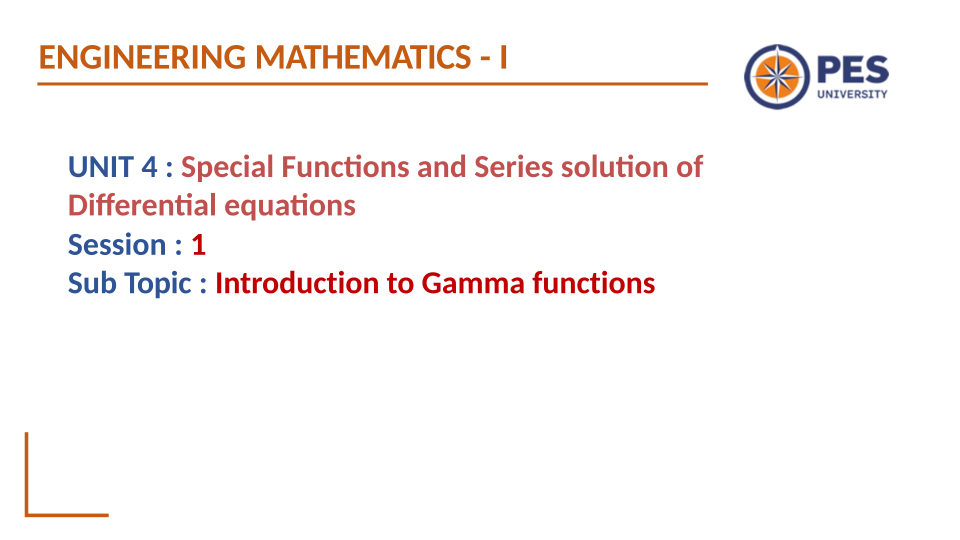
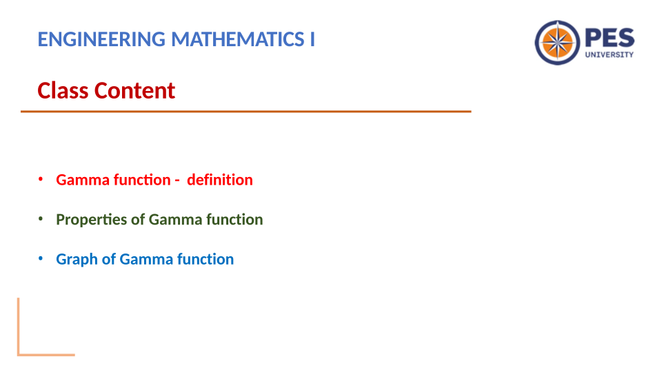
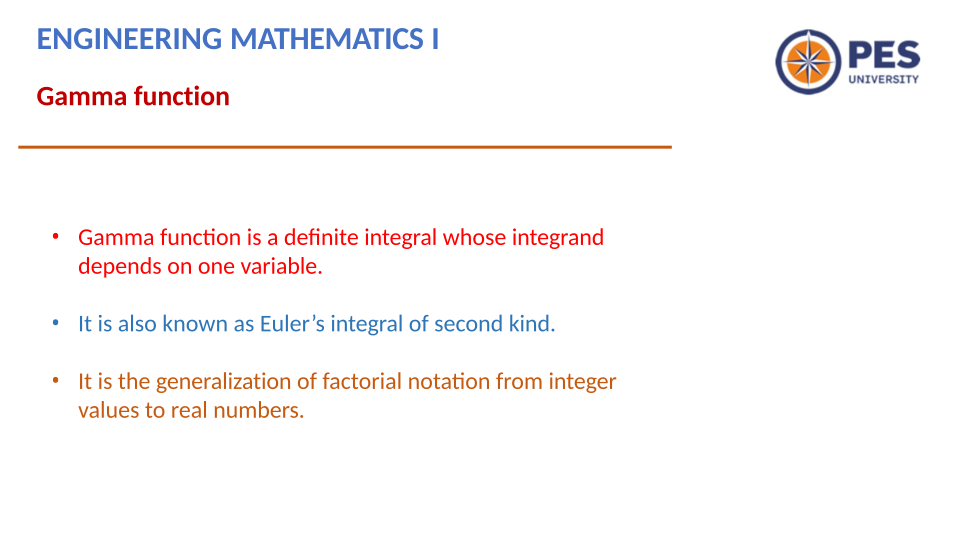
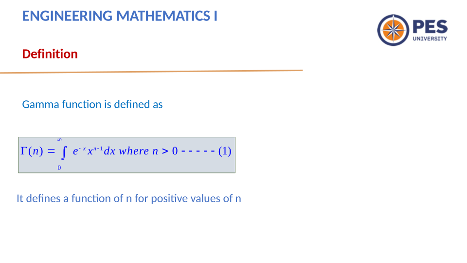
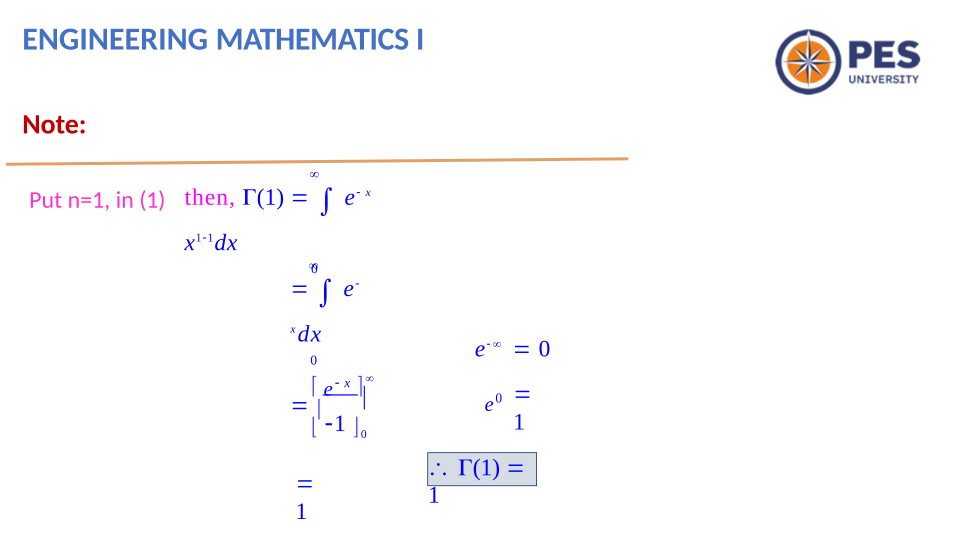
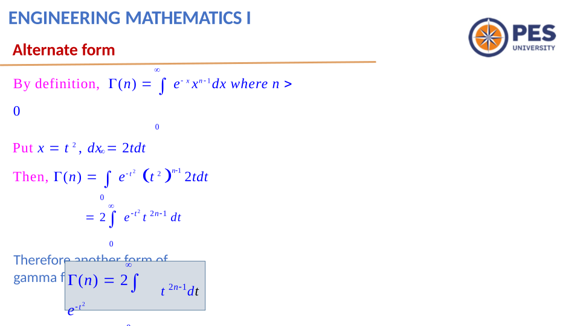
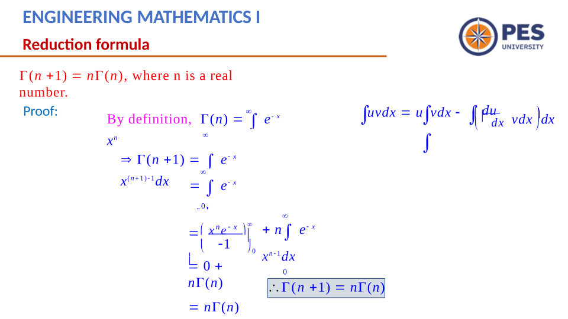
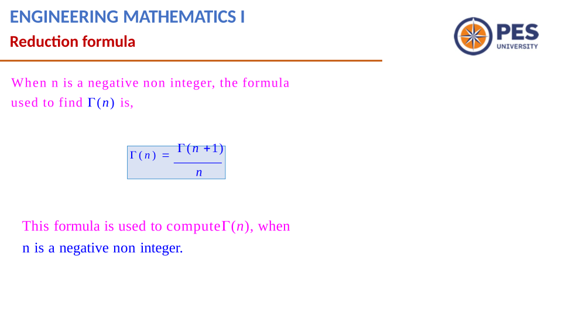
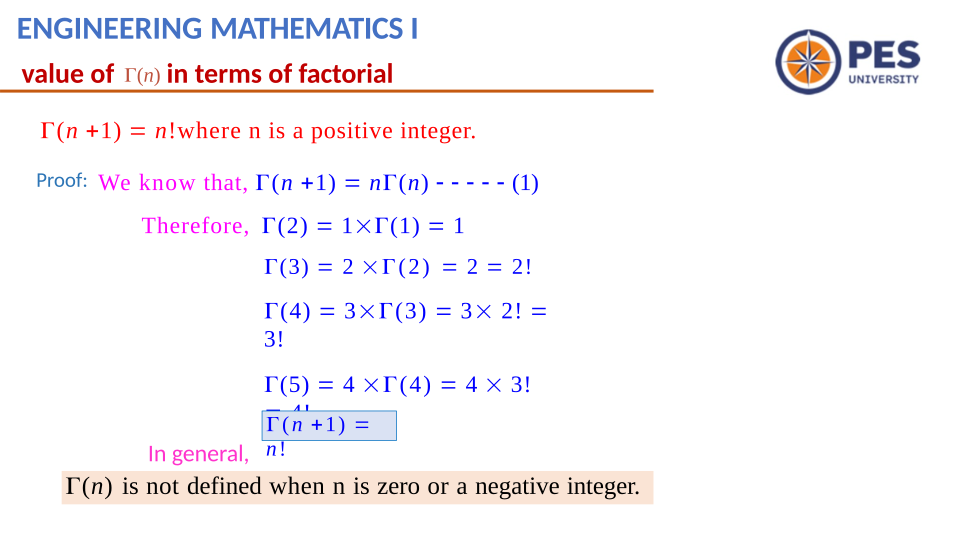
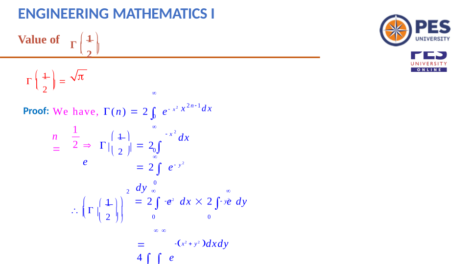
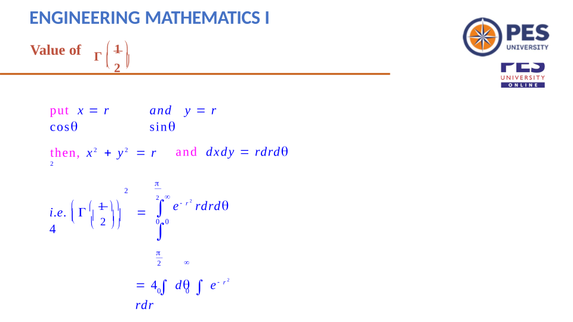
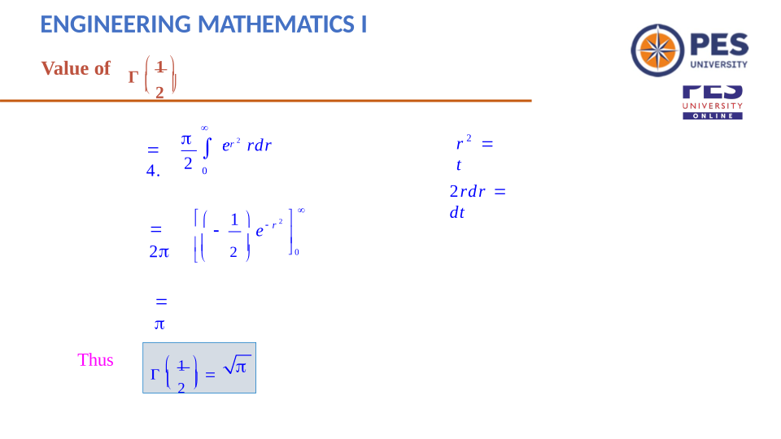
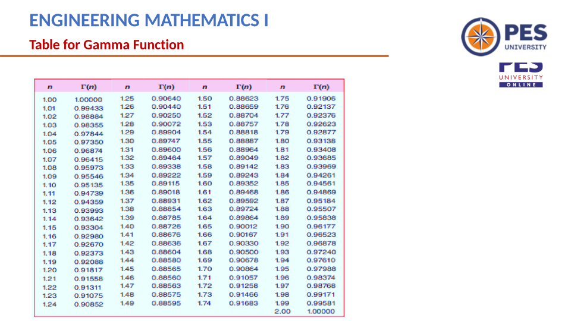
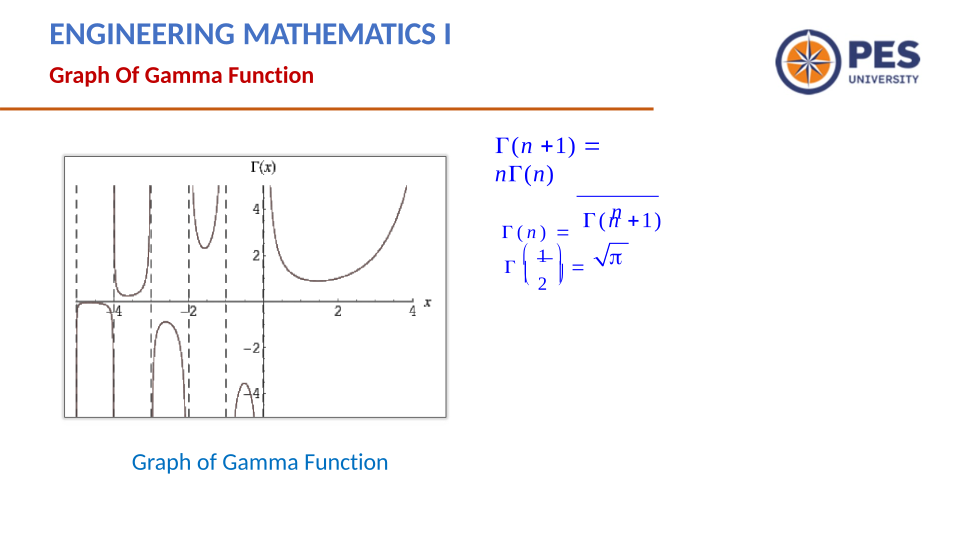
Important points and why
- Source slide page 1 (extracted text): [Image text, OCR] PES UNIVERSITY CELEBRATING5OYEARS ENGINEERING MATHEMATICS - I UE26MA141A Department of Science and Humanities EV0000094 · EV0000095 · EV0000096
- Source slide page 2 (extracted text): ENGINEERING MATHEMATICS - I UNIT 4 : Special Functions and Series solution of Differential equations Session : 1 Sub Topic : Introduction to Gamma functions EV0000097 · EV0000098 · EV0000099
- Source slide page 3 (extracted text): ENGINEERING MATHEMATICS I Class Content Gamma function - definition Properties of Gamma function Graph of Gamma function EV0000100 · EV0000101 · EV0000102
- Source slide page 4 (extracted text): ENGINEERING MATHEMATICS I Gamma function Gamma function is a definite integral whose integrand depends on one variable. It is also known as Euler’s integral of second kind. It is the generalization of factorial notation from integer values to real numbers. EV0000103 · EV0000104 · EV0000105
- Source slide page 5 (extracted text): ENGINEERING MATHEMATICS I Definition Gamma function is defined as (n) e x xn1dx where n 0 (1) 0 It defines a function of n for positive values of n EV0000106 · EV0000107 · EV0000108
- Source slide page 6 (extracted text): ENGINEERING MATHEMATICS I Note: then, (1) e x x11dx 0 Put n=1, in (1) e xdx 0 e 0 e x e0 1 1 0 (1) 1 1 EV0000109 · EV0000110 · EV0000111
- Source slide page 7 (extracted text): ENGINEERING MATHEMATICS I Alternate form By definition, (n) e x xn1dx where n 0 0 Put x t 2 , dx 2tdt Then, (n) et2 t 2 n1 2tdt 0 2 et2 t 2n1 dt 0 Therefore another form of gamma function is, (n) 2 et2 0 t 2n1dt EV0000112 · EV0000113 · EV0000114
- Source slide page 8 (extracted text): ENGINEERING MATHEMATICS I Reduction formula (n 1) n(n), where n is a real number. By definition, (n) e x xn1dx 0 du dx Proof: uvdx u vdx vdx dx (n 1) e x x(n1)1dx 0 e x xndx 0 xne x n e x xn1dx 0 1 0 0 n(n) n(n) (n 1) n(n) EV0000115 · EV0000116 · EV0000117
- Source slide page 9 (extracted text): ENGINEERING MATHEMATICS I Reduction formula When n is a negative non integer, the formula used to find (n) is, (n) (n 1) n This formula is used to compute(n), when n is a negative non integer. EV0000118 · EV0000119 · EV0000120
- Source slide page 10 (extracted text): ENGINEERING MATHEMATICS I value of (n) in terms of factorial (n 1) n!where n is a positive integer. Proof: We know that, (n 1) n(n) (1) Therefore, (2) 1(1) 1 (3) 2 (2) 2 2! (4) 3(3) 3 2! 3! (5) 4 (4) 4 3! 4! In general, (n 1) n! (n) is not defined when n is zero or a negative integer. EV0000121 · EV0000122 · EV0000123
- Source slide page 11 (extracted text): ENGINEERING MATHEMATICS I Γ 1 Value of 2 1 2 Proof: We have, (n) 2 e x2 x2n1dx 0 1 2 1 2 e 2 n x dx 2 0 2 e y2 dy 0 2 e dx 2 e dy 2 1 x2 y2 2 0 0 4 e 0 0 x2 y2 dxdy EV0000124 · EV0000125 · EV0000126
- Source slide page 12 (extracted text): ENGINEERING MATHEMATICS I Γ 1 Value of 2 put x r cos and y r sin and dxdy rdrd then, x2 y2 r 2 2 2 e r2 rdrd i.e. 1 4 2 0 0 2 4 d e r2 rdr 0 0 EV0000127 · EV0000128 · EV0000129
- Source slide page 13 (extracted text): ENGINEERING MATHEMATICS I Γ 1 Value of 2 2 e rdr 0 2 r t 2 r 4. 2rdr dt 1 2 2 r e 2 0 1 Thus 2 EV0000130 · EV0000131 · EV0000132
- Source slide page 14 (extracted text): ENGINEERING MATHEMATICS I Table for Gamma Function [Image text, OCR] m T(n) m T(m) r(n) r(n) 1.00 1.00000 1.25 0.90640 1.50 0.88623 1.75 0.91906 1.01 0.99433 1.26 0.90440 1.51 0.88659 1.76 0.92137 1.02 0.98884 1.27 0.90250 1.52 0.88704 1.77 0.92376 1.03 0.98355 1.28 0.90072 1.53 0.88757 1.78 0.92623 1.04 0.97044 1.29 0.89904 1.54 0.88818 1.79 0.92877 1.05 0.97350 1.30 0.89747 1.55 0.88887 1.80 0.93198 1.06 0.916874 1.31 0.89600 1.56 0.88964 1.81 0.93408 1.07 0.96415 1.32 0.89464 1.57 0.89049 1.82 0.93685 1.08 0.95979 1.3.3 0.89338 1.58 0.09142 1.83 0.93969 1.09 0.95546 1.34 0.89222 1.59 0.89243 1.84 0.94261 1.10 0.95135 1.35 0.89115 1.60 0.89352 1.85 0.94561 1.11 0.94739 1.36 0.89018 1.61 0.89468 1.86 0.94869 1.12 0.94359 1.37 0.88931 1.62 0.89592 1.87 0.95184 1.13 1.38 0.88854 1.63 0.89724 1.88 0.93993 0.95507 1.14 0.93642 1.39 0.88785 1.64 0.89864 1.89 0.95838 1.15 0.93304 1.40 0.88726 1.65 0.90012 1.90 0.96177 1.16 0.92980 1.41 0.88676 1.66 0.90167 1.91 0.96529 1.17 0.92670 1.42 0.80636 1.67 0.90330 1.92 0.96878 1.18 0.92373 1.43 0.88604 1.68 0.90500 1.93 0.97240 1.19 0.92088 1.44 0.88580 1.69 0.90678 1.94 0.97610 1.20 0.91817 1.45 0.88565 1.70 0.90864 1.95 0.97988 1.21 1.46 0.88560 1.71 0.91550 0.91057 1.96 0.98374 1.22 1.47 0.88563 1.72 0.91311 0.91258 1.97 0.98768 1.23 0.91075 1.48 0.88575 1.73 0.91466 1.98 0.99171 1.24 0.90852 1.49 0.88595 1.74 0.91683 1.99 0.99581 2.00 1.00000 EV0000133 · EV0000134 · EV0000135
- Source slide page 15 (extracted text): ENGINEERING MATHEMATICS I Graph Of Gamma Function (n 1) n(n) (n) (n 1) [Image text, OCR] T(x) 4 2 44 2 2 4 一 2 A n 1 2 Graph of Gamma Function EV0000136 · EV0000137 · EV0000138
- Source slide page 16 (extracted text): [Image text, OCR] PES UNIVERSITY CELEBRATING5OYEARS Thank you Department of Science and Humanities EV0000139 · EV0000140 · EV0000141
3Definition of Beta function and its properties
This lesson is indexed from the source video titled Definition of Beta function and its properties. Its complete timestamped transcript is preserved below in segment order. The original video path and content hash are recorded in datasets/lecture-corpus.json. Transcript text is source wording; it has not been silently corrected or rewritten. A candidate slide deck is grouped here according to the current matching score; the exact path and page locators are listed in the source evidence. EV0000014 · EV0000015
Graphs and diagrams

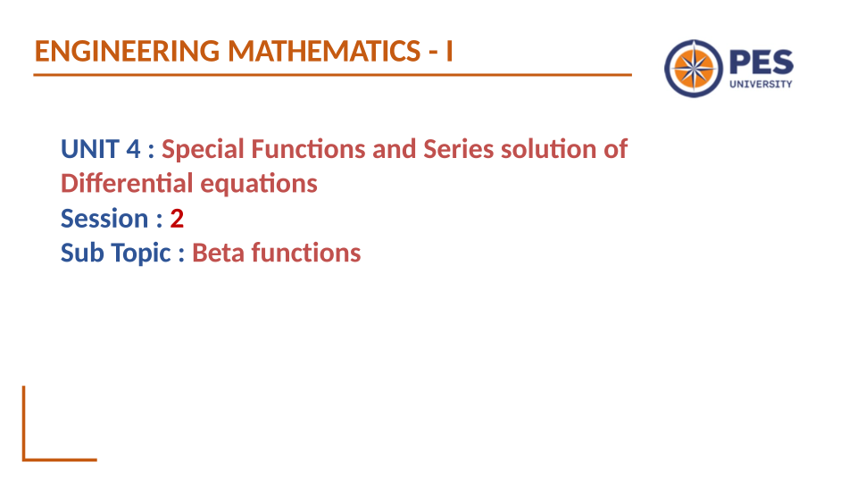
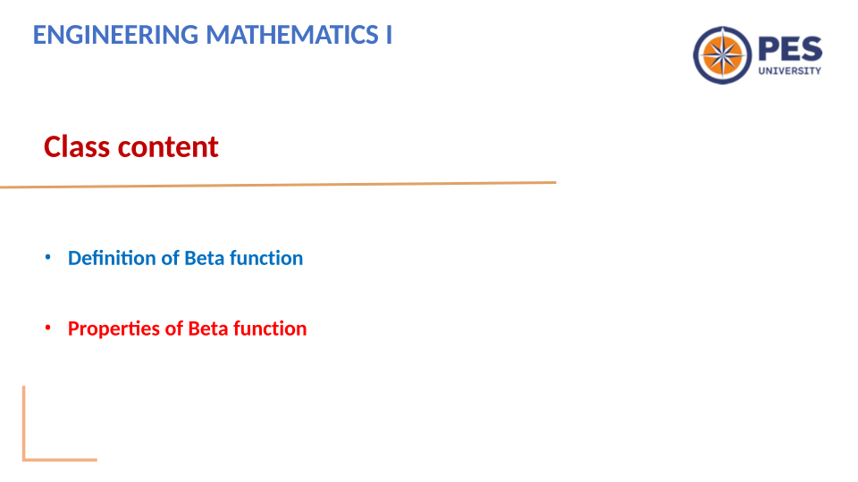
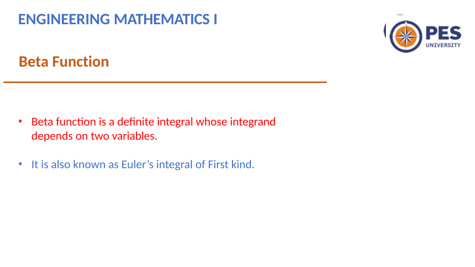
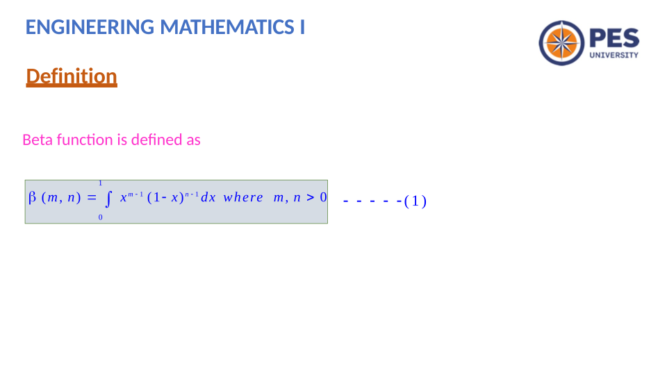
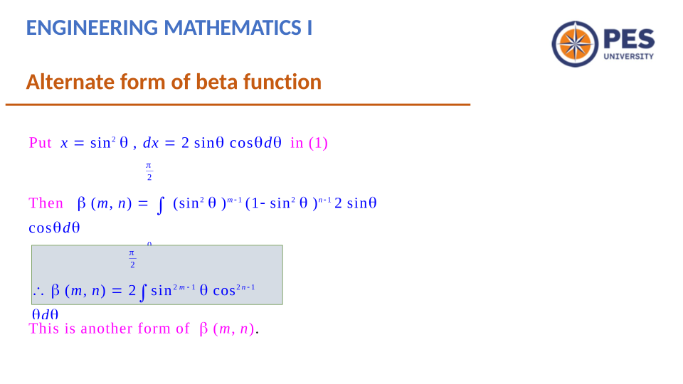
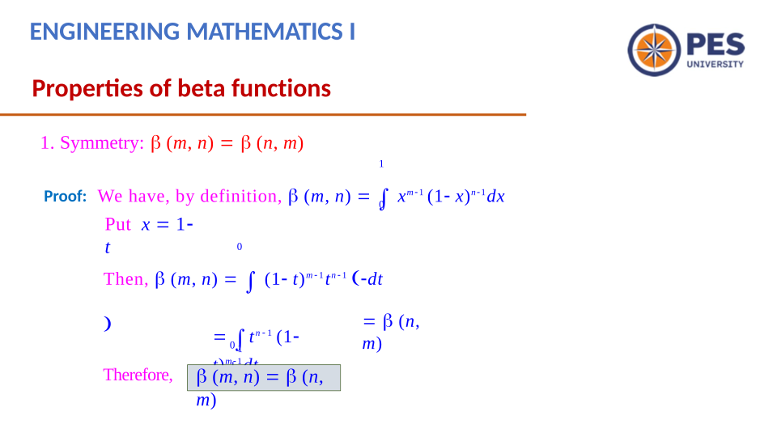
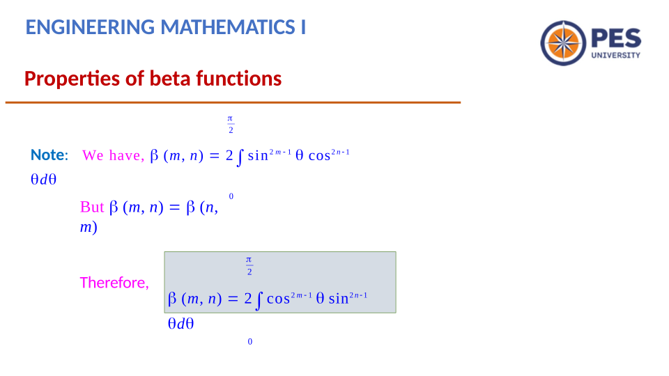
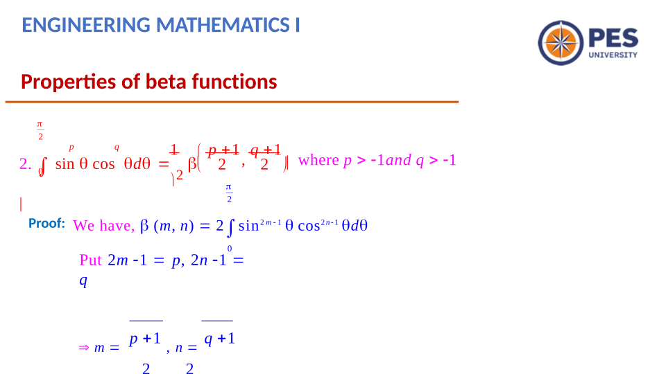
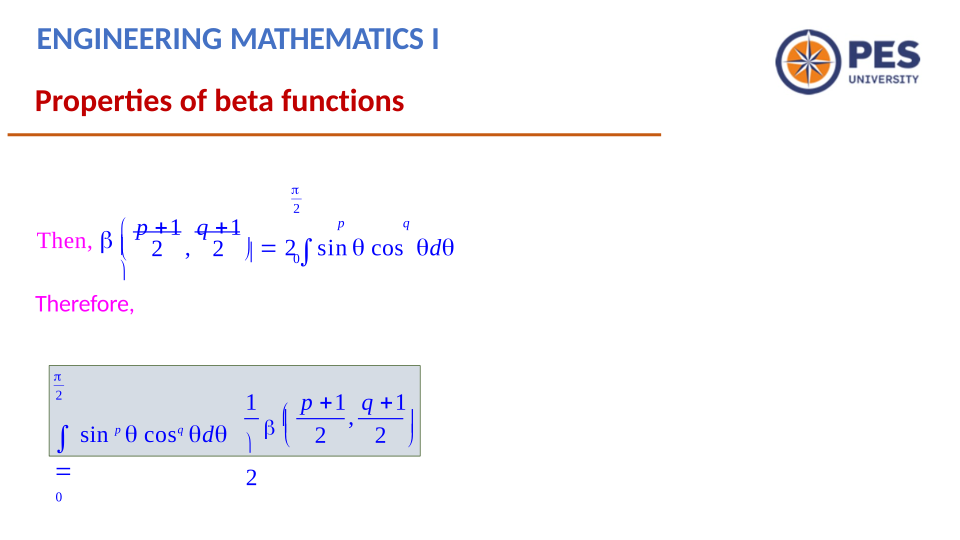
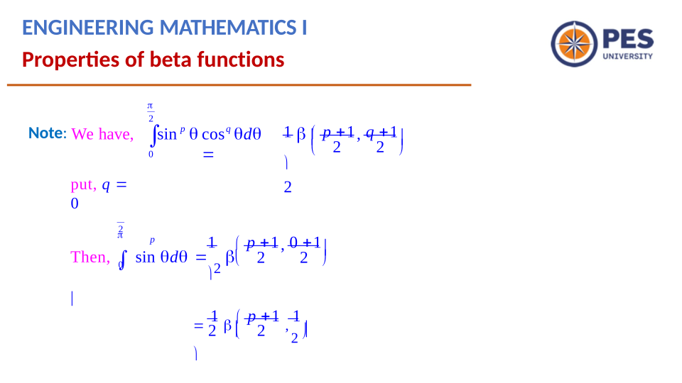
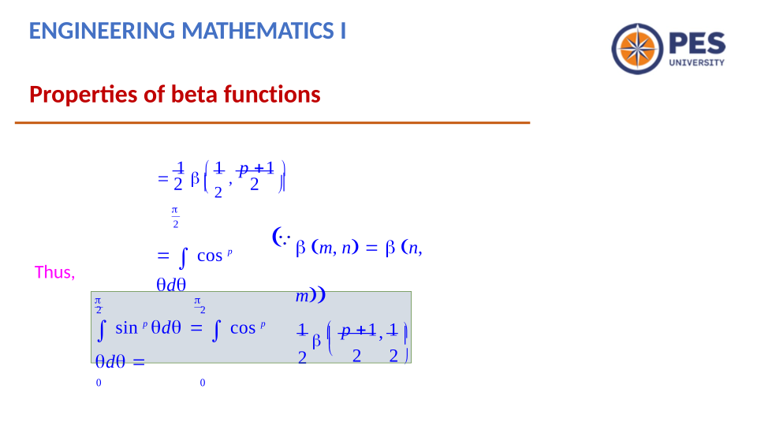
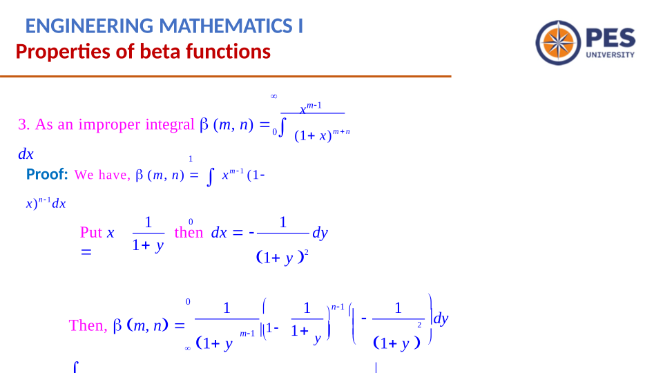
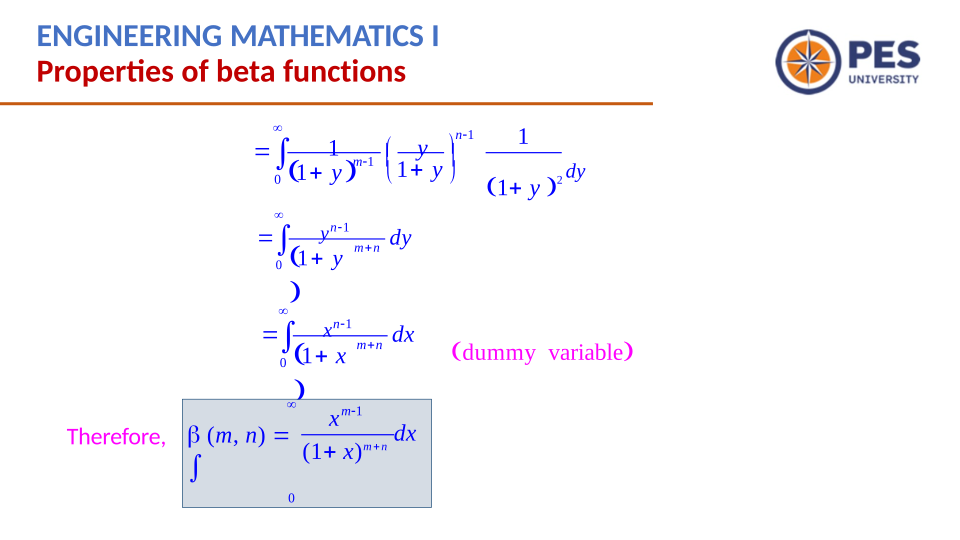
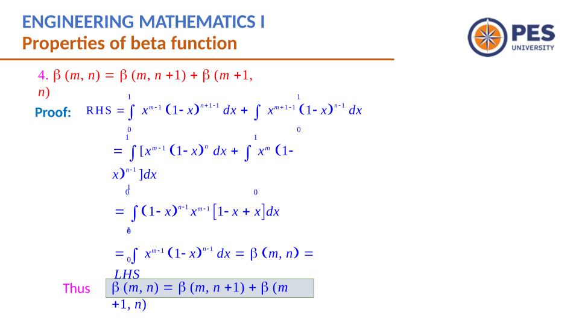

Important points and why
- Source slide page 1 (extracted text): [Image text, OCR] PES UNIVERSITY CELEBRATING5OYEARS ENGINEERING MATHEMATICS - I UE26MA141A Department of Science and Humanities EV0000142 · EV0000143 · EV0000144
- Source slide page 2 (extracted text): ENGINEERING MATHEMATICS - I UNIT 4 : Special Functions and Series solution of Differential equations Session : 2 Sub Topic : Beta functions EV0000145 · EV0000146 · EV0000147
- Source slide page 3 (extracted text): ENGINEERING MATHEMATICS I Class content Definition of Beta function Properties of Beta function EV0000148 · EV0000149 · EV0000150
- Source slide page 4 (extracted text): ENGINEERING MATHEMATICS I Beta Function Beta function is a definite integral whose integrand depends on two variables. It is also known as Euler’s integral of First kind. EV0000151 · EV0000152 · EV0000153
- Source slide page 5 (extracted text): ENGINEERING MATHEMATICS I Definition Beta function is defined as 1 (m, n) xm1 (1 x)n1dx where m, n 0 0 (1) EV0000154 · EV0000155 · EV0000156
- Source slide page 6 (extracted text): ENGINEERING MATHEMATICS I Alternate form of beta function Put x sin2 , dx 2 sin cosd in (1) Then (m, n) (sin2 )m1 (1 sin2 )n1 2 sin cosd 0 2 2 (m, n) 2sin2m1 cos2n1 d 0 This is another form of (m, n). . EV0000157 · EV0000158 · EV0000159
- Source slide page 7 (extracted text): ENGINEERING MATHEMATICS I Properties of beta functions 1. Symmetry: (m, n) (n, m) 1 Proof: We have, by definition, (m, n) xm1 (1 x)n1dx 0 Put x 1 t Then, (m, n) (1 t)m1tn1 dt 1 1 0 tn1 (1 t)m1dt (n, m) 0 (m, n) (n, m) Therefore, EV0000160 · EV0000161 · EV0000162
- Source slide page 8 (extracted text): ENGINEERING MATHEMATICS I Properties of beta functions 2 Note: We have, (m, n) 2sin2m1 cos2n1 d 0 But (m, n) (n, m) 2 (m, n) 2cos2m1 sin2n1 d 0 Therefore, EV0000163 · EV0000164 · EV0000165
- Source slide page 9 (extracted text): ENGINEERING MATHEMATICS I Properties of beta functions 2 1 p 1 q 1 2. sin cos d 2 p q , where p 1and q 1 2 2 0 Proof: We have, (m, n) 2sin2m1 cos2n1 d 0 2 Put 2m 1 p, 2n 1 q m p 1 , n q 1 2 2 EV0000166 · EV0000167 · EV0000168
- Source slide page 10 (extracted text): ENGINEERING MATHEMATICS I Properties of beta functions 2 p 1 q 1 , 2sin cos d Then, p q 2 2 0 Therefore, 2 sin p cosq d 0 1 p 1 q 1 2 , 2 2 EV0000169 · EV0000170 · EV0000171
- Source slide page 11 (extracted text): ENGINEERING MATHEMATICS I Properties of beta functions 1 p 1 q 1 2 2 0 Note: sin cos d p q We have, , 2 2 put, q 0 2 1 p 1 0 1 Then, sin d 2 p , 2 2 0 1 p 1 , 1 2 2 2 EV0000172 · EV0000173 · EV0000174
- Source slide page 12 (extracted text): ENGINEERING MATHEMATICS I Properties of beta functions 1 1 , p 1 2 2 2 cos p d 0 2 m, n n, m Thus, 1 p 1 1 2 2 2 sin p d cos p d 0 0 , 2 2 EV0000175 · EV0000176 · EV0000177
- Source slide page 13 (extracted text): ENGINEERING MATHEMATICS I Properties of beta functions xm1 3. As an improper integral (m, n) (1 x)mn dx 0 1 Proof: We have, (m, n) xm1 (1 x)n1dx 0 1 1 y 2 1 Put x then dx dy 1 y n1 0 1 1 1 Then, m, n 2 dy y m1 1 1 y 1 y 1 EV0000178 · EV0000179 · EV0000180
- Source slide page 14 (extracted text): ENGINEERING MATHEMATICS I Properties of beta functions n1 1 y 1 0 1 y 2 dy m1 1 y 1 y yn1 0 dy mn 1 y xn1 dummy variable 0 dx mn 1 x (m, n) 0 m1 x dx Therefore, (1 x)mn EV0000181 · EV0000182 · EV0000183
- Source slide page 15 (extracted text): ENGINEERING MATHEMATICS I Properties of beta function 4. (m, n) (m, n 1) (m 1, n) 1 1 RHS xm1 1 xn11 dx xm11 1 xn1 dx 0 0 Proof: 1 1 [xm1 1 xn dx xm 1 xn1 ]dx 0 0 1 xn1 xm1 1 x xdx 0 1 1 xm1 1 xn1 dx m, n LHS 0 (m, n) (m, n 1) (m 1, n) Thus EV0000184 · EV0000185 · EV0000186
- Source slide page 16 (extracted text): [Image text, OCR] PES UNIVERSITY CELEBRATING5OYEARS Thank you Department of Science and Humanities EV0000187 · EV0000188 · EV0000189
4Relation between Beta and Gamma functions, Duplication formula
This lesson is indexed from the source video titled Relation between Beta and Gamma functions, Duplication formula. Its complete timestamped transcript is preserved below in segment order. The original video path and content hash are recorded in datasets/lecture-corpus.json. Transcript text is source wording; it has not been silently corrected or rewritten. A candidate slide deck is grouped here according to the current matching score; the exact path and page locators are listed in the source evidence. EV0000030 · EV0000031
Graphs and diagrams

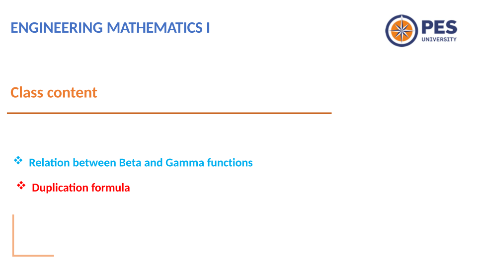
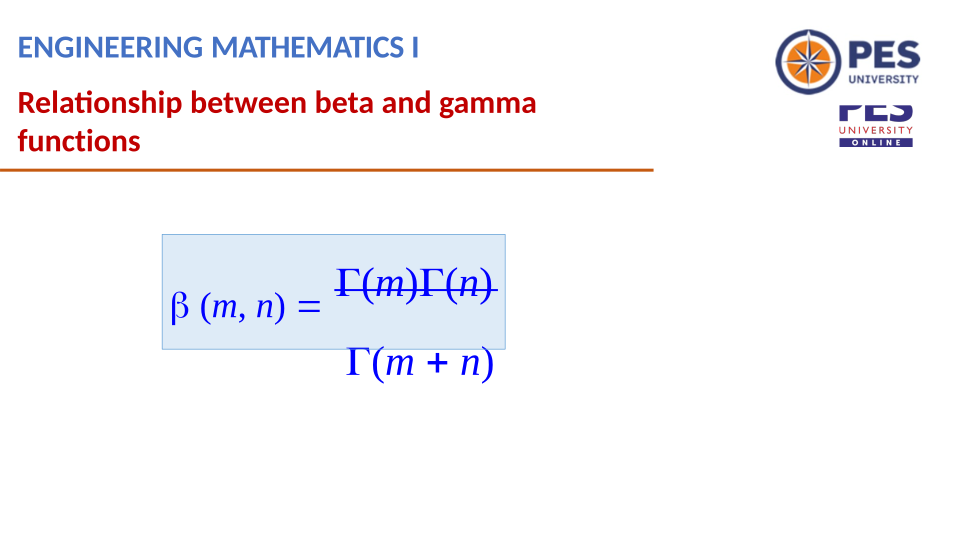
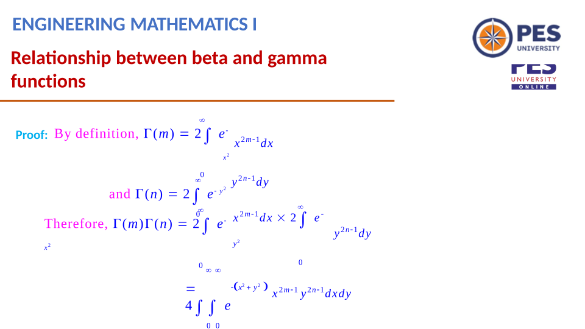
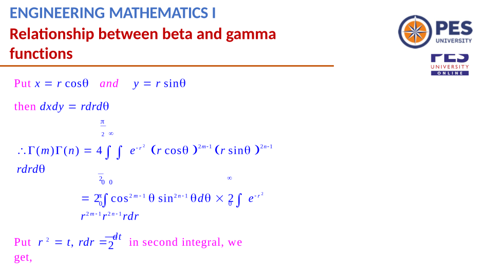
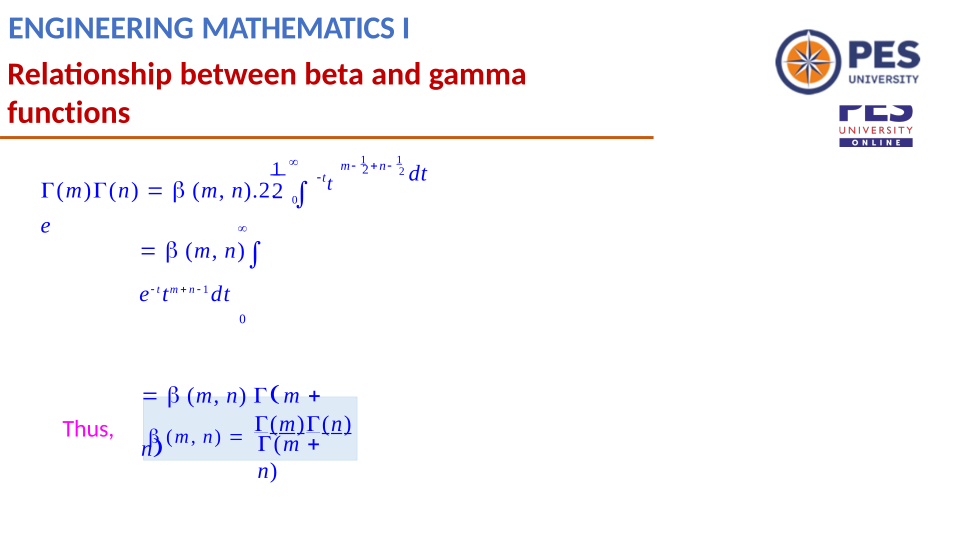
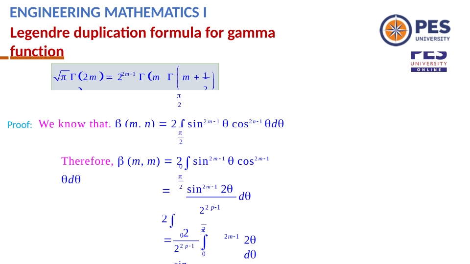
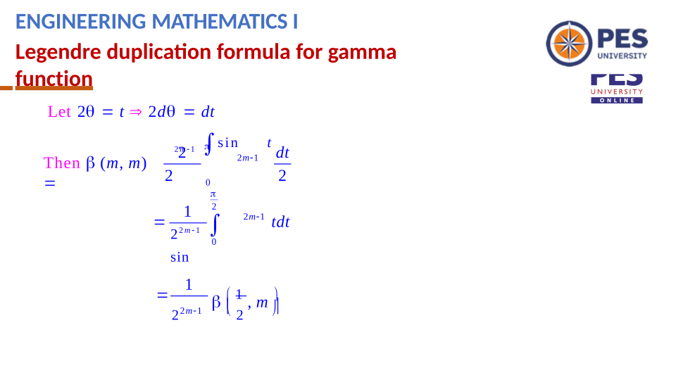
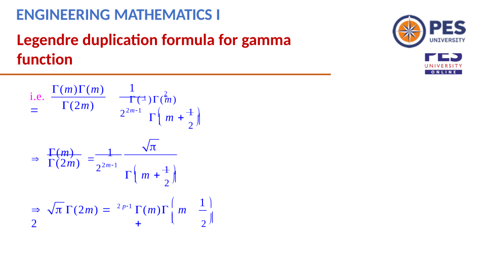
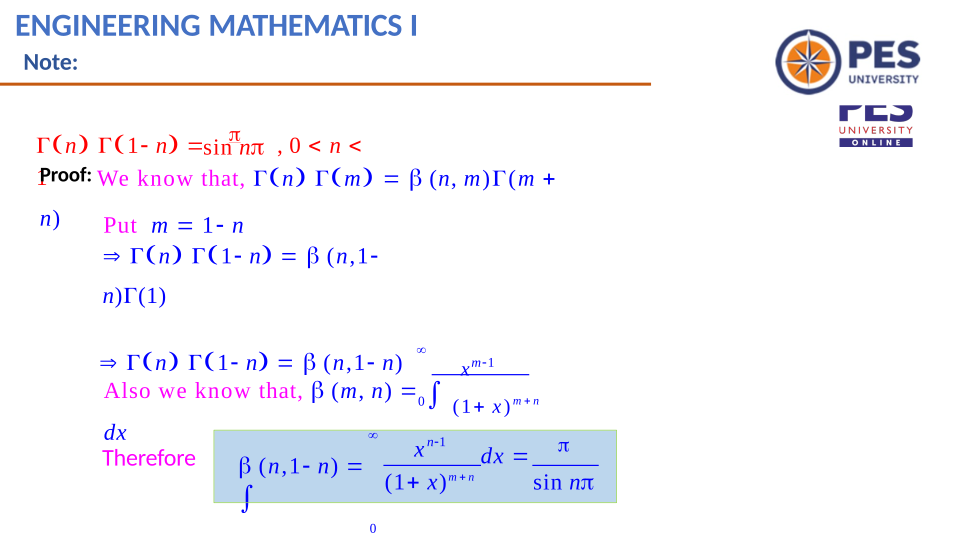

Important points and why
- Source slide page 1 (extracted text): [Image text, OCR] PES UNIVERSITY CELEBRATING5OYEARS ENGINEERING MATHEMATICS - I UE26MA141A Department of Science and Humanities EV0000190 · EV0000191 · EV0000192
- Source slide page 2 (extracted text): ENGINEERING MATHEMATICS I Class content Relation between Beta and Gamma functions Duplication formula EV0000193 · EV0000194 · EV0000195
- Source slide page 3 (extracted text): ENGINEERING MATHEMATICS I Relationship between beta and gamma functions (m, n) (m)(n) (m n) EV0000196 · EV0000197 · EV0000198
- Source slide page 4 (extracted text): ENGINEERING MATHEMATICS I Relationship between beta and gamma functions Proof: By definition, (m) 2 e x2 0 and (n) 2 e y2 0 x2m1dx y2n1dy x2m1dx 2 e y2 0 Therefore, (m)(n) 2 e x2 0 y2n1dy 4 e 0 0 x2 y2 x2m1 y2n1dxdy EV0000199 · EV0000200 · EV0000201
- Source slide page 5 (extracted text): ENGINEERING MATHEMATICS I Relationship between beta and gamma functions Put x r cos and y r sin then dxdy rdrd 2 (m)(n) 4 er2 r cos 2m1 r sin 2n1 rdrd 0 0 2 2cos2m1 sin2n1 d 2 er2 r2m1r2n1rdr 0 0 Put r 2 t, rdr dt in second integral, we get, 2 EV0000202 · EV0000203 · EV0000204
- Source slide page 6 (extracted text): ENGINEERING MATHEMATICS I Relationship between beta and gamma functions 1 (m)(n) (m, n).2. e tt m 1 n 1 2 dt 2 2 0 (m, n) ettmn1dt 0 (m, n) m n (m, n) (m)(n) Thus, (m n) EV0000205 · EV0000206 · EV0000207
- Source slide page 7 (extracted text): ENGINEERING MATHEMATICS I Legendre duplication formula for gamma function 1 2m 2m1 2 m m 2 2 Proof: We know that, (m, n) 2sin2m1 cos2n1 d 0 Therefore, (m, m) 2sin2m1 cos2m1 d 2 0 2 0 2 sin2m1 2 d 22 p1 2 2 22 p1 sin 2 d 2m1 0 EV0000208 · EV0000209 · EV0000210
- Source slide page 8 (extracted text): ENGINEERING MATHEMATICS I Legendre duplication formula for gamma function Let 2 t 2d dt 2 dt 2m1 sin t 2m1 0 Then (m, m) 2 2 2 1 22m1 sin 2m1 tdt 0 1 1 , m 2 22m1 EV0000211 · EV0000212 · EV0000213
- Source slide page 9 (extracted text): ENGINEERING MATHEMATICS I Legendre duplication formula for gamma function (m)(m) 1 ( 1 )(m) 22m1 i.e. 2 (2m) m 1 2 (m) 1 22m1 (2m) m 1 2 1 (2m) 2 2 p1 (m) m 2 EV0000214 · EV0000215 · EV0000216
- Source slide page 10 (extracted text): ENGINEERING MATHEMATICS I Note: n 1 n , 0 n 1 sin n Proof: We know that, n m (n, m)(m n) Put m 1 n n 1 n (n,1 n)(1) n 1 n (n,1 n) xm1 Also we know that, (m, n) (1 x)mn dx 0 (n,1 n) 0 n1 x Therefore dx sin n (1 x)mn EV0000217 · EV0000218 · EV0000219
- Source slide page 11 (extracted text): [Image text, OCR] PES UNIVERSITY CELEBRATING5OYEARS Thank you Department of Science and Humanities EV0000220 · EV0000221 · EV0000222
5Problems on Beta an Gamma functions
This lesson is indexed from the source video titled Problems on Beta an Gamma functions. Its complete timestamped transcript is preserved below in segment order. The original video path and content hash are recorded in datasets/lecture-corpus.json. Transcript text is source wording; it has not been silently corrected or rewritten. A candidate slide deck is grouped here according to the current matching score; the exact path and page locators are listed in the source evidence. EV0000042 · EV0000043
Graphs and diagrams
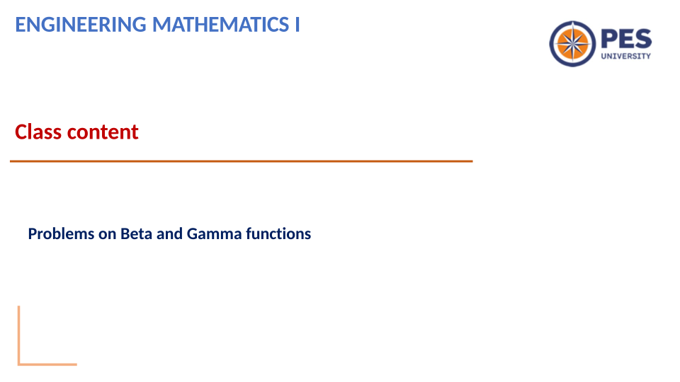
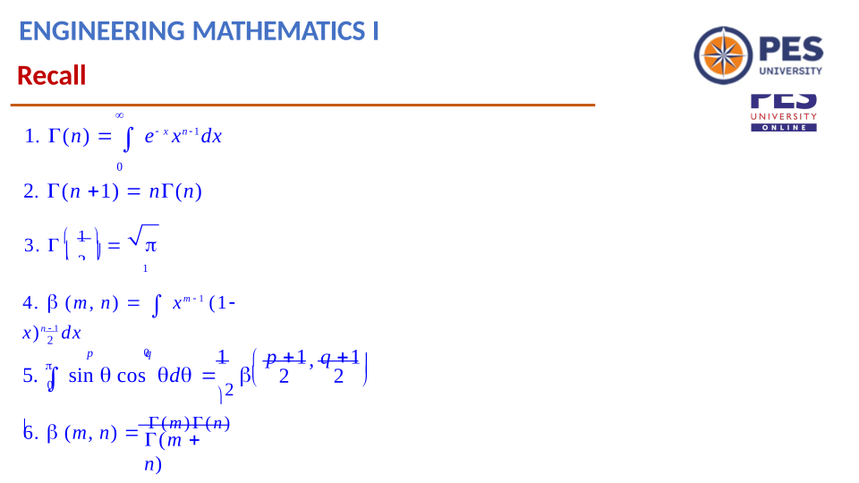
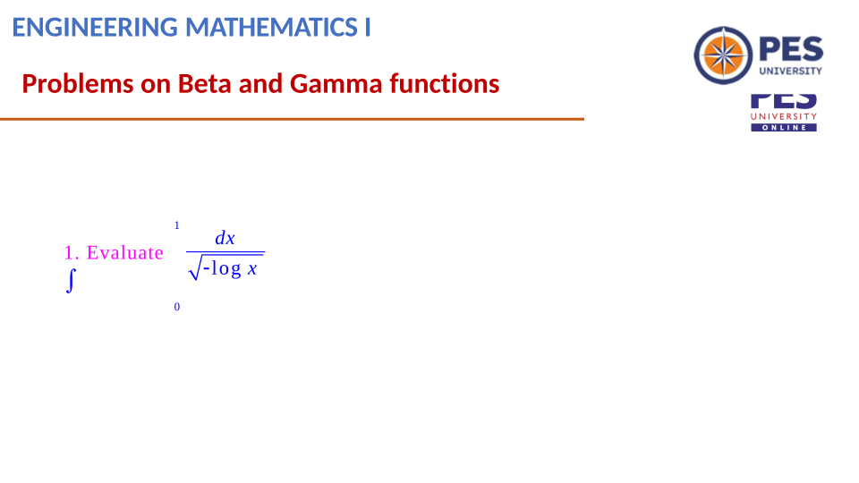
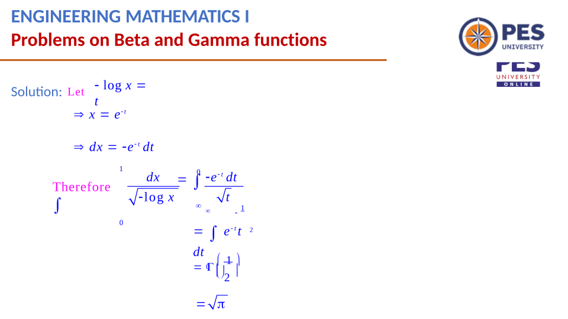
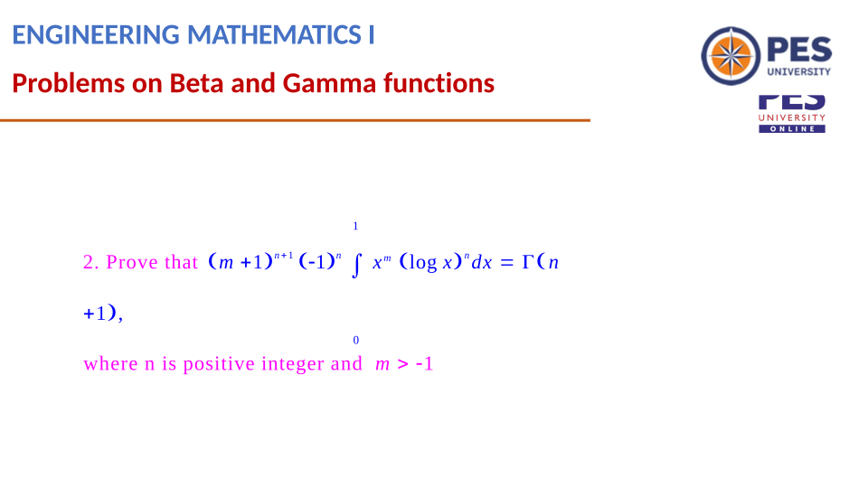
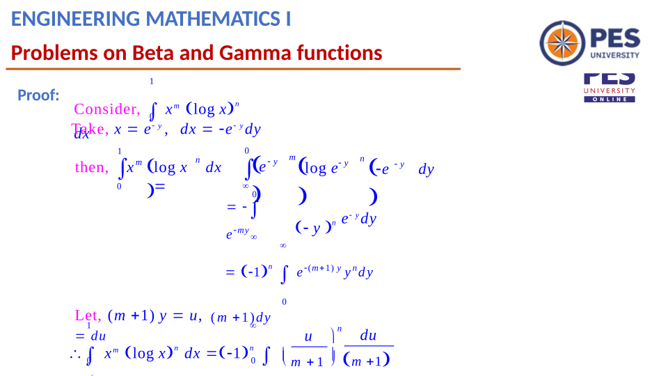
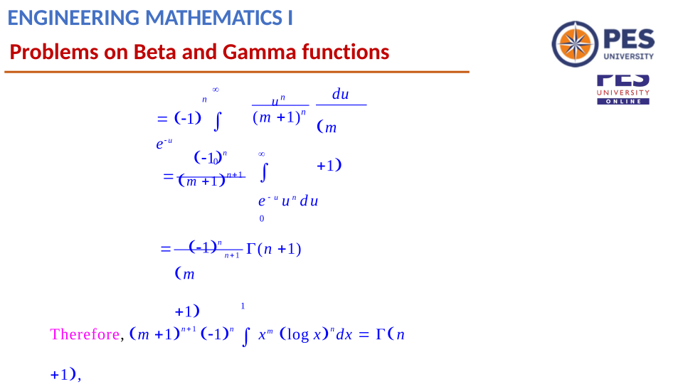
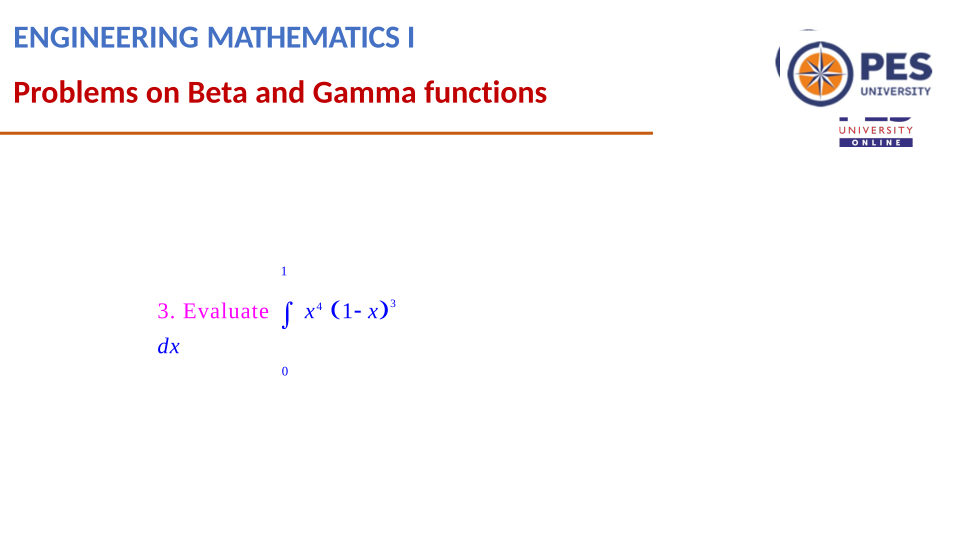
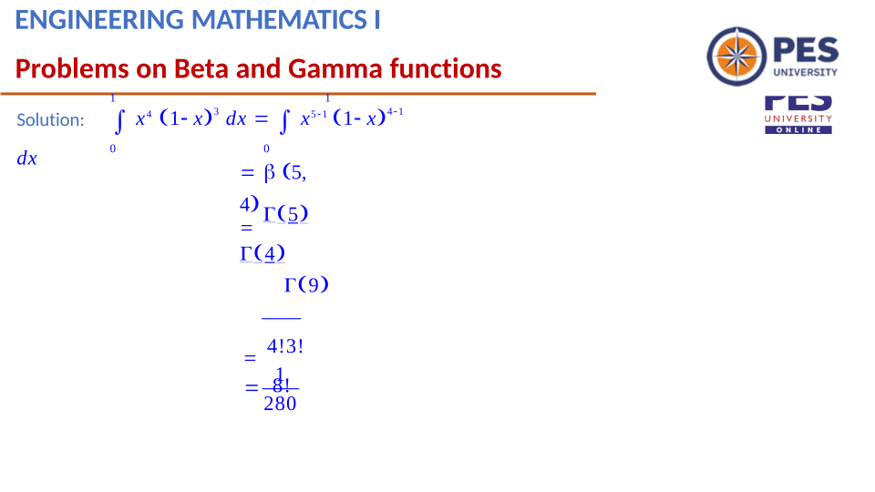
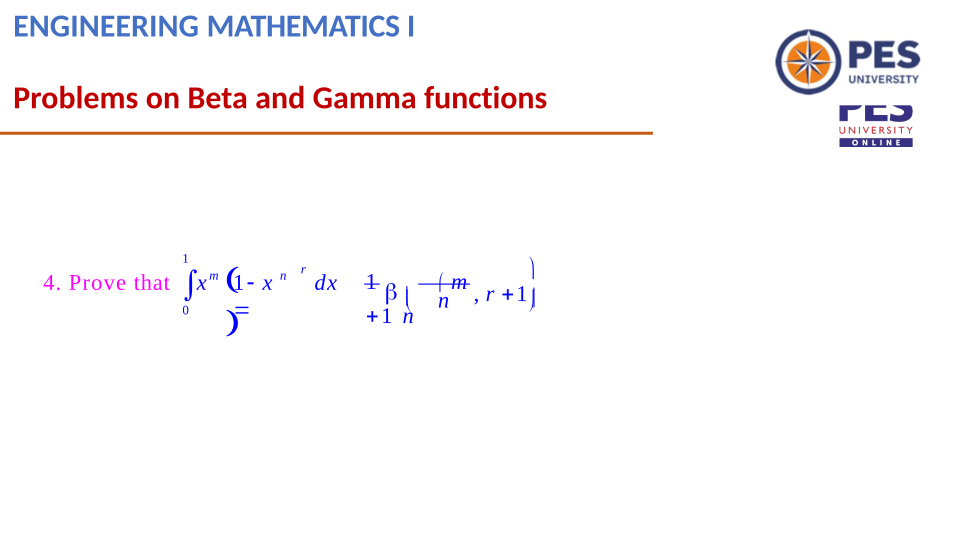
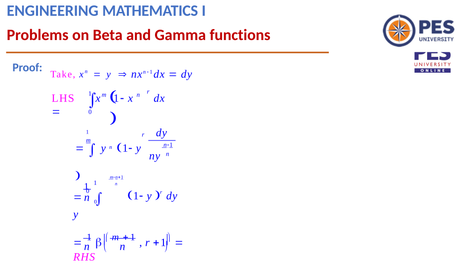
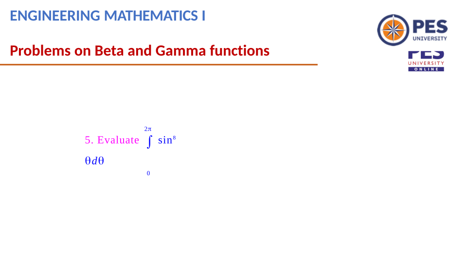
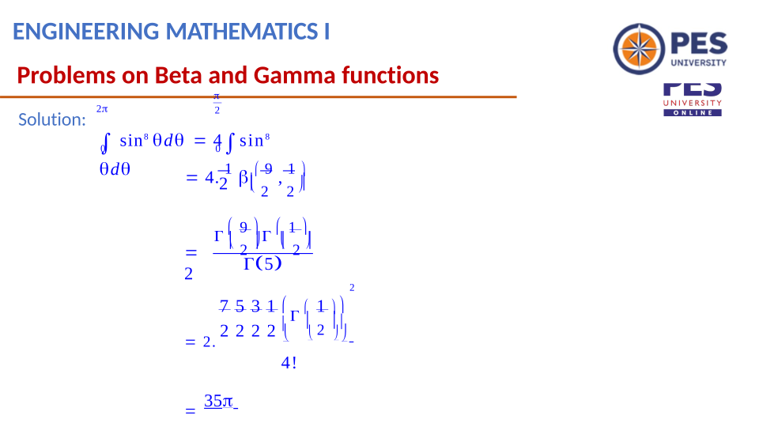
Important points and why
- Source slide page 1 (extracted text): [Image text, OCR] PES UNIVERSITY CELEBRATING5OYEARS ENGINEERING MATHEMATICS - I UE26MA141A Department of Science and Humanities EV0000223 · EV0000224 · EV0000225
- Source slide page 2 (extracted text): ENGINEERING MATHEMATICS I Class content Problems on Beta and Gamma functions EV0000226 · EV0000227 · EV0000228
- Source slide page 3 (extracted text): ENGINEERING MATHEMATICS I Recall (n) e x xn1dx 0 (n 1) n(n) 3. 1 2 4. (m, n) xm1 (1 x)n1dx 0 1 2 1 p 1 q 1 5. sin cos d 2 p q , 2 2 0 6. (m, n) (m)(n) (m n) EV0000229 · EV0000230 · EV0000231
- Source slide page 4 (extracted text): ENGINEERING MATHEMATICS I Problems on Beta and Gamma functions 1 1. Evaluate 0 dx log x EV0000232 · EV0000233 · EV0000234
- Source slide page 5 (extracted text): ENGINEERING MATHEMATICS I Problems on Beta and Gamma functions log x t Solution: Let x et dx et dt 1 Therefore 0 0 dx et dt log x t ett 2 dt 0 1 1 2 EV0000235 · EV0000236 · EV0000237
- Source slide page 6 (extracted text): ENGINEERING MATHEMATICS I Problems on Beta and Gamma functions 2. Prove that m 1n1 1n xm log xndx n 1, 0 where n is positive integer and m 1 1 EV0000238 · EV0000239 · EV0000240
- Source slide page 7 (extracted text): ENGINEERING MATHEMATICS I Problems on Beta and Gamma functions 1 Consider, xm log xn dx Proof: 0 dx e ydy 0 Take, x e y , 1 m n n 0 y e m then, x log x dx y log e y e dy 0 emy y n e ydy 1n e(m1) y yndy 0 Let, (m 1) y u, (m 1)dy du 1 n xm log xn dx 1n eu du u m 1 m 1 0 0 EV0000241 · EV0000242 · EV0000243
- Source slide page 8 (extracted text): ENGINEERING MATHEMATICS I Problems on Beta and Gamma functions un 1 eu 0 du n m 1 n (m 1) 1n m 1n1 euundu 0 1n n1 (n 1) m 1 Therefore, m 1n1 1n xm log xndx n 1, 0 1 EV0000244 · EV0000245 · EV0000246
- Source slide page 9 (extracted text): ENGINEERING MATHEMATICS I Problems on Beta and Gamma functions 3. Evaluate x4 1 x3 dx 0 1 EV0000247 · EV0000248 · EV0000249
- Source slide page 10 (extracted text): ENGINEERING MATHEMATICS I Problems on Beta and Gamma functions 1 1 Solution: x4 1 x3 dx x51 1 x41 dx 0 0 5, 4 5 4 9 4!3! 8! 1 280 EV0000250 · EV0000251 · EV0000252
- Source slide page 11 (extracted text): ENGINEERING MATHEMATICS I Problems on Beta and Gamma functions 1 m 1 n 1 0 r m n 4. Prove that x 1 x dx , r 1 n EV0000253 · EV0000254 · EV0000255
- Source slide page 12 (extracted text): ENGINEERING MATHEMATICS I Problems on Beta and Gamma functions Proof: Take, xn y nxn1dx dy 1 r m n LHS x 1 x dx 0 y n 1 y 0 dy n1 1 m r ny n 1 1 mn1 n y 1 y r dy n 0 1 m 1 , r 1 RHS n n EV0000256 · EV0000257 · EV0000258
- Source slide page 13 (extracted text): ENGINEERING MATHEMATICS I Problems on Beta and Gamma functions 2 5. Evaluate sin8 d 0 EV0000259 · EV0000260 · EV0000261
- Source slide page 14 (extracted text): ENGINEERING MATHEMATICS I Problems on Beta and Gamma functions 2 2 sin8 d 4sin8 d Solution: 0 0 4. 1 9 , 1 2 2 2 9 1 2 2 5 2 2 7 5 3 1 1 2 2 2 2 2 2. 4! 35 2 EV0000262 · EV0000263 · EV0000264
- Source slide page 15 (extracted text): ENGINEERING MATHEMATICS I Problems on Beta and Gamma functions 2 cot d 6. Evaluate 0 EV0000265 · EV0000266 · EV0000267
- Source slide page 16 (extracted text): ENGINEERING MATHEMATICS I Problems on Beta and Gamma functions cot d cot 2 d 0 1 2 2 Solution: 0 1 2 cos 2 d sin 0 sin 2 cos2 d 0 1 1 2 1 1 , 3 4 4 2 EV0000268 · EV0000269 · EV0000270
- Source slide page 17 (extracted text): ENGINEERING MATHEMATICS I Problems on Beta and Gamma functions 1 3 4 4 1 2 1 1 2 sin 4 2 EV0000271 · EV0000272 · EV0000273
- Source slide page 18 (extracted text): ENGINEERING MATHEMATICS I Problems on Beta and Gamma functions dx 7. Evaluate 1 x4 0 EV0000274 · EV0000275 · EV0000276
- Source slide page 19 (extracted text): ENGINEERING MATHEMATICS I Problems on Beta and Gamma functions Solution: 2xdx sec2 d Take x2 tan sec2 d dx 2x sec2 d Therefore, dx 2 tan dx 1 sec2 d 2 Then 1 x4 0 1 tan 2 2 tan 0 1 sec2 d 2 0 sec 2 2 tan EV0000277 · EV0000278 · EV0000279
- Source slide page 20 (extracted text): ENGINEERING MATHEMATICS I Problems on Beta and Gamma functions 2 d 0 2 tan 1 2 1 tan 2 d 2 0 1 1 2 sin 2 d 2 cos 0 1 2 1 1 sin 2 cos2 d 2 0 EV0000280 · EV0000281 · EV0000282
- Source slide page 21 (extracted text): ENGINEERING MATHEMATICS I Problems on Beta and Gamma functions 1 1 1 , 3 4 4 2 2 1 3 4 4 1 4 1 1 4 sin 4 1 4 1 2 2 2 EV0000283 · EV0000284 · EV0000285
- Source slide page 22 (extracted text): [Image text, OCR] PES UNIVERSITY CELEBRATING5OYEARS Thank you Department of Science and Humanities EV0000286 · EV0000287 · EV0000288
6Problems on Beta and Gamma Function_continued
This lesson is indexed from the source video titled Problems on Beta and Gamma Function_continued. Its complete timestamped transcript is preserved below in segment order. The original video path and content hash are recorded in datasets/lecture-corpus.json. Transcript text is source wording; it has not been silently corrected or rewritten. A candidate slide deck is grouped here according to the current matching score; the exact path and page locators are listed in the source evidence. EV0000058 · EV0000059
Graphs and diagrams


Important points and why
- Source slide page 1 (extracted text): [Image text, OCR] PES UNIVERSITY CELEBRATING5OYEARS ENGINEERING MATHEMATICS - I UE26MA141A Department of Science and Humanities EV0000289 · EV0000290 · EV0000291
- Source slide page 2 (extracted text): ENGINEERING MATHEMATICS I UNIT 4: SPECIAL FUNCTIONS AND SERIES SOLUTION OF DE SESSION: 5 SUB-TOPIC: Problems on beta and gamma function Department of Science and Humanities EV0000292 · EV0000293 · EV0000294
- Source slide page 3 (extracted text): ENGINEERING MATHEMATICS - I Beta Functions- extra problems EV0000295 · EV0000296 · EV0000297
- Source slide page 4 (extracted text): ENGINEERING MATHEMATICS - I Beta and Gamma Functions- problems EV0000298 · EV0000299 · EV0000300
- Source slide page 5 (extracted text): ENGINEERING MATHEMATICS - I Beta &Gamma Functions- problems EV0000301 · EV0000302 · EV0000303
- Source slide page 6 (extracted text): [Image text, OCR] PES UNIVERSITY CELEBRATING5OYEARS Thank you Department of Science and Humanities EV0000304 · EV0000305 · EV0000306
7Series solution of Besselâ??s differential equation, Bessel functions
This lesson is indexed from the source video titled Series solution of Besselâ??s differential equation, Bessel functions. Its complete timestamped transcript is preserved below in segment order. The original video path and content hash are recorded in datasets/lecture-corpus.json. Transcript text is source wording; it has not been silently corrected or rewritten. A candidate slide deck is grouped here according to the current matching score; the exact path and page locators are listed in the source evidence. EV0000070 · EV0000071
Graphs and diagrams
Important points and why
- Source slide page 1 (extracted text): [Image text, OCR] PES UNIVERSITY CELEBRATING5OYEARS ENGINEERING MATHEMATICS - I UE26MA141A Department of Science and Humanities EV0000436 · EV0000437 · EV0000438
- Source slide page 2 (extracted text): ENGINEERING MATHEMATICS I UNIT 4: SPECIAL FUNCTIONS AND SERIES SOLUTION OF DE SESSION: 1o SUB-TOPIC: BESSEL FUNCTIONS Department of Science and Humanities EV0000439 · EV0000440 · EV0000441
- Source slide page 3 (extracted text): ENGINEERING MATHEMATICS I Class content Bessel differential equation of order n Series Solution of Bessel’s Differential Equation Bessel Function EV0000442 · EV0000443 · EV0000444
- Source slide page 4 (extracted text): ENGINEERING MATHEMATICS I Bessel Differential Equation The second order linear ordinary differential equation in the form, x2 y xy x2 n2 y 0 (1) is known as Bessel differential equation. Here n is the order of the Bessel differential equation. EV0000445 · EV0000446 · EV0000447
- Source slide page 5 (extracted text): ENGINEERING MATHEMATICS I Series Solution of Bessel Differential Equation r k Let, y a x (2) r r 0 where, k is a positive real number ar ' s are constants and a0 0 Then, dy a r k x r k 1 (3) r dx r 0 d 2 y and ar r k r k 1 x dx2 r k 2 (4) r 0 EV0000448 · EV0000449 · EV0000450
- Source slide page 6 (extracted text): ENGINEERING MATHEMATICS I Series Solution of Bessel Differential Equation Substituting equation (2), (3) and (4) in equation (1) we get, r 0 r 0 2 r k 2 x a r k r k 1 x r k 1 a r k x x r r x2 2 r k n a x 0 r r 0 r 0 r 0 r k a r k x r k a r k r k 1 x r r r 0 a xr k r r k 2 a x n2 0 r r 0 EV0000451 · EV0000452 · EV0000453
- Source slide page 7 (extracted text): ENGINEERING MATHEMATICS I Series Solution of Bessel Differential Equation a xr k r 0 r r k 2 a x 0 r k a r k r k 11 x n2 r r r 0 r 0 2 r 0 2 r k r k 2 r k a x a x 0 k x n a r r r r r 0 r 0 n2 xr k n2 xr k ar x r 0 r k 2 0 2 a r k r r 0 a r 0 a r 2 xr k 2 r k 0 r r 2 EV0000454 · EV0000455 · EV0000456
- Source slide page 8 (extracted text): ENGINEERING MATHEMATICS I Series Solution of Bessel Differential Equation n2 xk 1 2 2 2 k Equating the co-efficients of xk 1 to zero, x a a k n k 1 0 k 1 n2 0 1 2 we get, a 1 2 r k a x 0 2 r k a r k n x r 2 r n2 xk 1 a1 0 r 2 r 2 By equating the higher powers of x to zero, we get, a k n2 xk 2 a k 1 2 1 0 r k n2 a xr k 2 0 a r 2 r ar 2 r k 2 n2 r 2 (5) a r Equating the co-efficients of xk to zero, we get, a0 0 a (k 2 n2 ) 0 k 2 n2 0 0 for r 2, 3, 4, 5........ k n EV0000457 · EV0000458 · EV0000459
- Source slide page 9 (extracted text): ENGINEERING MATHEMATICS I Series Solution of Bessel Differential Equation Let us consider the two cases: case (i) k n : Put k n in equation (5) a r 2 ar r k 2 n2 ar 2 2nr (6) Then we get, a r 2 r Put r 2, 3, 4,........in (6) we get, a0 4n a0 22 n 1 a 22 2 a0 22 n 1 a (7) 2 EV0000460 · EV0000461 · EV0000462
- Source slide page 10 (extracted text): ENGINEERING MATHEMATICS I Series Solution of Bessel Differential Equation a1 6n ar 2 2nr a 0 we have, a a 0 r 2 32 1 r 3 a2 8n a 42 4 a0 a0 1 a 8n 2 2 2 2 (n 1) 2 2 (n 1) a0 32(n 1)(n 2) a (8) 4 EV0000463 · EV0000464 · EV0000465
- Source slide page 11 (extracted text): ENGINEERING MATHEMATICS I Series Solution of Bessel Differential Equation a3 10n a 0 52 5 . . We have, by (2), a xk 1 a xk 2 a xk 3 y a xk a xk 4 .......... 0 1 2 3 4 substituting ar 'sin (2), weget, a0 32(n 1)(n 2) a0 4 n 1 xn2 0 xn3 xn4 .......... n y1 a0 x n1 0 x EV0000466 · EV0000467 · EV0000468
- Source slide page 12 (extracted text): ENGINEERING MATHEMATICS I Series Solution of Bessel Differential Equation n 1 xn2 1 xn4 y a x .......... i.e. 0 4 n 1 1 32(n 1)(n 2) To standardize the result ,let us take, 1 a0 then we get, 2n (n 1) 1 1 4 n 1 1 xn2 xn4 n y x .......... 1 2n (n 1) 32(n 1)(n 2) 1 1 4 n 1 2n (n 1) 1 xn xn2 xn4 ........ 2n (n 1) 32(n 1)(n 2)2n (n 1) EV0000469 · EV0000470 · EV0000471
- Source slide page 13 (extracted text): ENGINEERING MATHEMATICS I Series Solution of Bessel Differential Equation 1 1 xn 1 xn2 xn4 y .... 2n (n 1) 1 1 22 2n (n 2) 2 24 2n (n 3) 1 1 1 xn xn2 xn4 .... 2n (n 1) 2n2 (n 2) 2 2n4 (n 3) x n4 x n2 12 10 11 1 x n .... 2 (n 3) 2 (n 1) 2 (n 2) 2 x n20 x n21 x n22 10 11 12 1 .... 0!(n 1) 2 1!(n 2) 2 2! (n 3) 2 1r x n2r 1 n r 1 r ! (9) r 0 y 2 1 EV0000472 · EV0000473 · EV0000474
- Source slide page 14 (extracted text): ENGINEERING MATHEMATICS I Series Solution of Bessel Differential Equation Equation (9) Is called power series solution of Bessel differential equation. It is called Bessel function of first kind of order n. It is denoted by Jn (x) x n2r 1r r 0 Thus, J (x) n r !(n r 1) 2 EV0000475 · EV0000476 · EV0000477
- Source slide page 15 (extracted text): ENGINEERING MATHEMATICS I Series Solution of Bessel Differential Equation case (ii) k n : Put k n in equation (5) Then we get, 1r x n2r 1 n r 1 r ! r 0 J (x) 2 n EV0000478 · EV0000479 · EV0000480
- Source slide page 16 (extracted text): ENGINEERING MATHEMATICS I Series Solution of Bessel Differential Equation Thus the complete solution of Bessel differential equation is given by C1 and C2 are arbitraryconstants y C1Jn (x) C2 Jn (x) provided n is a non integer. EV0000481 · EV0000482 · EV0000483
- Source slide page 17 (extracted text): [Image text, OCR] PES UNIVERSITY CELEBRATING5OYEARS Thank you Department of Science and Humanities EV0000484 · EV0000485 · EV0000486
8Source slide deck: introduction to Series solution
This entry preserves the complete slide deck titled introduction to Series solution as searchable extracted page text and page-faithful rendered images. Its association with a particular video is not confirmed; it remains a separate topic under Engineering Mathematics - I, Unit_04, to avoid an unsupported match. EV0000307 · EV0000308
Graphs and diagrams


Important points and why
- Source slide page 1 (extracted text): [Image text, OCR] PES UNIVERSITY CELEBRATING5OYEARS ENGINEERING MATHEMATICS - I UE26MA141A Department of Science and Humanities EV0000307 · EV0000308 · EV0000309
- Source slide page 2 (extracted text): ENGINEERING MATHEMATICS I UNIT 4: SPECIAL FUNCTIONS AND SERIES SOLUTION OF DE SESSION: 6 SUB-TOPIC: SERIES SOLUTION Department of Science and Humanities EV0000310 · EV0000311 · EV0000312
- Source slide page 3 (extracted text): ENGINEERING MATHEMATICS - I SERIES SOLUTION [Image text, OCR] Power Series Method Consider a homogeneous linear second order DE with variable co-efficients: d²y dy Po(c) + Pi(c) + P2(c) y = 0 (1) dx2 dc d²y Pi(c) dy P2(c) dx2 Po(c) dr y=0 Po(c) P2(c) Let = Q(x). Po(c) Po(c) Then, d²y dy + P(c) + Q(x)y = 0 (2) dr2 dr Eq. (2) is called the normal form or canonical form or standard form of eq. (1). EV0000313 · EV0000314 · EV0000315
- Source slide page 4 (extracted text): ENGINEERING MATHEMATICS - I SERIES SOLUTION [Image text, OCR] The power series solution of eq. (2) about a point c = co depends on the following definitions: 1. Ordinary point / Regular Point: A point = co is called an ordinary point of eq. (2), if P(c) and Q(c) are both analytic (i.e., differentiable) at To. If Po(c) ≠ O at c = co, then co is an ordinary point. 2. Singular point: A point c = co is called a singular point of eq. (2) if either P(c) or Q(z) or both are not analytic at co. If Po(c) = O at c = co, then co is a singular point. Regular Singular Point: A singular point is called a regular singular point of eq. (2) if (c - co)P(c) and (c - co)²Q(x) both are analytic (or differentiable) at c = Co: lim (c - co)P(c) = finite value C-20 EV0000316 · EV0000317 · EV0000318
- Source slide page 5 (extracted text): ENGINEERING MATHEMATICS - I SERIES SOLUTION [Image text, OCR] Regular Singular Point: A singular point is called a regular singular point of eq. 1. (2) if (x -co)P(α) and (c c)²Q(x) b both n are analytic (or differentiable) at = o: lim ( -o)P() =f finitevalue 2>20 [Image text, OCR] lim ( - co)²Q(x) = finite value Irregular r Singular Point: If either (-o)P(x) or r (c - co)²Q(c) or both I are not analytic at r = o. EV0000319 · EV0000320 · EV0000321
- Source slide page 6 (extracted text): ENGINEERING MATHEMATICS - I SERIES SOLUTION [Image text, OCR] Que 1. Find the singular points and ordinary points of the equation (1 - α²)y" - 6cy' - 4y = 0 Solution. Given eq. is (1 - α²)y" - 6ry' - 4y = 0 (1) Here, Po(x) = 1 - α². At the singular point, Po(c) = 0 ≥ 1 - α² = 0 → α2 = 1 → = ±1 are singular points of eq. (1) Dividing eq. (1) by (1 - r?) on both sides, 6c 4 (2) - x2y = 0 EV0000322 · EV0000323 · EV0000324
- Source slide page 7 (extracted text): ENGINEERING MATHEMATICS - I SERIES SOLUTION [Image text, OCR] Comparing eq. (2) with the standard form i.e., y" + P(x)y' + Q(x)y = 0, ≥ P(x) = 1- r2 -6c 6c 6c c2 -1 (c + 1)(c - 1) -4 4 and Q(α) = 4 1- x2 c2 -1 (c + 1)(x - 1) For r = 1, 6c lim(r - 1) · 6 3 c→→1 (c + 1)(c - 1) 2 lim(r - 1)2 4 4 = (c - 1) (c + 1)(x - 1) (c + 1) →→1 → It is a regular singular point at c = 1. For c = -1, 6c 6(-1) lim (r + 1) · 6 ：3 (c + 1)(r - 1) - -1 - 1 -2 4 lim, (c + 1)² (x + 1)(α - 1) =0 = It is a regular singular point at c = -1. All the values of c ≠ ±l are the ordinary points of the equation. EV0000325 · EV0000326 · EV0000327
- Source slide page 8 (extracted text): ENGINEERING MATHEMATICS - I SERIES SOLUTION [Image text, OCR] Series Solution about an Ordinary Point Let the power series solution of eq. Po(x)y" + Pi(c)y' + P2(x)y = 0 (1) about an ordinary point co be given as 8 > an(z - co)n = ao + a1(x - ro) + a2(c - co)² + ... (2) n=0 The co-efficients a1, @2, a3, .. . are obtained as follows: 1. Let y = 8 ≥ an(r - co)n be the series solution of the given eq. n=0 2. Differentiate y w.r.t. r twice to get y,y',y", then substitute y, y', y" in eq. (1). 3. Shift the summation index to obtain a common power of r in each term. 4. Equate the coefficients of various powers of r to zero to obtain @1, @2, ... in terms of ao· 5. Substitute @1, @2, ... in eq. (2) to obtain the required solution of the given equation. EV0000328 · EV0000329 · EV0000330
- Source slide page 9 (extracted text): ENGINEERING MATHEMATICS - I SERIES SOLUTION [Image text, OCR] Que 1. Find the power series solution of the equation (x² + 1)y" + ry' - ry = 0 about r = 0. Solution. Given eq.: (x² + 1)y" + ry' - ry = 0 (1) Here, Po(x) = 1 + x2. At = 0, Po(0) = 1 ≠ 0 → r = 0 is an ordinary point. Let the series solution of eq. (1) be y= anz"; an·nrn- nancn-1 n=0 n=0 n=1 Also, an n(n - 1)xn-2 n(n - 1)anxn-2 n=0 n=2 EV0000331 · EV0000332 · EV0000333
- Source slide page 10 (extracted text): ENGINEERING MATHEMATICS - I SERIES SOLUTION [Image text, OCR] Substituting y,y' and y" in eq. (1), 8 (x² + 1) ≥n(n - 1)anαn-2 + x na,c C anc^ = 0 n=2 n=1 n=0 ∑n(n - 1)an(xn + xn-2) + nanr' =0 n=2 n=1 n=0 ∑n(n - 1)anxn-2 +n(n - 1)an2" + "nanr" anT n=2 n=2 n=1 n=0 To obtain a common power of c in each term, put n - 2 = m in the 1st term and n +1 = t in the fourth term, (m + 2)(m + 1)am+2αm + n(n - 1)anα"n + ≥ 8 8 nanx" > at-1c = 0 m=0 n=2 n=1 t=1 Since m and t are dummy variables, replacing m and t by n: 8 8 8 8 (n + 2)(n + 1)an+2x" + n(n - 1)anxn + nanr" > an-1c^ = 0 n=0 n=2 n=1 n=1 2a2 + 6a3 + +(n + 1)(n + 2)an+2n +∑n(n - 1)anxn n=2 n=2 ax+nanc- aoc + an-1x" n=2 EV0000334 · EV0000335 · EV0000336
- Source slide page 11 (extracted text): ENGINEERING MATHEMATICS - I SERIES SOLUTION [Image text, OCR] Substituting y,y' and y" in eq. (1), 8 (x² + 1) ≥n(n - 1)anαn-2 + x na,c C anc^ = 0 n=2 n=1 n=0 ∑n(n - 1)an(xn + xn-2) + nanr' =0 n=2 n=1 n=0 ∑n(n - 1)anxn-2 +n(n - 1)an2" + "nanr" anT n=2 n=2 n=1 n=0 To obtain a common power of c in each term, put n - 2 = m in the 1st term and n +1 = t in the fourth term, (m + 2)(m + 1)am+2αm + n(n - 1)anα"n + ≥ 8 8 nanx" > at-1c = 0 m=0 n=2 n=1 t=1 Since m and t are dummy variables, replacing m and t by n: 8 8 8 8 (n + 2)(n + 1)an+2x" + n(n - 1)anxn + nanr" > an-1c^ = 0 n=0 n=2 n=1 n=1 2a2 + 6a3 + +(n + 1)(n + 2)an+2n +∑n(n - 1)anxn n=2 n=2 ax+nanc- aoc + an-1x" n=2 EV0000337 · EV0000338 · EV0000339
- Source slide page 12 (extracted text): ENGINEERING MATHEMATICS - I SERIES SOLUTION [Image text, OCR] → 2a2 + (6a3 + a1 -ao)c + ∑(n + 1)(n + 2)an+2 + n(n - 1)an + nan - an-1 ”=0 n=2 → 2a2 + (6a3 + a1 - ao)c + |(n + 1)(n + 2)an+2 + n²an - an-1 c^ = 0 n=2 Equating the constant term, the coefficients of r and r^ to zero, we get: 2a2 = 0 =→ a2 = 0 Also, 6a3 + a1 - ao = 0 = a3 = (ao - a1) 6 Also, (n + 1)(n + 2)an+2 + n²an - an-1 = 0 (n ≥ 2) an-1 - n²an →αn+2= (n+ 1)(n + 2) EV0000340 · EV0000341 · EV0000342
- Source slide page 13 (extracted text): ENGINEERING MATHEMATICS - I SERIES SOLUTION [Image text, OCR] Put n = 2,3,.. @1 - 4a2 a4= 12 12 a @2 - 9a3 -9a3 -9 3 @5= a (a1 -ao) 20 20 20 6 40 and so on. Since anz" = ao + az + a2x? + .. n=0 3 = ao+a+0·² (ao - a1)x² + ar 6 12 40 2.3 3 3 24 3 ao 6 40 6 12 40 EV0000343 · EV0000344 · EV0000345
- Source slide page 14 (extracted text): [Image text, OCR] PES UNIVERSITY CELEBRATING5OYEARS Thank you Department of Science and Humanities EV0000346 · EV0000347 · EV0000348
9Source slide deck: Power series Continued
This entry preserves the complete slide deck titled Power series Continued as searchable extracted page text and page-faithful rendered images. Its association with a particular video is not confirmed; it remains a separate topic under Engineering Mathematics - I, Unit_04, to avoid an unsupported match. EV0000349 · EV0000350
Graphs and diagrams

Important points and why
- Source slide page 1 (extracted text): [Image text, OCR] PES UNIVERSITY CELEBRATING5OYEARS ENGINEERING MATHEMATICS - I UE26MA141A Department of Science and Humanities EV0000349 · EV0000350 · EV0000351
- Source slide page 2 (extracted text): ENGINEERING MATHEMATICS I UNIT 4: SPECIAL FUNCTIONS AND SERIES SOLUTION OF DE SESSION: 7 SUB-TOPIC: POWER SERIES SOLUTION_continued Department of Science and Humanities EV0000352 · EV0000353 · EV0000354
- Source slide page 3 (extracted text): ENGINEERING MATHEMATICS - I SERIES SOLUTION [Image text, OCR] Find the power series solution about the point co = 2 of the equation y" + (x - 1)y' + y = 0. We solve the differential equation about the ordinary point To = 2: y"+(c -1)y' + y = 0. Step 1: Assume a power series about r = 2 Let y= > an(r - 2)n. n=0 EV0000355 · EV0000356 · EV0000357
- Source slide page 4 (extracted text): ENGINEERING MATHEMATICS - I SERIES SOLUTION [Image text, OCR] Then y=> nan(x - 2)n-1 = (n + 1)an+1(x - 2)n, n=1 n=0 n(n - 1)an(z - 2)n-2 = >(n + 2)(n + 1)an+2(c - 2)n. n=2 n=0 Since -1=(-2)+l, we have (c - 1)y' = (π - 2)y' + y'. Now, (c - 2)y' = ∑nan(x - 2)n = nan(r - 2)n, n=1 n=1 and y' =(n + 1)an+1(x - 2)n. n=0 EV0000358 · EV0000359 · EV0000360
- Source slide page 5 (extracted text): ENGINEERING MATHEMATICS - I SERIES SOLUTION [Image text, OCR] Step 2: Substitute into the differential equation Substituting, (n+ 2)(n + 1)an+2(c - 2)n + > nan(c - 2)n + ≥(n + 1)an+1(x - 2)n + > an(c -2)n = 0. n=0 n=1 n=0 n=0 Step 3:Equate coefficients Constant term (n = 0): 2a2+ a1 + ao = 0, or ao+ a1 @2= 2 EV0000361 · EV0000362 · EV0000363
- Source slide page 6 (extracted text): ENGINEERING MATHEMATICS - I SERIES SOLUTION [Image text, OCR] General term (n ≥ 1): (n + 2)(n + 1)an+2 + (n + 1)an+1 + (n + 1)an = 0. Hence, an+1 + an @n+2=- n≥1. n+2 Step 4: Compute the coefficients Let ao = A, @1 = B. Then A+B @2=- 2 a2+a1 A-B a3 = 3 6 EV0000364 · EV0000365 · EV0000366
- Source slide page 7 (extracted text): ENGINEERING MATHEMATICS - I SERIES SOLUTION [Image text, OCR] a3+a2 A+2B a4=: 4 12 a4+a3 3A+ B a5 = 5 60 a5+a4 A+3B a6= 6 360 and so on. Final Answer (c-2)2 (c - 2)3 (c - 2)4 (x - 2)5 (c - 2)6 y(c) = A 十 十 2 6 12 20 360 (c -2)2 (c - 2)3 (c -2)4 (c - 2)5 (c - 2)6 +B (c-2) 2 6 6 60 120 EV0000367 · EV0000368 · EV0000369
- Source slide page 8 (extracted text): [Image text, OCR] PES UNIVERSITY CELEBRATING5OYEARS Thank you Department of Science and Humanities EV0000370 · EV0000371 · EV0000372
10Source slide deck: Frobenius Method
This entry preserves the complete slide deck titled Frobenius Method as searchable extracted page text and page-faithful rendered images. Its association with a particular video is not confirmed; it remains a separate topic under Engineering Mathematics - I, Unit_04, to avoid an unsupported match. EV0000373 · EV0000374
Graphs and diagrams


Important points and why
- Source slide page 1 (extracted text): [Image text, OCR] PES UNIVERSITY CELEBRATING5OYEARS ENGINEERING MATHEMATICS - I UE26MA141A Department of Science and Humanities EV0000373 · EV0000374 · EV0000375
- Source slide page 2 (extracted text): ENGINEERING MATHEMATICS I UNIT 4: SPECIAL FUNCTIONS AND SERIES SOLUTION OF DE SESSION: 8 SUB-TOPIC: frobenius method Department of Science and Humanities EV0000376 · EV0000377 · EV0000378
- Source slide page 3 (extracted text): ENGINEERING MATHEMATICS - I Series solution [Image text, OCR] Frobenius Method Series solution when c = O is a regular singular point of the equation d²y + Pi(c) dy Po(x) + P2(x)y = 0 (1) dr2 dr 1. Assume the solution of eq. (1) to be y=≥ an rm+n m anzn n=0 n=0 y = rm(ao + ac + a2r² + .. . (2) 2. Differentiate y w.r.t. r twice and substitute y,y',y" in eq. (1). 3. Equate to zero the co-efficient of the lowest degree term in c. It gives a quadratic equation (known as the Indicial Equation). 4. Equating to zero the co-efficients of other powers of r, find the values of a1, @2,... in terms of ao. EV0000379 · EV0000380 · EV0000381
- Source slide page 4 (extracted text): ENGINEERING MATHEMATICS - I Series solution - Problems [Image text, OCR] The complete solution depends on the nature of the roots of the indicial equation. Case I: When roots are distinct and do not differ by an integer, then the complete solution is y = C1(y)m=m + C2(y)m=m2 where m1 and m2 are the roots. Case II: When roots are repeated, then the complete solution is ay y = C1(y)m=m + C2 0m m=m1 where mi is the root. Case III: When roots are distinct and differ by an integer, making a co-efficient of y infinite. Let m1 and m2 be the roots (such that m1 < m2). If some of the co-efficients of the y series become infinite when m = m1, we modify the form of y by replacing ao by bo(m - m1). Then the complete solution is dy y = C1(y)m=m2 + C2 0m m=m1 NOTE: Case II and Case III are not included in our syllabus EV0000382 · EV0000383 · EV0000384
- Source slide page 5 (extracted text): ENGINEERING MATHEMATICS - I Series solution - Problems [Image text, OCR] Que 1. Solve in series the equation d²y dy 9x(1 -c) 12 +4y= 0 dr2 dc Solution. Given eq.: 9c(1 - c)y" - 12y' + 4y = 0 (1) Here, Po(r) = 9c(1 - c). Put r = 0, Po(O) = 0 = = 0 is a singular point. Then solution of eq. (1) be y=∑ n=0 y' = maoαm-1 + (m + 1)a2m + (m + 2)a2xm+1 + ... EV0000385 · EV0000386 · EV0000387
- Source slide page 6 (extracted text): ENGINEERING MATHEMATICS - I Series solution - Problems [Image text, OCR] y" = m(m - 1)aoxm-2 + (m + 1)mazm-1 + (m + 2)(m + 1)a2xm + .. - Substituting y,y',y" in eq. (1), 9z(1 - x)|m(m - 1)aoxm-2 + (m + 1)ma1cm-1 + (m + 2)(m + 1)a2αm -12|maoαm-1 + (m+ 1)a1α"m + (m + 2)a2xm+1 + .. +4 aoxm+a12m+1 + a2xm+2 9m(m - 1)aozm-1 + 9(m + 1)ma1α"m + 9(m + 2)(m + 1)a2xm+1 + .. -9m(m - 1)aoxm - 9(m + 1)ma12m+1 + 9(m + 2)(m + 1)a2xm+2 12maocm-1 - 12(m + 1)acm - 12(m + 2)a2xm+1 +|4aoxm + 4a1cm+1 + 4a2xm+2 + .. = 0 EV0000388 · EV0000389 · EV0000390
- Source slide page 7 (extracted text): ENGINEERING MATHEMATICS - I Series solution - Problems [Image text, OCR] The lowest power of r is m - 1. So equating its coefficient to zero (coefficient of ao): 9m(m - 1)ao - 12mao = 0 → ao [9m² - 9m - 12m] = 0 ≥ ao [9m² - 21m] = 0 ≥ 3m(3m - 7) = 0 ≥ m = 0,3 i.e., roots are distinct but do not differ by an integer. The coefficient of r"m equated to zero: 9m(m + 1)a1 - 9m(m - 1)ao - 12(m + 1)a + 4ao = 0 → a1 [9m² + 9m - 12m - 12] = ao [9m² - 9m - 4] → 3a(3m² - m - 4) = ao [9m² + 3m - 12m - 4 EV0000391 · EV0000392 · EV0000393
- Source slide page 8 (extracted text): ENGINEERING MATHEMATICS - I Series solution - Problems [Image text, OCR] → 3a(3m² + 3m - 4m - 4) = ao [3m(3m + 1) - 4(3m + 1)] > 3a1 [3m(m + 1) - 4(m + 1)] = ao(3m + 1)(3m - 4) → 3a(m + 1)(3m - 4) = ao(3m + 1)(3m - 4) 3m + 1 →a1=3 3(m + 1) ao The coeffcient of rm+1 equated to zero: 9(m + 2)(m + 1)a2 - 9(m + 1)ma1 - 12(m + 2)a2 + 4a = 0 → a2 [9(m + 2)(m + 1) - 12(m + 2)] = a1(9m² + 9m - 4) → (m + 2)a2[9m + 9 - 12] = a1(9m² - 3m + 12m - 4) → (m + 2)a2(9m - 3) = a1 [3m(3m - 1) + 4(3m - 1)] → 3(m + 2)(3m - 1)a2 = a1(3m - 1)(3m + 4) 3m + 4 (3m + 4)(3m + 1) →2= 3 3(m + 2) @1 32(m + 2)(m + 1) ao and so on EV0000394 · EV0000395 · EV0000396
- Source slide page 9 (extracted text): ENGINEERING MATHEMATICS - I Series solution - Problems [Image text, OCR] We have 3m + 1 (3m + 1)(3m + 4) a1= ao and a2= 3(m + 1) 32(m + 2)(m + 1) ao and so on. When m = 0, 1.4 4 1.4 -a0; @2= ao ao ao 3 9.2.1 18 3.6 and so on. . y1 = (y)m=0 = ao + a1x + a2x² + ..· = ao + 1 1.4 --cao+ 3.6 aor 3 1.4 =ao 1+ 3 3.6 EV0000397 · EV0000398 · EV0000399
- Source slide page 10 (extracted text): ENGINEERING MATHEMATICS - I Series solution - Problems [Image text, OCR] When m = 7/3, 3. +1 3 8 a1= ao ao = -ao 3 7(7+3 10 (3·+1)(3·+4) 8.11 a2 = ao ao and so on. 3² (3+ 2) (+ 1) 10·13 y2= (y)m=7/3 = α7/3 ao + a1x + a2x² + 8 8 . 11 8 8.11 = r7/3 ao+ aoc+ aoc aox7/3 1+ -c+ 10 10·13 10 10 ·13 EV0000400 · EV0000401 · EV0000402
- Source slide page 11 (extracted text): ENGINEERING MATHEMATICS - I Series solution - Problems [Image text, OCR] Hence, the complete solution is 1.4 y = C1(y)m + C2(y)m2 =C1a0 1+： -C十 3 3.6 C 8 8 . 11 +C2aox7/3 1+ 2 Ans. 10 10.13 EV0000403 · EV0000404 · EV0000405
- Source slide page 12 (extracted text): [Image text, OCR] PES UNIVERSITY CELEBRATING5OYEARS Thank you Department of Science and Humanities EV0000406 · EV0000407 · EV0000408
11Source slide deck: Frobenius method Continued
This entry preserves the complete slide deck titled Frobenius method Continued as searchable extracted page text and page-faithful rendered images. Its association with a particular video is not confirmed; it remains a separate topic under Engineering Mathematics - I, Unit_04, to avoid an unsupported match. EV0000409 · EV0000410
Graphs and diagrams


Important points and why
- Source slide page 1 (extracted text): [Image text, OCR] PES UNIVERSITY CELEBRATING5OYEARS ENGINEERING MATHEMATICS - I UE26MA141A Department of Science and Humanities EV0000409 · EV0000410 · EV0000411
- Source slide page 2 (extracted text): ENGINEERING MATHEMATICS I UNIT 4: SPECIAL FUNCTIONS AND SERIES SOLUTION OF DE SESSION: 9 SUB-TOPIC: frobenius method_continued Department of Science and Humanities EV0000412 · EV0000413 · EV0000414
- Source slide page 3 (extracted text): ENGINEERING MATHEMATICS - I Series solution - Problems [Image text, OCR] Find the general solution of 8r2y" + 10ry' - (1 + c)y = 0. We solve the differential equation using the Frobenius method about the regular singular point c = 0: 8.r²y" + 10cy' - (1 + c)y = 0. Step 1: Assume a Frobenius series Let M y anzn+r. ao≠ 0. n=0 Then y' =(n+r)anzn+r-1 n=0 y" = (n + r)(n +r - 1)anxn+r-2. n=0 EV0000415 · EV0000416 · EV0000417
- Source slide page 4 (extracted text): ENGINEERING MATHEMATICS - I Series solution - Problems [Image text, OCR] Step 2: Substitute into the differential equation Substituting, 8x²y" + 10y′ -(1 + c)y = 0, gives ∑(n + r)(n + r - 1)anzn+r + 10 (n + r)anzn+r anzn+r n=0 n=0 n=0 n=0 Shift the last summation: an-1c^+r n=1 Hence, [8r(r - 1) + 10r - 1]ao + > (8(n + r)(n + r - 1) + 10(n + r) - 1)an - an-1 = 0. n= EV0000418 · EV0000419 · EV0000420
- Source slide page 5 (extracted text): ENGINEERING MATHEMATICS - I Series solution - Problems [Image text, OCR] Step 3: Indicial equation The coefficient of r" gives 8r(r - 1) + 10r - 1 = 0, 8r2 + 2r -1 = 0. Hence EV0000421 · EV0000422 · EV0000423
- Source slide page 6 (extracted text): ENGINEERING MATHEMATICS - I Series solution - Problems [Image text, OCR] Step 4:Recurrence relation For n ≥ 1, an-1 an 8(n + r)(n + r - 1) + 10(n + r) - 1 First solution (r = 1/4). The denominator simplifies to 8n2 + 6n. Hence an-1 an 2n(4n+3) EV0000424 · EV0000425 · EV0000426
- Source slide page 7 (extracted text): ENGINEERING MATHEMATICS - I Series solution - Problems [Image text, OCR] The first few coefficients are @o ao a0 a1 @2= 616' Q3= 14' 51744 Therefore, 3 y1(c) = x1/4 C 616 51744 Second solution (r = -1/2). The denominator becomes 8n² - 6n = 2n(4n - 3). Thus @n-1 an= 2n(4n - 3) The coefficients are ao ao ao a1 a2 40' @3= 2 1080 Hence y2(c) = z-1/2 T 40 1080 EV0000427 · EV0000428 · EV0000429
- Source slide page 8 (extracted text): ENGINEERING MATHEMATICS - I Series solution - Problems [Image text, OCR] General Solution T 3 y(z) = Cx1/4 1+ 22 14 616 十 51744 1+ T + C2c-1/2 2.2 23 -2 十 40 1080 where Ci and C2 :are arbitrary constants. EV0000430 · EV0000431 · EV0000432
- Source slide page 9 (extracted text): [Image text, OCR] PES UNIVERSITY CELEBRATING5OYEARS Thank you Department of Science and Humanities EV0000433 · EV0000434 · EV0000435
12Source slide deck: Bessel functions of order n and n
This entry preserves the complete slide deck titled Bessel functions of order n and n as searchable extracted page text and page-faithful rendered images. Its association with a particular video is not confirmed; it remains a separate topic under Engineering Mathematics - I, Unit_04, to avoid an unsupported match. EV0000487 · EV0000488
Graphs and diagrams

Important points and why
- Source slide page 1 (extracted text): [Image text, OCR] PES UNIVERSITY CELEBRATING5OYEARS ENGINEERING MATHEMATICS - I UE26MA141A Department of Science and Humanities EV0000487 · EV0000488 · EV0000489
- Source slide page 2 (extracted text): ENGINEERING MATHEMATICS I UNIT 4: SPECIAL FUNCTIONS AND SERIES SOLUTION OF DE SESSION: 11 SUB-TOPIC: BESSEL FUNCTIONS of order n and -n Department of Science and Humanities EV0000490 · EV0000491 · EV0000492
- Source slide page 3 (extracted text): ENGINEERING MATHEMATICS - I Bessel functions of order n and -n Solution: EV0000493 · EV0000494 · EV0000495
- Source slide page 4 (extracted text): ENGINEERING MATHEMATICS - I Bessel functions of order n and -n EV0000496 · EV0000497 · EV0000498
- Source slide page 5 (extracted text): ENGINEERING MATHEMATICS - I Bessel functions of order n and -n EV0000499 · EV0000500 · EV0000501
- Source slide page 6 (extracted text): ENGINEERING MATHEMATICS - I Bessel functions of order n and -n EV0000502 · EV0000503 · EV0000504
- Source slide page 7 (extracted text): [Image text, OCR] PES UNIVERSITY CELEBRATING5OYEARS Thank you Department of Science and Humanities EV0000505 · EV0000506 · EV0000507
13Historical question-source pages · unit mapping candidates
This section preserves historical paper/question-bank pages whose extracted terms matched Engineering Mathematics - I, Unit_04 (Unit 4) above the dataset's candidate threshold. The association has not been manually confirmed, source text/OCR may be incomplete, and the pages are not rewritten or presented as solved questions. EV0000508 · EV0000509
Important points and why
- Archive page 2 from Series Solution of Bessel__1GK7DgclHD.pdf; unit match candidate score 0.5833; source text/OCR may be partial. Class content Series Solution of Bessel’s Differential Equation ENGINEERING MATHEMATICS I Bessel differential equation of order n Bessel Function EV0000508
- Archive page 4 from Series Solution of Bessel__1GK7DgclHD.pdf; unit match candidate score 0.4167; source text/OCR may be partial. Series Solution of Bessel Differential Equation 0 t, ) e 2 L ( r k r r y a x + = = −−−−− 0 where, is a positive real number ' are constants and k 0 ra a s ( )( ) 2 2 2 0 1 (4 an ) d r k r r d y a r k r k x dx + − = = + + − −−−−− ( ) 1 0 T en, (3 h ) r k r r dy a r k x dx + − = = + −−−−− ENGINEERING MATHEMATICS I EV0000509
- Archive page 5 from Series Solution of Bessel__1GK7DgclHD.pdf; unit match candidate score 0.4167; source text/OCR may be partial. Series Solution of Bessel Differential Equation Substituting equation and in equati (2), ( 3) (4) (1) on we get, ( )( ) 2 2 0 1 r k r r x a r k r k x + − = + + − + ( ) 1 0 r k r r x a r k x + − = + + ( ) 2 2 0 r k r r x n a x + = − ( )( ) 0 1 r k r r a r k r k x + = + + − + ( ) 0 r k r r a r k x + = + + 2 0 r k r r a x + + = ENGINEERING MATHEMATICS I 0 = 2 0 r k r r n a x + = − 0 = EV0000510
- Archive page 6 from Series Solution of Bessel__1GK7DgclHD.pdf; unit match candidate score 0.4167; source text/OCR may be partial. Series Solution of Bessel Differential Equation ( ) 0 1 1 r k r r a r k r k x + = + + −+ + 2 0 0 r k r r a x + + = = ENGINEERING MATHEMATICS I 2 0 r k r r n a x + = − ( ) 2 0 r k r r a r k x + = + 2 0 r k r r n a x + = − + 2 0 0 r k r r a x + + = = ( ) 2 2 0 r k r r a r k n x + = + − + 2 0 0 r k r r a x + + = = ( ) 2 2 0 r k r r a r k n x + = + − + 2 2 0 r k r r a x + − = = EV0000511
- Archive page 7 from Series Solution of Bessel__1GK7DgclHD.pdf; unit match candidate score 0.4167; source text/OCR may be partial. Series Solution of Bessel Differential Equation ENGINEERING MATHEMATICS I 2 2 0 k a k n x − + ( ) 2 2 1 1 1 k a k n x + + − ( ) 2 2 2 r k r r a r k n x + = + − + + 2 2 0 r k r r a x + − = = 2 2 0 k a k n x − + ( ) 2 2 1 1 1 k a k n x + + − ( ) 2 2 2 2 r k r r r a r k n a x + − = + − + + 0 = Equating the co-efficients of to zero, we , get kx 2 2 0( ) 0 a k n − = 2 2 0 k n − = ( ) 0 0 a k n = 1 Equating the co-efficient s of to zero, kx + we get, ( ) ( ) 2 2 1 1 0 a k n + − = By equating the higher x powers of to zero, we get, ( ) 2 2 2 r r a a r k n − = − + − 1 0 a = (5) −−−−−−−− for 2,3,4,5........ r = EV0000512
- Archive page 8 from Series Solution of Bessel__1GK7DgclHD.pdf; unit match candidate score 0.4167; source text/OCR may be partial. Series Solution of Bessel Differential Equation ENGINEERING MATHEMATICS I Let us consider the two cases: case ( ) : i k n = Put in equation 5 ( ) k n = Then we get, ( ) 2 2 2 r r a a r k n − = − + − (6) −−−−−−− 2,3,4,...... Put in (6) we . , . get r = 0 2 2 2 4 a a n = − + (7) −−−−−−−− ( ) 0 2 2 1 a n = − + ( ) 0 2 2 1 a n = − + 2 a 2 2 2 r r a a r nr − = − + EV0000513
- Archive page 9 from Series Solution of Bessel__1GK7DgclHD.pdf; unit match candidate score 0.4167; source text/OCR may be partial. Series Solution of Bessel Differential Equation ENGINEERING MATHEMATICS I 2 4 2 4 8 a a n = − + 1 3 2 3 6 a a n = − + 0 = ( ) 1 0 a = 2 2 we have 2 , r r a a r nr − = − + 0 4 32( 1)( 2) a a n n = + + ( ) 0 2 1 8 2 2 ( 1) a n n = − − + + (8) −−−−−−−− 0 2 2 2 ( 1) a a n = − + EV0000514
- Archive page 10 from Series Solution of Bessel__1GK7DgclHD.pdf; unit match candidate score 0.4167; source text/OCR may be partial. Series Solution of Bessel Differential Equation 3 5 2 5 10 a a n = − + ENGINEERING MATHEMATICS I 0 = . . . ' substituting s (2), in weget, ra 1 2 3 4 0 1 2 3 4 .......... k k k k k y a x a x a x a x a x + + + + = + + + + We have, by (2), 1 0 n y a x = 3 0 n x + + 1 0 n x + + ( ) 2 0 4 1 n a x n + − + 4 0 32( 1)( 2) n a x n n + + + + .......... + EV0000515
- Archive page 11 from Series Solution of Bessel__1GK7DgclHD.pdf; unit match candidate score 0.4167; source text/OCR may be partial. Series Solution of Bessel Differential Equation ENGINEERING MATHEMATICS I i.e. ( ) 2 4 1 0 1 1 .......... 4 1 32( 1)( 2) n n n y a x x x n n n + + = − + + + + + To standardize the result ,let us take, 0 1 2 ( 1) n a n = + then we get , ( ) 2 4 1 1 1 1 .......... 2 ( 1) 4 1 32( 1)( 2) n n n n y x x x n n n n + + = − + + + + + + ( ) 2 4 1 1 1 ........ 2 ( 1) 4 1 2 ( 1) 32( 1)( 2)2 ( 1) n n n n n n x x x n n n n n n + + = − + + + + + + + + EV0000516
- Archive page 12 from Series Solution of Bessel__1GK7DgclHD.pdf; unit match candidate score 0.4167; source text/OCR may be partial. Series Solution of Bessel Differential Equation ( ) ( ) 2 1 0 1 1 2 1 ! n r r r x y n r r + = = − + + 1 1 2 ( 1) n n y x n = + ENGINEERING MATHEMATICS I 2 4 2 4 1 1 1 1 .... 2 ( 1) 2 ( 2) 2 2 ( 3) n n n n n n x x x n n n + + + + = − + + + + + ( ) 0 1 ( 1) 2 n x n − = + ( ) 0 2 0 1 0! ( 1) 2 n x n + − = + (9) −−−−−− 2 2 1 2 2 ( 2) n n x n + − + 4 4 1 2 2 2 ( 3) n n x n + + + .... + ( ) 1 2 1 ( 2) 2 n x n + − + + ( ) 2 4 1 1 2 ( 3) 2 n x n + − + + .... + ( ) 1 2 1 1 1! ( 2) 2 n x n + − + + ( ) 2 2 2 1 1 2! ( 3) 2 n x n + − + + .... + EV0000517
- Archive page 13 from Series Solution of Bessel__1GK7DgclHD.pdf; unit match candidate score 0.6667; source text/OCR may be partial. Series Solution of Bessel Differential Equation Thus, It is called Bessel function of first kind of order n. Equation (9) Is called power series solution of Bessel differential equation. It is denoted by ( ) n J x ( ) 2 0 1 ( ) ! ( 1) 2 r n r n r x J x r n r + = − = + + ENGINEERING MATHEMATICS I EV0000518
- Archive page 14 from Series Solution of Bessel__1GK7DgclHD.pdf; unit match candidate score 0.4167; source text/OCR may be partial. Series Solution of Bessel Differential Equation case ( ) : ii k n = − Put in equatio n (5) k n = − ( ) ( ) 2 0 1 ( ! ) 1 2 1 n r r n r x J x n r r −+ − = = − −+ + Then we get, ENGINEERING MATHEMATICS I EV0000519
- Archive page 15 from Series Solution of Bessel__1GK7DgclHD.pdf; unit match candidate score 0.4167; source text/OCR may be partial. Thus the complete solution of Bessel differential equation is given by 1 2 ( ) ( ) n n y C J x C J x − = + provided n is a non integer. ENGINEERING MATHEMATICS I Series Solution of Bessel Differential Equation ( ) 1 2 and are arbitraryconstants C C EV0000520
ASymbol glossary
| Symbol | Name | Meaning | Appears in |
|---|
BSources, coverage and gaps
| Source | Path | Use |
|---|---|---|
| Official unit catalogue | https://huggingface.co/buckets/alvin3y10/data/tree/pesuc/PESU_Materials/units.json | Official course/unit title and index. |
| Gamma functions - definition, graph and properties transcript (JSON) | https://huggingface.co/buckets/alvin3y10/data/tree/pesuc/PESU_Materials/Sem-1/UE26MA141A_Engineering_Mathematics_-_I/Unit_04/AV_Summaries/001_Gamma_functions_-_definition_graph_and_properties__c183e86bfc3ac0a2.transcript.json | Full JSON sidecar. Normalized text similarity to canonical JSON: 1.0000; only the JSON segmentation supplies the displayed timestamps. |
| Gamma functions - definition, graph and properties transcript (Markdown) | https://huggingface.co/buckets/alvin3y10/data/tree/pesuc/PESU_Materials/Sem-1/UE26MA141A_Engineering_Mathematics_-_I/Unit_04/AV_Summaries/001_Gamma_functions_-_definition_graph_and_properties__c183e86bfc3ac0a2.transcript.md | Full Markdown sidecar. Normalized text similarity to canonical JSON: 1.0000; only the JSON segmentation supplies the displayed timestamps. |
| Gamma functions - definition, graph and properties transcript (plain text) | https://huggingface.co/buckets/alvin3y10/data/tree/pesuc/PESU_Materials/Sem-1/UE26MA141A_Engineering_Mathematics_-_I/Unit_04/AV_Summaries/001_Gamma_functions_-_definition_graph_and_properties__c183e86bfc3ac0a2.transcript.txt | Full plain text sidecar. Normalized text similarity to canonical JSON: 0.9982; only the JSON segmentation supplies the displayed timestamps. |
| Gamma functions - definition, graph and properties transcript (SRT) | https://huggingface.co/buckets/alvin3y10/data/tree/pesuc/PESU_Materials/Sem-1/UE26MA141A_Engineering_Mathematics_-_I/Unit_04/AV_Summaries/001_Gamma_functions_-_definition_graph_and_properties__c183e86bfc3ac0a2.srt | Full SRT sidecar. Normalized text similarity to canonical JSON: 1.0000; only the JSON segmentation supplies the displayed timestamps. |
| Definition of Beta function and its properties transcript (JSON) | https://huggingface.co/buckets/alvin3y10/data/tree/pesuc/PESU_Materials/Sem-1/UE26MA141A_Engineering_Mathematics_-_I/Unit_04/AV_Summaries/002_Definition_of_Beta_function_and_its_properties__c1ec05b61754baa1.transcript.json | Full JSON sidecar. Normalized text similarity to canonical JSON: 1.0000; only the JSON segmentation supplies the displayed timestamps. |
| Definition of Beta function and its properties transcript (Markdown) | https://huggingface.co/buckets/alvin3y10/data/tree/pesuc/PESU_Materials/Sem-1/UE26MA141A_Engineering_Mathematics_-_I/Unit_04/AV_Summaries/002_Definition_of_Beta_function_and_its_properties__c1ec05b61754baa1.transcript.md | Full Markdown sidecar. Normalized text similarity to canonical JSON: 1.0000; only the JSON segmentation supplies the displayed timestamps. |
| Definition of Beta function and its properties transcript (plain text) | https://huggingface.co/buckets/alvin3y10/data/tree/pesuc/PESU_Materials/Sem-1/UE26MA141A_Engineering_Mathematics_-_I/Unit_04/AV_Summaries/002_Definition_of_Beta_function_and_its_properties__c1ec05b61754baa1.transcript.txt | Full plain text sidecar. Normalized text similarity to canonical JSON: 0.9985; only the JSON segmentation supplies the displayed timestamps. |
| Definition of Beta function and its properties transcript (SRT) | https://huggingface.co/buckets/alvin3y10/data/tree/pesuc/PESU_Materials/Sem-1/UE26MA141A_Engineering_Mathematics_-_I/Unit_04/AV_Summaries/002_Definition_of_Beta_function_and_its_properties__c1ec05b61754baa1.srt | Full SRT sidecar. Normalized text similarity to canonical JSON: 1.0000; only the JSON segmentation supplies the displayed timestamps. |
| Relation between Beta and Gamma functions, Duplication formula transcript (JSON) | https://huggingface.co/buckets/alvin3y10/data/tree/pesuc/PESU_Materials/Sem-1/UE26MA141A_Engineering_Mathematics_-_I/Unit_04/AV_Summaries/003_Relation_between_Beta_and_Gamma_functions_Duplication_formula__982d3dde7e270fc7.transcript.json | Full JSON sidecar. Normalized text similarity to canonical JSON: 1.0000; only the JSON segmentation supplies the displayed timestamps. |
| Relation between Beta and Gamma functions, Duplication formula transcript (Markdown) | https://huggingface.co/buckets/alvin3y10/data/tree/pesuc/PESU_Materials/Sem-1/UE26MA141A_Engineering_Mathematics_-_I/Unit_04/AV_Summaries/003_Relation_between_Beta_and_Gamma_functions_Duplication_formula__982d3dde7e270fc7.transcript.md | Full Markdown sidecar. Normalized text similarity to canonical JSON: 1.0000; only the JSON segmentation supplies the displayed timestamps. |
| Relation between Beta and Gamma functions, Duplication formula transcript (plain text) | https://huggingface.co/buckets/alvin3y10/data/tree/pesuc/PESU_Materials/Sem-1/UE26MA141A_Engineering_Mathematics_-_I/Unit_04/AV_Summaries/003_Relation_between_Beta_and_Gamma_functions_Duplication_formula__982d3dde7e270fc7.transcript.txt | Full plain text sidecar. Normalized text similarity to canonical JSON: 0.9980; only the JSON segmentation supplies the displayed timestamps. |
| Relation between Beta and Gamma functions, Duplication formula transcript (SRT) | https://huggingface.co/buckets/alvin3y10/data/tree/pesuc/PESU_Materials/Sem-1/UE26MA141A_Engineering_Mathematics_-_I/Unit_04/AV_Summaries/003_Relation_between_Beta_and_Gamma_functions_Duplication_formula__982d3dde7e270fc7.srt | Full SRT sidecar. Normalized text similarity to canonical JSON: 1.0000; only the JSON segmentation supplies the displayed timestamps. |
| Problems on Beta an Gamma functions transcript (JSON) | https://huggingface.co/buckets/alvin3y10/data/tree/pesuc/PESU_Materials/Sem-1/UE26MA141A_Engineering_Mathematics_-_I/Unit_04/AV_Summaries/004_Problems_on_Beta_an_Gamma_functions__ccd478a3bed2d97a.transcript.json | Full JSON sidecar. Normalized text similarity to canonical JSON: 1.0000; only the JSON segmentation supplies the displayed timestamps. |
| Problems on Beta an Gamma functions transcript (Markdown) | https://huggingface.co/buckets/alvin3y10/data/tree/pesuc/PESU_Materials/Sem-1/UE26MA141A_Engineering_Mathematics_-_I/Unit_04/AV_Summaries/004_Problems_on_Beta_an_Gamma_functions__ccd478a3bed2d97a.transcript.md | Full Markdown sidecar. Normalized text similarity to canonical JSON: 1.0000; only the JSON segmentation supplies the displayed timestamps. |
| Problems on Beta an Gamma functions transcript (plain text) | https://huggingface.co/buckets/alvin3y10/data/tree/pesuc/PESU_Materials/Sem-1/UE26MA141A_Engineering_Mathematics_-_I/Unit_04/AV_Summaries/004_Problems_on_Beta_an_Gamma_functions__ccd478a3bed2d97a.transcript.txt | Full plain text sidecar. Normalized text similarity to canonical JSON: 0.9987; only the JSON segmentation supplies the displayed timestamps. |
| Problems on Beta an Gamma functions transcript (SRT) | https://huggingface.co/buckets/alvin3y10/data/tree/pesuc/PESU_Materials/Sem-1/UE26MA141A_Engineering_Mathematics_-_I/Unit_04/AV_Summaries/004_Problems_on_Beta_an_Gamma_functions__ccd478a3bed2d97a.srt | Full SRT sidecar. Normalized text similarity to canonical JSON: 1.0000; only the JSON segmentation supplies the displayed timestamps. |
| Problems on Beta and Gamma Function_continued transcript (JSON) | https://huggingface.co/buckets/alvin3y10/data/tree/pesuc/PESU_Materials/Sem-1/UE26MA141A_Engineering_Mathematics_-_I/Unit_04/AV_Summaries/005_Problems_on_Beta_and_Gamma_Function_continued__5f7e0c86ddf2398a.transcript.json | Full JSON sidecar. Normalized text similarity to canonical JSON: 1.0000; only the JSON segmentation supplies the displayed timestamps. |
| Problems on Beta and Gamma Function_continued transcript (Markdown) | https://huggingface.co/buckets/alvin3y10/data/tree/pesuc/PESU_Materials/Sem-1/UE26MA141A_Engineering_Mathematics_-_I/Unit_04/AV_Summaries/005_Problems_on_Beta_and_Gamma_Function_continued__5f7e0c86ddf2398a.transcript.md | Full Markdown sidecar. Normalized text similarity to canonical JSON: 1.0000; only the JSON segmentation supplies the displayed timestamps. |
| Problems on Beta and Gamma Function_continued transcript (plain text) | https://huggingface.co/buckets/alvin3y10/data/tree/pesuc/PESU_Materials/Sem-1/UE26MA141A_Engineering_Mathematics_-_I/Unit_04/AV_Summaries/005_Problems_on_Beta_and_Gamma_Function_continued__5f7e0c86ddf2398a.transcript.txt | Full plain text sidecar. Normalized text similarity to canonical JSON: 0.9982; only the JSON segmentation supplies the displayed timestamps. |
| Problems on Beta and Gamma Function_continued transcript (SRT) | https://huggingface.co/buckets/alvin3y10/data/tree/pesuc/PESU_Materials/Sem-1/UE26MA141A_Engineering_Mathematics_-_I/Unit_04/AV_Summaries/005_Problems_on_Beta_and_Gamma_Function_continued__5f7e0c86ddf2398a.srt | Full SRT sidecar. Normalized text similarity to canonical JSON: 1.0000; only the JSON segmentation supplies the displayed timestamps. |
| Series solution of Besselâ??s differential equation, Bessel functions transcript (JSON) | https://huggingface.co/buckets/alvin3y10/data/tree/pesuc/PESU_Materials/Sem-1/UE26MA141A_Engineering_Mathematics_-_I/Unit_04/AV_Summaries/010_Series_solution_of_Besselâ_s_differential_equation_Bessel_functions__0b6c9f8e6bffd10d.transcript.json | Full JSON sidecar. Normalized text similarity to canonical JSON: 1.0000; only the JSON segmentation supplies the displayed timestamps. |
| Series solution of Besselâ??s differential equation, Bessel functions transcript (Markdown) | https://huggingface.co/buckets/alvin3y10/data/tree/pesuc/PESU_Materials/Sem-1/UE26MA141A_Engineering_Mathematics_-_I/Unit_04/AV_Summaries/010_Series_solution_of_Besselâ_s_differential_equation_Bessel_functions__0b6c9f8e6bffd10d.transcript.md | Full Markdown sidecar. Normalized text similarity to canonical JSON: 1.0000; only the JSON segmentation supplies the displayed timestamps. |
| Series solution of Besselâ??s differential equation, Bessel functions transcript (plain text) | https://huggingface.co/buckets/alvin3y10/data/tree/pesuc/PESU_Materials/Sem-1/UE26MA141A_Engineering_Mathematics_-_I/Unit_04/AV_Summaries/010_Series_solution_of_Besselâ_s_differential_equation_Bessel_functions__0b6c9f8e6bffd10d.transcript.txt | Full plain text sidecar. Normalized text similarity to canonical JSON: 0.9989; only the JSON segmentation supplies the displayed timestamps. |
| Series solution of Besselâ??s differential equation, Bessel functions transcript (SRT) | https://huggingface.co/buckets/alvin3y10/data/tree/pesuc/PESU_Materials/Sem-1/UE26MA141A_Engineering_Mathematics_-_I/Unit_04/AV_Summaries/010_Series_solution_of_Besselâ_s_differential_equation_Bessel_functions__0b6c9f8e6bffd10d.srt | Full SRT sidecar. Normalized text similarity to canonical JSON: 1.0000; only the JSON segmentation supplies the displayed timestamps. |
| Slide page text: Gamma Function | https://huggingface.co/buckets/alvin3y10/data/tree/pesuc/PESU_Materials/Sem-1/UE26MA141A_Engineering_Mathematics_-_I/Unit_04/Slides/001_Gamma_Function__00935a1aa845f4cb.slides.md | Complete extracted page text from the bucket's .slides.md sidecar. |
| Alternate extracted slide page text: Gamma Function | https://huggingface.co/buckets/alvin3y10/data/tree/pesuc/PESU_Materials/Sem-1/UE26MA141A_Engineering_Mathematics_-_I/Unit_04/Slides/001_Gamma_Function__00935a1aa845f4cb.slides.txt | The bucket's alternate .slides.txt text sidecar; content differences are kept as separate page points. |
| Page-render source for Gamma Function (converted PDF; original hash fb0f3bbeb4bc9e91a815c62874ef14de7f58b751a004ad6c54b652bccfab9429) | https://huggingface.co/buckets/alvin3y10/data/tree/pesuc/PESU_Materials/Sem-1/UE26MA141A_Engineering_Mathematics_-_I/Unit_04/Slides/001_Gamma_Function__00935a1aa845f4cb.pptx | Page inventory and visual source for the rendered original deck; figure pages are derived from this local PDF. The original bucket path/hash are retained in datasets/content-index.json. |
| Slide page text: Beta Function | https://huggingface.co/buckets/alvin3y10/data/tree/pesuc/PESU_Materials/Sem-1/UE26MA141A_Engineering_Mathematics_-_I/Unit_04/Slides/002_Beta_Function__a7f5e3feeb91e390.slides.md | Complete extracted page text from the bucket's .slides.md sidecar. |
| Alternate extracted slide page text: Beta Function | https://huggingface.co/buckets/alvin3y10/data/tree/pesuc/PESU_Materials/Sem-1/UE26MA141A_Engineering_Mathematics_-_I/Unit_04/Slides/002_Beta_Function__a7f5e3feeb91e390.slides.txt | The bucket's alternate .slides.txt text sidecar; content differences are kept as separate page points. |
| Page-render source for Beta Function (converted PDF; original hash 9d6a1d1f962fe15e6c957ef3379b68b52d9d2a8aa9803bdc9d95ac791fef02dd) | https://huggingface.co/buckets/alvin3y10/data/tree/pesuc/PESU_Materials/Sem-1/UE26MA141A_Engineering_Mathematics_-_I/Unit_04/Slides/002_Beta_Function__a7f5e3feeb91e390.pptx | Page inventory and visual source for the rendered original deck; figure pages are derived from this local PDF. The original bucket path/hash are retained in datasets/content-index.json. |
| Slide page text: Relation between beta and gamma functions | https://huggingface.co/buckets/alvin3y10/data/tree/pesuc/PESU_Materials/Sem-1/UE26MA141A_Engineering_Mathematics_-_I/Unit_04/Slides/003_Relation_between_beta_and_gamma_functions__4b16e06ca7aa6dc4.slides.md | Complete extracted page text from the bucket's .slides.md sidecar. |
| Alternate extracted slide page text: Relation between beta and gamma functions | https://huggingface.co/buckets/alvin3y10/data/tree/pesuc/PESU_Materials/Sem-1/UE26MA141A_Engineering_Mathematics_-_I/Unit_04/Slides/003_Relation_between_beta_and_gamma_functions__4b16e06ca7aa6dc4.slides.txt | The bucket's alternate .slides.txt text sidecar; content differences are kept as separate page points. |
| Page-render source for Relation between beta and gamma functions (converted PDF; original hash 11134e6e9a904408513e6f892e1b5a00a4af0ddd2603e89ad1e2912a6055ad27) | https://huggingface.co/buckets/alvin3y10/data/tree/pesuc/PESU_Materials/Sem-1/UE26MA141A_Engineering_Mathematics_-_I/Unit_04/Slides/003_Relation_between_beta_and_gamma_functions__4b16e06ca7aa6dc4.pptx | Page inventory and visual source for the rendered original deck; figure pages are derived from this local PDF. The original bucket path/hash are retained in datasets/content-index.json. |
| Slide page text: Problems on Beta and Gamma Functions | https://huggingface.co/buckets/alvin3y10/data/tree/pesuc/PESU_Materials/Sem-1/UE26MA141A_Engineering_Mathematics_-_I/Unit_04/Slides/004_Problems_on_Beta_and_Gamma_Functions__cef7f8e988425437.slides.md | Complete extracted page text from the bucket's .slides.md sidecar. |
| Alternate extracted slide page text: Problems on Beta and Gamma Functions | https://huggingface.co/buckets/alvin3y10/data/tree/pesuc/PESU_Materials/Sem-1/UE26MA141A_Engineering_Mathematics_-_I/Unit_04/Slides/004_Problems_on_Beta_and_Gamma_Functions__cef7f8e988425437.slides.txt | The bucket's alternate .slides.txt text sidecar; content differences are kept as separate page points. |
| Page-render source for Problems on Beta and Gamma Functions (converted PDF; original hash 75162fc20072e4d69545d66f5bc6ddc7262b679c4cddd51270d7e317f40f1b81) | https://huggingface.co/buckets/alvin3y10/data/tree/pesuc/PESU_Materials/Sem-1/UE26MA141A_Engineering_Mathematics_-_I/Unit_04/Slides/004_Problems_on_Beta_and_Gamma_Functions__cef7f8e988425437.pptx | Page inventory and visual source for the rendered original deck; figure pages are derived from this local PDF. The original bucket path/hash are retained in datasets/content-index.json. |
| Slide page text: Problems on Beta and Gamma Functions Continued | https://huggingface.co/buckets/alvin3y10/data/tree/pesuc/PESU_Materials/Sem-1/UE26MA141A_Engineering_Mathematics_-_I/Unit_04/Slides/005_Problems_on_Beta_and_Gamma_Functions_Continued__b61a87e2ba951d7e.slides.md | Complete extracted page text from the bucket's .slides.md sidecar. |
| Alternate extracted slide page text: Problems on Beta and Gamma Functions Continued | https://huggingface.co/buckets/alvin3y10/data/tree/pesuc/PESU_Materials/Sem-1/UE26MA141A_Engineering_Mathematics_-_I/Unit_04/Slides/005_Problems_on_Beta_and_Gamma_Functions_Continued__b61a87e2ba951d7e.slides.txt | The bucket's alternate .slides.txt text sidecar; content differences are kept as separate page points. |
| Page-render source for Problems on Beta and Gamma Functions Continued (converted PDF; original hash ccf0075124a4efd6b73292a676cf072c47bf12005afe28a69b35c36f8a30baa2) | https://huggingface.co/buckets/alvin3y10/data/tree/pesuc/PESU_Materials/Sem-1/UE26MA141A_Engineering_Mathematics_-_I/Unit_04/Slides/005_Problems_on_Beta_and_Gamma_Functions_Continued__b61a87e2ba951d7e.pptx | Page inventory and visual source for the rendered original deck; figure pages are derived from this local PDF. The original bucket path/hash are retained in datasets/content-index.json. |
| Slide page text: introduction to Series solution | https://huggingface.co/buckets/alvin3y10/data/tree/pesuc/PESU_Materials/Sem-1/UE26MA141A_Engineering_Mathematics_-_I/Unit_04/Slides/006_introduction_to_Series_solution__273a7378aa2cf38d.slides.md | Complete extracted page text from the bucket's .slides.md sidecar. |
| Alternate extracted slide page text: introduction to Series solution | https://huggingface.co/buckets/alvin3y10/data/tree/pesuc/PESU_Materials/Sem-1/UE26MA141A_Engineering_Mathematics_-_I/Unit_04/Slides/006_introduction_to_Series_solution__273a7378aa2cf38d.slides.txt | The bucket's alternate .slides.txt text sidecar; content differences are kept as separate page points. |
| Page-render source for introduction to Series solution (converted PDF; original hash bb598f809b2c77ec29e57e49ea30074f6b2d59877db910c8835dddd52ec124ab) | https://huggingface.co/buckets/alvin3y10/data/tree/pesuc/PESU_Materials/Sem-1/UE26MA141A_Engineering_Mathematics_-_I/Unit_04/Slides/006_introduction_to_Series_solution__273a7378aa2cf38d.pptx | Page inventory and visual source for the rendered original deck; figure pages are derived from this local PDF. The original bucket path/hash are retained in datasets/content-index.json. |
| Slide page text: Power series Continued | https://huggingface.co/buckets/alvin3y10/data/tree/pesuc/PESU_Materials/Sem-1/UE26MA141A_Engineering_Mathematics_-_I/Unit_04/Slides/007_Power_series_Continued__ccfc5caf892a036c.slides.md | Complete extracted page text from the bucket's .slides.md sidecar. |
| Alternate extracted slide page text: Power series Continued | https://huggingface.co/buckets/alvin3y10/data/tree/pesuc/PESU_Materials/Sem-1/UE26MA141A_Engineering_Mathematics_-_I/Unit_04/Slides/007_Power_series_Continued__ccfc5caf892a036c.slides.txt | The bucket's alternate .slides.txt text sidecar; content differences are kept as separate page points. |
| Page-render source for Power series Continued (converted PDF; original hash af23c8f1ad5d56206fe5c548a8779ae8daf6acf2554a18d766e8a359588d9772) | https://huggingface.co/buckets/alvin3y10/data/tree/pesuc/PESU_Materials/Sem-1/UE26MA141A_Engineering_Mathematics_-_I/Unit_04/Slides/007_Power_series_Continued__ccfc5caf892a036c.pptx | Page inventory and visual source for the rendered original deck; figure pages are derived from this local PDF. The original bucket path/hash are retained in datasets/content-index.json. |
| Slide page text: Frobenius Method | https://huggingface.co/buckets/alvin3y10/data/tree/pesuc/PESU_Materials/Sem-1/UE26MA141A_Engineering_Mathematics_-_I/Unit_04/Slides/008_Frobenius_Method__e4086c57d59143d5.slides.md | Complete extracted page text from the bucket's .slides.md sidecar. |
| Alternate extracted slide page text: Frobenius Method | https://huggingface.co/buckets/alvin3y10/data/tree/pesuc/PESU_Materials/Sem-1/UE26MA141A_Engineering_Mathematics_-_I/Unit_04/Slides/008_Frobenius_Method__e4086c57d59143d5.slides.txt | The bucket's alternate .slides.txt text sidecar; content differences are kept as separate page points. |
| Page-render source for Frobenius Method (converted PDF; original hash d59bdb13f4eaaaeb79bf4f66bf3429b0091d457a548b6aa4396550239ca8365a) | https://huggingface.co/buckets/alvin3y10/data/tree/pesuc/PESU_Materials/Sem-1/UE26MA141A_Engineering_Mathematics_-_I/Unit_04/Slides/008_Frobenius_Method__e4086c57d59143d5.pptx | Page inventory and visual source for the rendered original deck; figure pages are derived from this local PDF. The original bucket path/hash are retained in datasets/content-index.json. |
| Slide page text: Frobenius method Continued | https://huggingface.co/buckets/alvin3y10/data/tree/pesuc/PESU_Materials/Sem-1/UE26MA141A_Engineering_Mathematics_-_I/Unit_04/Slides/009_Frobenius_method_Continued__5bafed2d527576e2.slides.md | Complete extracted page text from the bucket's .slides.md sidecar. |
| Alternate extracted slide page text: Frobenius method Continued | https://huggingface.co/buckets/alvin3y10/data/tree/pesuc/PESU_Materials/Sem-1/UE26MA141A_Engineering_Mathematics_-_I/Unit_04/Slides/009_Frobenius_method_Continued__5bafed2d527576e2.slides.txt | The bucket's alternate .slides.txt text sidecar; content differences are kept as separate page points. |
| Page-render source for Frobenius method Continued (converted PDF; original hash 8f64f3331f5de673a7f2e637c4c81f4b3b6bcec79f1343e30794d0bbafbd866e) | https://huggingface.co/buckets/alvin3y10/data/tree/pesuc/PESU_Materials/Sem-1/UE26MA141A_Engineering_Mathematics_-_I/Unit_04/Slides/009_Frobenius_method_Continued__5bafed2d527576e2.pptx | Page inventory and visual source for the rendered original deck; figure pages are derived from this local PDF. The original bucket path/hash are retained in datasets/content-index.json. |
| Slide page text: Series solution of Bessel differential equation | https://huggingface.co/buckets/alvin3y10/data/tree/pesuc/PESU_Materials/Sem-1/UE26MA141A_Engineering_Mathematics_-_I/Unit_04/Slides/010_Series_solution_of_Bessel_differential_equation__182c999b377f4fc6.slides.md | Complete extracted page text from the bucket's .slides.md sidecar. |
| Alternate extracted slide page text: Series solution of Bessel differential equation | https://huggingface.co/buckets/alvin3y10/data/tree/pesuc/PESU_Materials/Sem-1/UE26MA141A_Engineering_Mathematics_-_I/Unit_04/Slides/010_Series_solution_of_Bessel_differential_equation__182c999b377f4fc6.slides.txt | The bucket's alternate .slides.txt text sidecar; content differences are kept as separate page points. |
| Page-render source for Series solution of Bessel differential equation (converted PDF; original hash 76969bce20da67eb569a4e523bf3d9be3e0ec9c57606847ce60e42285d3178b0) | https://huggingface.co/buckets/alvin3y10/data/tree/pesuc/PESU_Materials/Sem-1/UE26MA141A_Engineering_Mathematics_-_I/Unit_04/Slides/010_Series_solution_of_Bessel_differential_equation__182c999b377f4fc6.pptx | Page inventory and visual source for the rendered original deck; figure pages are derived from this local PDF. The original bucket path/hash are retained in datasets/content-index.json. |
| Slide page text: Bessel functions of order n and n | https://huggingface.co/buckets/alvin3y10/data/tree/pesuc/PESU_Materials/Sem-1/UE26MA141A_Engineering_Mathematics_-_I/Unit_04/Slides/011_Bessel_functions_of_order_n_and_-n__4d450476e26e4e4f.slides.md | Complete extracted page text from the bucket's .slides.md sidecar. |
| Alternate extracted slide page text: Bessel functions of order n and n | https://huggingface.co/buckets/alvin3y10/data/tree/pesuc/PESU_Materials/Sem-1/UE26MA141A_Engineering_Mathematics_-_I/Unit_04/Slides/011_Bessel_functions_of_order_n_and_-n__4d450476e26e4e4f.slides.txt | The bucket's alternate .slides.txt text sidecar; content differences are kept as separate page points. |
| Page-render source for Bessel functions of order n and n (converted PDF; original hash 8908775f3114e13979f0e25f05c9130615d83c425c6155065017c2168b4a4929) | https://huggingface.co/buckets/alvin3y10/data/tree/pesuc/PESU_Materials/Sem-1/UE26MA141A_Engineering_Mathematics_-_I/Unit_04/Slides/011_Bessel_functions_of_order_n_and_-n__4d450476e26e4e4f.pptx | Page inventory and visual source for the rendered original deck; figure pages are derived from this local PDF. The original bucket path/hash are retained in datasets/content-index.json. |
| Extracted historical pages: Series Solution of Bessel__1GK7DgclHD.pdf | https://huggingface.co/buckets/alvin3y10/data/tree/pesuc/First_Year_8enterprise/Files/Math 1/Extra/Extra Questions/Series Solution of Bessel__1GK7DgclHD.pdf | Candidate-matched page text excerpt; original PDF bytes, hash and path remain in datasets/question-archive.json. |
Historical question-source excerpts are shown only when a page has a strong text-based unit match. They are source references, not new solutions or exam predictions.
Known gaps, conflicts and corrections
- This is a visibly labelled source-preservation draft. Human page-level semantic and visual review is not complete; no unsupported subject summary or formula correction is claimed.
- The 19.26 GiB MP4 files remain hosted on Hugging Face; the full video path/hash and transcript coverage are indexed. The full audio/video was not watched end-to-end.
- Formula candidates are machine-extracted text with source locators; use the adjacent original slide page and the formula index before treating a candidate as an authoritative equation.
Coverage
Every inventoried source unit has an explicit coverage decision. Covered means reviewed and mapped to content; exclusions and gaps remain visible.
| Evidence | Source unit | Status | Decision |
|---|---|---|---|
| EV0000001 | SRC00001/catalogue | covered | Unit title and index copied from the official units.json catalogue; human content review is pending. |
| EV0000002 | SRC00002/t000000-000299 | covered | Timestamp interval t000000-000299; canonical segment IDs s0001 to s0020. Sidecar variants compare at similarity 1.0000; verbatim transcript text is included in the linked note. This is a source-coverage check, not an audiovisual fact check. |
| EV0000003 | SRC00003/t000000-000299 | covered | Timestamp interval t000000-000299; canonical segment IDs s0001 to s0020. Sidecar variants compare at similarity 1.0000; verbatim transcript text is included in the linked note. This is a source-coverage check, not an audiovisual fact check. |
| EV0000004 | SRC00004/t000000-000299 | covered | Timestamp interval t000000-000299; canonical segment IDs s0001 to s0020. Sidecar variants compare at similarity 0.9982; verbatim transcript text is included in the linked note. This is a source-coverage check, not an audiovisual fact check. |
| EV0000005 | SRC00005/t000000-000299 | covered | Timestamp interval t000000-000299; canonical segment IDs s0001 to s0020. Sidecar variants compare at similarity 1.0000; verbatim transcript text is included in the linked note. This is a source-coverage check, not an audiovisual fact check. |
| EV0000006 | SRC00002/t000300-000599 | covered | Timestamp interval t000300-000599; canonical segment IDs s0021 to s0040. Sidecar variants compare at similarity 1.0000; verbatim transcript text is included in the linked note. This is a source-coverage check, not an audiovisual fact check. |
| EV0000007 | SRC00003/t000300-000599 | covered | Timestamp interval t000300-000599; canonical segment IDs s0021 to s0040. Sidecar variants compare at similarity 1.0000; verbatim transcript text is included in the linked note. This is a source-coverage check, not an audiovisual fact check. |
| EV0000008 | SRC00004/t000300-000599 | covered | Timestamp interval t000300-000599; canonical segment IDs s0021 to s0040. Sidecar variants compare at similarity 0.9982; verbatim transcript text is included in the linked note. This is a source-coverage check, not an audiovisual fact check. |
| EV0000009 | SRC00005/t000300-000599 | covered | Timestamp interval t000300-000599; canonical segment IDs s0021 to s0040. Sidecar variants compare at similarity 1.0000; verbatim transcript text is included in the linked note. This is a source-coverage check, not an audiovisual fact check. |
| EV0000010 | SRC00002/t000600-000899 | covered | Timestamp interval t000600-000899; canonical segment IDs s0041 to s0052. Sidecar variants compare at similarity 1.0000; verbatim transcript text is included in the linked note. This is a source-coverage check, not an audiovisual fact check. |
| EV0000011 | SRC00003/t000600-000899 | covered | Timestamp interval t000600-000899; canonical segment IDs s0041 to s0052. Sidecar variants compare at similarity 1.0000; verbatim transcript text is included in the linked note. This is a source-coverage check, not an audiovisual fact check. |
| EV0000012 | SRC00004/t000600-000899 | covered | Timestamp interval t000600-000899; canonical segment IDs s0041 to s0052. Sidecar variants compare at similarity 0.9982; verbatim transcript text is included in the linked note. This is a source-coverage check, not an audiovisual fact check. |
| EV0000013 | SRC00005/t000600-000899 | covered | Timestamp interval t000600-000899; canonical segment IDs s0041 to s0052. Sidecar variants compare at similarity 1.0000; verbatim transcript text is included in the linked note. This is a source-coverage check, not an audiovisual fact check. |
| EV0000014 | SRC00006/t000000-000299 | covered | Timestamp interval t000000-000299; canonical segment IDs s0001 to s0021. Sidecar variants compare at similarity 1.0000; verbatim transcript text is included in the linked note. This is a source-coverage check, not an audiovisual fact check. |
| EV0000015 | SRC00007/t000000-000299 | covered | Timestamp interval t000000-000299; canonical segment IDs s0001 to s0021. Sidecar variants compare at similarity 1.0000; verbatim transcript text is included in the linked note. This is a source-coverage check, not an audiovisual fact check. |
| EV0000016 | SRC00008/t000000-000299 | covered | Timestamp interval t000000-000299; canonical segment IDs s0001 to s0021. Sidecar variants compare at similarity 0.9985; verbatim transcript text is included in the linked note. This is a source-coverage check, not an audiovisual fact check. |
| EV0000017 | SRC00009/t000000-000299 | covered | Timestamp interval t000000-000299; canonical segment IDs s0001 to s0021. Sidecar variants compare at similarity 1.0000; verbatim transcript text is included in the linked note. This is a source-coverage check, not an audiovisual fact check. |
| EV0000018 | SRC00006/t000300-000599 | covered | Timestamp interval t000300-000599; canonical segment IDs s0022 to s0039. Sidecar variants compare at similarity 1.0000; verbatim transcript text is included in the linked note. This is a source-coverage check, not an audiovisual fact check. |
| EV0000019 | SRC00007/t000300-000599 | covered | Timestamp interval t000300-000599; canonical segment IDs s0022 to s0039. Sidecar variants compare at similarity 1.0000; verbatim transcript text is included in the linked note. This is a source-coverage check, not an audiovisual fact check. |
| EV0000020 | SRC00008/t000300-000599 | covered | Timestamp interval t000300-000599; canonical segment IDs s0022 to s0039. Sidecar variants compare at similarity 0.9985; verbatim transcript text is included in the linked note. This is a source-coverage check, not an audiovisual fact check. |
| EV0000021 | SRC00009/t000300-000599 | covered | Timestamp interval t000300-000599; canonical segment IDs s0022 to s0039. Sidecar variants compare at similarity 1.0000; verbatim transcript text is included in the linked note. This is a source-coverage check, not an audiovisual fact check. |
| EV0000022 | SRC00006/t000600-000899 | covered | Timestamp interval t000600-000899; canonical segment IDs s0040 to s0059. Sidecar variants compare at similarity 1.0000; verbatim transcript text is included in the linked note. This is a source-coverage check, not an audiovisual fact check. |
| EV0000023 | SRC00007/t000600-000899 | covered | Timestamp interval t000600-000899; canonical segment IDs s0040 to s0059. Sidecar variants compare at similarity 1.0000; verbatim transcript text is included in the linked note. This is a source-coverage check, not an audiovisual fact check. |
| EV0000024 | SRC00008/t000600-000899 | covered | Timestamp interval t000600-000899; canonical segment IDs s0040 to s0059. Sidecar variants compare at similarity 0.9985; verbatim transcript text is included in the linked note. This is a source-coverage check, not an audiovisual fact check. |
| EV0000025 | SRC00009/t000600-000899 | covered | Timestamp interval t000600-000899; canonical segment IDs s0040 to s0059. Sidecar variants compare at similarity 1.0000; verbatim transcript text is included in the linked note. This is a source-coverage check, not an audiovisual fact check. |
| EV0000026 | SRC00006/t000900-001199 | covered | Timestamp interval t000900-001199; canonical segment IDs s0060 to s0062. Sidecar variants compare at similarity 1.0000; verbatim transcript text is included in the linked note. This is a source-coverage check, not an audiovisual fact check. |
| EV0000027 | SRC00007/t000900-001199 | covered | Timestamp interval t000900-001199; canonical segment IDs s0060 to s0062. Sidecar variants compare at similarity 1.0000; verbatim transcript text is included in the linked note. This is a source-coverage check, not an audiovisual fact check. |
| EV0000028 | SRC00008/t000900-001199 | covered | Timestamp interval t000900-001199; canonical segment IDs s0060 to s0062. Sidecar variants compare at similarity 0.9985; verbatim transcript text is included in the linked note. This is a source-coverage check, not an audiovisual fact check. |
| EV0000029 | SRC00009/t000900-001199 | covered | Timestamp interval t000900-001199; canonical segment IDs s0060 to s0062. Sidecar variants compare at similarity 1.0000; verbatim transcript text is included in the linked note. This is a source-coverage check, not an audiovisual fact check. |
| EV0000030 | SRC00010/t000000-000299 | covered | Timestamp interval t000000-000299; canonical segment IDs s0001 to s0021. Sidecar variants compare at similarity 1.0000; verbatim transcript text is included in the linked note. This is a source-coverage check, not an audiovisual fact check. |
| EV0000031 | SRC00011/t000000-000299 | covered | Timestamp interval t000000-000299; canonical segment IDs s0001 to s0021. Sidecar variants compare at similarity 1.0000; verbatim transcript text is included in the linked note. This is a source-coverage check, not an audiovisual fact check. |
| EV0000032 | SRC00012/t000000-000299 | covered | Timestamp interval t000000-000299; canonical segment IDs s0001 to s0021. Sidecar variants compare at similarity 0.9980; verbatim transcript text is included in the linked note. This is a source-coverage check, not an audiovisual fact check. |
| EV0000033 | SRC00013/t000000-000299 | covered | Timestamp interval t000000-000299; canonical segment IDs s0001 to s0021. Sidecar variants compare at similarity 1.0000; verbatim transcript text is included in the linked note. This is a source-coverage check, not an audiovisual fact check. |
| EV0000034 | SRC00010/t000300-000599 | covered | Timestamp interval t000300-000599; canonical segment IDs s0022 to s0041. Sidecar variants compare at similarity 1.0000; verbatim transcript text is included in the linked note. This is a source-coverage check, not an audiovisual fact check. |
| EV0000035 | SRC00011/t000300-000599 | covered | Timestamp interval t000300-000599; canonical segment IDs s0022 to s0041. Sidecar variants compare at similarity 1.0000; verbatim transcript text is included in the linked note. This is a source-coverage check, not an audiovisual fact check. |
| EV0000036 | SRC00012/t000300-000599 | covered | Timestamp interval t000300-000599; canonical segment IDs s0022 to s0041. Sidecar variants compare at similarity 0.9980; verbatim transcript text is included in the linked note. This is a source-coverage check, not an audiovisual fact check. |
| EV0000037 | SRC00013/t000300-000599 | covered | Timestamp interval t000300-000599; canonical segment IDs s0022 to s0041. Sidecar variants compare at similarity 1.0000; verbatim transcript text is included in the linked note. This is a source-coverage check, not an audiovisual fact check. |
| EV0000038 | SRC00010/t000600-000899 | covered | Timestamp interval t000600-000899; canonical segment IDs s0042 to s0055. Sidecar variants compare at similarity 1.0000; verbatim transcript text is included in the linked note. This is a source-coverage check, not an audiovisual fact check. |
| EV0000039 | SRC00011/t000600-000899 | covered | Timestamp interval t000600-000899; canonical segment IDs s0042 to s0055. Sidecar variants compare at similarity 1.0000; verbatim transcript text is included in the linked note. This is a source-coverage check, not an audiovisual fact check. |
| EV0000040 | SRC00012/t000600-000899 | covered | Timestamp interval t000600-000899; canonical segment IDs s0042 to s0055. Sidecar variants compare at similarity 0.9980; verbatim transcript text is included in the linked note. This is a source-coverage check, not an audiovisual fact check. |
| EV0000041 | SRC00013/t000600-000899 | covered | Timestamp interval t000600-000899; canonical segment IDs s0042 to s0055. Sidecar variants compare at similarity 1.0000; verbatim transcript text is included in the linked note. This is a source-coverage check, not an audiovisual fact check. |
| EV0000042 | SRC00014/t000000-000299 | covered | Timestamp interval t000000-000299; canonical segment IDs s0001 to s0021. Sidecar variants compare at similarity 1.0000; verbatim transcript text is included in the linked note. This is a source-coverage check, not an audiovisual fact check. |
| EV0000043 | SRC00015/t000000-000299 | covered | Timestamp interval t000000-000299; canonical segment IDs s0001 to s0021. Sidecar variants compare at similarity 1.0000; verbatim transcript text is included in the linked note. This is a source-coverage check, not an audiovisual fact check. |
| EV0000044 | SRC00016/t000000-000299 | covered | Timestamp interval t000000-000299; canonical segment IDs s0001 to s0021. Sidecar variants compare at similarity 0.9987; verbatim transcript text is included in the linked note. This is a source-coverage check, not an audiovisual fact check. |
| EV0000045 | SRC00017/t000000-000299 | covered | Timestamp interval t000000-000299; canonical segment IDs s0001 to s0021. Sidecar variants compare at similarity 1.0000; verbatim transcript text is included in the linked note. This is a source-coverage check, not an audiovisual fact check. |
| EV0000046 | SRC00014/t000300-000599 | covered | Timestamp interval t000300-000599; canonical segment IDs s0022 to s0039. Sidecar variants compare at similarity 1.0000; verbatim transcript text is included in the linked note. This is a source-coverage check, not an audiovisual fact check. |
| EV0000047 | SRC00015/t000300-000599 | covered | Timestamp interval t000300-000599; canonical segment IDs s0022 to s0039. Sidecar variants compare at similarity 1.0000; verbatim transcript text is included in the linked note. This is a source-coverage check, not an audiovisual fact check. |
| EV0000048 | SRC00016/t000300-000599 | covered | Timestamp interval t000300-000599; canonical segment IDs s0022 to s0039. Sidecar variants compare at similarity 0.9987; verbatim transcript text is included in the linked note. This is a source-coverage check, not an audiovisual fact check. |
| EV0000049 | SRC00017/t000300-000599 | covered | Timestamp interval t000300-000599; canonical segment IDs s0022 to s0039. Sidecar variants compare at similarity 1.0000; verbatim transcript text is included in the linked note. This is a source-coverage check, not an audiovisual fact check. |
| EV0000050 | SRC00014/t000600-000899 | covered | Timestamp interval t000600-000899; canonical segment IDs s0040 to s0059. Sidecar variants compare at similarity 1.0000; verbatim transcript text is included in the linked note. This is a source-coverage check, not an audiovisual fact check. |
| EV0000051 | SRC00015/t000600-000899 | covered | Timestamp interval t000600-000899; canonical segment IDs s0040 to s0059. Sidecar variants compare at similarity 1.0000; verbatim transcript text is included in the linked note. This is a source-coverage check, not an audiovisual fact check. |
| EV0000052 | SRC00016/t000600-000899 | covered | Timestamp interval t000600-000899; canonical segment IDs s0040 to s0059. Sidecar variants compare at similarity 0.9987; verbatim transcript text is included in the linked note. This is a source-coverage check, not an audiovisual fact check. |
| EV0000053 | SRC00017/t000600-000899 | covered | Timestamp interval t000600-000899; canonical segment IDs s0040 to s0059. Sidecar variants compare at similarity 1.0000; verbatim transcript text is included in the linked note. This is a source-coverage check, not an audiovisual fact check. |
| EV0000054 | SRC00014/t000900-001199 | covered | Timestamp interval t000900-001199; canonical segment IDs s0060 to s0062. Sidecar variants compare at similarity 1.0000; verbatim transcript text is included in the linked note. This is a source-coverage check, not an audiovisual fact check. |
| EV0000055 | SRC00015/t000900-001199 | covered | Timestamp interval t000900-001199; canonical segment IDs s0060 to s0062. Sidecar variants compare at similarity 1.0000; verbatim transcript text is included in the linked note. This is a source-coverage check, not an audiovisual fact check. |
| EV0000056 | SRC00016/t000900-001199 | covered | Timestamp interval t000900-001199; canonical segment IDs s0060 to s0062. Sidecar variants compare at similarity 0.9987; verbatim transcript text is included in the linked note. This is a source-coverage check, not an audiovisual fact check. |
| EV0000057 | SRC00017/t000900-001199 | covered | Timestamp interval t000900-001199; canonical segment IDs s0060 to s0062. Sidecar variants compare at similarity 1.0000; verbatim transcript text is included in the linked note. This is a source-coverage check, not an audiovisual fact check. |
| EV0000058 | SRC00018/t000000-000299 | covered | Timestamp interval t000000-000299; canonical segment IDs s0001 to s0019. Sidecar variants compare at similarity 1.0000; verbatim transcript text is included in the linked note. This is a source-coverage check, not an audiovisual fact check. |
| EV0000059 | SRC00019/t000000-000299 | covered | Timestamp interval t000000-000299; canonical segment IDs s0001 to s0019. Sidecar variants compare at similarity 1.0000; verbatim transcript text is included in the linked note. This is a source-coverage check, not an audiovisual fact check. |
| EV0000060 | SRC00020/t000000-000299 | covered | Timestamp interval t000000-000299; canonical segment IDs s0001 to s0019. Sidecar variants compare at similarity 0.9982; verbatim transcript text is included in the linked note. This is a source-coverage check, not an audiovisual fact check. |
| EV0000061 | SRC00021/t000000-000299 | covered | Timestamp interval t000000-000299; canonical segment IDs s0001 to s0019. Sidecar variants compare at similarity 1.0000; verbatim transcript text is included in the linked note. This is a source-coverage check, not an audiovisual fact check. |
| EV0000062 | SRC00018/t000300-000599 | covered | Timestamp interval t000300-000599; canonical segment IDs s0020 to s0039. Sidecar variants compare at similarity 1.0000; verbatim transcript text is included in the linked note. This is a source-coverage check, not an audiovisual fact check. |
| EV0000063 | SRC00019/t000300-000599 | covered | Timestamp interval t000300-000599; canonical segment IDs s0020 to s0039. Sidecar variants compare at similarity 1.0000; verbatim transcript text is included in the linked note. This is a source-coverage check, not an audiovisual fact check. |
| EV0000064 | SRC00020/t000300-000599 | covered | Timestamp interval t000300-000599; canonical segment IDs s0020 to s0039. Sidecar variants compare at similarity 0.9982; verbatim transcript text is included in the linked note. This is a source-coverage check, not an audiovisual fact check. |
| EV0000065 | SRC00021/t000300-000599 | covered | Timestamp interval t000300-000599; canonical segment IDs s0020 to s0039. Sidecar variants compare at similarity 1.0000; verbatim transcript text is included in the linked note. This is a source-coverage check, not an audiovisual fact check. |
| EV0000066 | SRC00018/t000600-000899 | covered | Timestamp interval t000600-000899; canonical segment IDs s0040 to s0044. Sidecar variants compare at similarity 1.0000; verbatim transcript text is included in the linked note. This is a source-coverage check, not an audiovisual fact check. |
| EV0000067 | SRC00019/t000600-000899 | covered | Timestamp interval t000600-000899; canonical segment IDs s0040 to s0044. Sidecar variants compare at similarity 1.0000; verbatim transcript text is included in the linked note. This is a source-coverage check, not an audiovisual fact check. |
| EV0000068 | SRC00020/t000600-000899 | covered | Timestamp interval t000600-000899; canonical segment IDs s0040 to s0044. Sidecar variants compare at similarity 0.9982; verbatim transcript text is included in the linked note. This is a source-coverage check, not an audiovisual fact check. |
| EV0000069 | SRC00021/t000600-000899 | covered | Timestamp interval t000600-000899; canonical segment IDs s0040 to s0044. Sidecar variants compare at similarity 1.0000; verbatim transcript text is included in the linked note. This is a source-coverage check, not an audiovisual fact check. |
| EV0000070 | SRC00022/t000000-000299 | covered | Timestamp interval t000000-000299; canonical segment IDs s0001 to s0021. Sidecar variants compare at similarity 1.0000; verbatim transcript text is included in the linked note. This is a source-coverage check, not an audiovisual fact check. |
| EV0000071 | SRC00023/t000000-000299 | covered | Timestamp interval t000000-000299; canonical segment IDs s0001 to s0021. Sidecar variants compare at similarity 1.0000; verbatim transcript text is included in the linked note. This is a source-coverage check, not an audiovisual fact check. |
| EV0000072 | SRC00024/t000000-000299 | covered | Timestamp interval t000000-000299; canonical segment IDs s0001 to s0021. Sidecar variants compare at similarity 0.9989; verbatim transcript text is included in the linked note. This is a source-coverage check, not an audiovisual fact check. |
| EV0000073 | SRC00025/t000000-000299 | covered | Timestamp interval t000000-000299; canonical segment IDs s0001 to s0021. Sidecar variants compare at similarity 1.0000; verbatim transcript text is included in the linked note. This is a source-coverage check, not an audiovisual fact check. |
| EV0000074 | SRC00022/t000300-000599 | covered | Timestamp interval t000300-000599; canonical segment IDs s0022 to s0042. Sidecar variants compare at similarity 1.0000; verbatim transcript text is included in the linked note. This is a source-coverage check, not an audiovisual fact check. |
| EV0000075 | SRC00023/t000300-000599 | covered | Timestamp interval t000300-000599; canonical segment IDs s0022 to s0042. Sidecar variants compare at similarity 1.0000; verbatim transcript text is included in the linked note. This is a source-coverage check, not an audiovisual fact check. |
| EV0000076 | SRC00024/t000300-000599 | covered | Timestamp interval t000300-000599; canonical segment IDs s0022 to s0042. Sidecar variants compare at similarity 0.9989; verbatim transcript text is included in the linked note. This is a source-coverage check, not an audiovisual fact check. |
| EV0000077 | SRC00025/t000300-000599 | covered | Timestamp interval t000300-000599; canonical segment IDs s0022 to s0042. Sidecar variants compare at similarity 1.0000; verbatim transcript text is included in the linked note. This is a source-coverage check, not an audiovisual fact check. |
| EV0000078 | SRC00022/t000600-000899 | covered | Timestamp interval t000600-000899; canonical segment IDs s0043 to s0060. Sidecar variants compare at similarity 1.0000; verbatim transcript text is included in the linked note. This is a source-coverage check, not an audiovisual fact check. |
| EV0000079 | SRC00023/t000600-000899 | covered | Timestamp interval t000600-000899; canonical segment IDs s0043 to s0060. Sidecar variants compare at similarity 1.0000; verbatim transcript text is included in the linked note. This is a source-coverage check, not an audiovisual fact check. |
| EV0000080 | SRC00024/t000600-000899 | covered | Timestamp interval t000600-000899; canonical segment IDs s0043 to s0060. Sidecar variants compare at similarity 0.9989; verbatim transcript text is included in the linked note. This is a source-coverage check, not an audiovisual fact check. |
| EV0000081 | SRC00025/t000600-000899 | covered | Timestamp interval t000600-000899; canonical segment IDs s0043 to s0060. Sidecar variants compare at similarity 1.0000; verbatim transcript text is included in the linked note. This is a source-coverage check, not an audiovisual fact check. |
| EV0000082 | SRC00022/t000900-001199 | covered | Timestamp interval t000900-001199; canonical segment IDs s0061 to s0081. Sidecar variants compare at similarity 1.0000; verbatim transcript text is included in the linked note. This is a source-coverage check, not an audiovisual fact check. |
| EV0000083 | SRC00023/t000900-001199 | covered | Timestamp interval t000900-001199; canonical segment IDs s0061 to s0081. Sidecar variants compare at similarity 1.0000; verbatim transcript text is included in the linked note. This is a source-coverage check, not an audiovisual fact check. |
| EV0000084 | SRC00024/t000900-001199 | covered | Timestamp interval t000900-001199; canonical segment IDs s0061 to s0081. Sidecar variants compare at similarity 0.9989; verbatim transcript text is included in the linked note. This is a source-coverage check, not an audiovisual fact check. |
| EV0000085 | SRC00025/t000900-001199 | covered | Timestamp interval t000900-001199; canonical segment IDs s0061 to s0081. Sidecar variants compare at similarity 1.0000; verbatim transcript text is included in the linked note. This is a source-coverage check, not an audiovisual fact check. |
| EV0000086 | SRC00022/t001200-001499 | covered | Timestamp interval t001200-001499; canonical segment IDs s0082 to s0100. Sidecar variants compare at similarity 1.0000; verbatim transcript text is included in the linked note. This is a source-coverage check, not an audiovisual fact check. |
| EV0000087 | SRC00023/t001200-001499 | covered | Timestamp interval t001200-001499; canonical segment IDs s0082 to s0100. Sidecar variants compare at similarity 1.0000; verbatim transcript text is included in the linked note. This is a source-coverage check, not an audiovisual fact check. |
| EV0000088 | SRC00024/t001200-001499 | covered | Timestamp interval t001200-001499; canonical segment IDs s0082 to s0100. Sidecar variants compare at similarity 0.9989; verbatim transcript text is included in the linked note. This is a source-coverage check, not an audiovisual fact check. |
| EV0000089 | SRC00025/t001200-001499 | covered | Timestamp interval t001200-001499; canonical segment IDs s0082 to s0100. Sidecar variants compare at similarity 1.0000; verbatim transcript text is included in the linked note. This is a source-coverage check, not an audiovisual fact check. |
| EV0000090 | SRC00022/t001500-001799 | covered | Timestamp interval t001500-001799; canonical segment IDs s0101 to s0104. Sidecar variants compare at similarity 1.0000; verbatim transcript text is included in the linked note. This is a source-coverage check, not an audiovisual fact check. |
| EV0000091 | SRC00023/t001500-001799 | covered | Timestamp interval t001500-001799; canonical segment IDs s0101 to s0104. Sidecar variants compare at similarity 1.0000; verbatim transcript text is included in the linked note. This is a source-coverage check, not an audiovisual fact check. |
| EV0000092 | SRC00024/t001500-001799 | covered | Timestamp interval t001500-001799; canonical segment IDs s0101 to s0104. Sidecar variants compare at similarity 0.9989; verbatim transcript text is included in the linked note. This is a source-coverage check, not an audiovisual fact check. |
| EV0000093 | SRC00025/t001500-001799 | covered | Timestamp interval t001500-001799; canonical segment IDs s0101 to s0104. Sidecar variants compare at similarity 1.0000; verbatim transcript text is included in the linked note. This is a source-coverage check, not an audiovisual fact check. |
| EV0000094 | SRC00026/p1 | covered | Extracted slide page 1 from pesuc/PESU_Materials/Sem-1/UE26MA141A_Engineering_Mathematics_-_I/Unit_04/Slides/001_Gamma_Function__00935a1aa845f4cb.slides.md; original page is also embedded when the source render is available. Human subject review is pending. |
| EV0000095 | SRC00028/p1 | covered | Original slide page 1 rendered from pesuc/PESU_Materials/Sem-1/UE26MA141A_Engineering_Mathematics_-_I/Unit_04/Slides/001_Gamma_Function__00935a1aa845f4cb.pptx; visual page included as vector figure. Human layout/content review is pending. |
| EV0000096 | SRC00027/p1 | covered | Alternate extracted slide text page 1; normalized text matches the .slides.md page. Human comparison is pending. |
| EV0000097 | SRC00026/p2 | covered | Extracted slide page 2 from pesuc/PESU_Materials/Sem-1/UE26MA141A_Engineering_Mathematics_-_I/Unit_04/Slides/001_Gamma_Function__00935a1aa845f4cb.slides.md; original page is also embedded when the source render is available. Human subject review is pending. |
| EV0000098 | SRC00028/p2 | covered | Original slide page 2 rendered from pesuc/PESU_Materials/Sem-1/UE26MA141A_Engineering_Mathematics_-_I/Unit_04/Slides/001_Gamma_Function__00935a1aa845f4cb.pptx; visual page included as vector figure. Human layout/content review is pending. |
| EV0000099 | SRC00027/p2 | covered | Alternate extracted slide text page 2; normalized text matches the .slides.md page. Human comparison is pending. |
| EV0000100 | SRC00026/p3 | covered | Extracted slide page 3 from pesuc/PESU_Materials/Sem-1/UE26MA141A_Engineering_Mathematics_-_I/Unit_04/Slides/001_Gamma_Function__00935a1aa845f4cb.slides.md; original page is also embedded when the source render is available. Human subject review is pending. |
| EV0000101 | SRC00028/p3 | covered | Original slide page 3 rendered from pesuc/PESU_Materials/Sem-1/UE26MA141A_Engineering_Mathematics_-_I/Unit_04/Slides/001_Gamma_Function__00935a1aa845f4cb.pptx; visual page included as vector figure. Human layout/content review is pending. |
| EV0000102 | SRC00027/p3 | covered | Alternate extracted slide text page 3; normalized text matches the .slides.md page. Human comparison is pending. |
| EV0000103 | SRC00026/p4 | covered | Extracted slide page 4 from pesuc/PESU_Materials/Sem-1/UE26MA141A_Engineering_Mathematics_-_I/Unit_04/Slides/001_Gamma_Function__00935a1aa845f4cb.slides.md; original page is also embedded when the source render is available. Human subject review is pending. |
| EV0000104 | SRC00028/p4 | covered | Original slide page 4 rendered from pesuc/PESU_Materials/Sem-1/UE26MA141A_Engineering_Mathematics_-_I/Unit_04/Slides/001_Gamma_Function__00935a1aa845f4cb.pptx; visual page included as vector figure. Human layout/content review is pending. |
| EV0000105 | SRC00027/p4 | covered | Alternate extracted slide text page 4; normalized text matches the .slides.md page. Human comparison is pending. |
| EV0000106 | SRC00026/p5 | covered | Extracted slide page 5 from pesuc/PESU_Materials/Sem-1/UE26MA141A_Engineering_Mathematics_-_I/Unit_04/Slides/001_Gamma_Function__00935a1aa845f4cb.slides.md; original page is also embedded when the source render is available. Human subject review is pending. |
| EV0000107 | SRC00028/p5 | covered | Original slide page 5 rendered from pesuc/PESU_Materials/Sem-1/UE26MA141A_Engineering_Mathematics_-_I/Unit_04/Slides/001_Gamma_Function__00935a1aa845f4cb.pptx; visual page included as vector figure. Human layout/content review is pending. |
| EV0000108 | SRC00027/p5 | covered | Alternate extracted slide text page 5; normalized text matches the .slides.md page. Human comparison is pending. |
| EV0000109 | SRC00026/p6 | covered | Extracted slide page 6 from pesuc/PESU_Materials/Sem-1/UE26MA141A_Engineering_Mathematics_-_I/Unit_04/Slides/001_Gamma_Function__00935a1aa845f4cb.slides.md; original page is also embedded when the source render is available. Human subject review is pending. |
| EV0000110 | SRC00028/p6 | covered | Original slide page 6 rendered from pesuc/PESU_Materials/Sem-1/UE26MA141A_Engineering_Mathematics_-_I/Unit_04/Slides/001_Gamma_Function__00935a1aa845f4cb.pptx; visual page included as vector figure. Human layout/content review is pending. |
| EV0000111 | SRC00027/p6 | covered | Alternate extracted slide text page 6; normalized text matches the .slides.md page. Human comparison is pending. |
| EV0000112 | SRC00026/p7 | covered | Extracted slide page 7 from pesuc/PESU_Materials/Sem-1/UE26MA141A_Engineering_Mathematics_-_I/Unit_04/Slides/001_Gamma_Function__00935a1aa845f4cb.slides.md; original page is also embedded when the source render is available. Human subject review is pending. |
| EV0000113 | SRC00028/p7 | covered | Original slide page 7 rendered from pesuc/PESU_Materials/Sem-1/UE26MA141A_Engineering_Mathematics_-_I/Unit_04/Slides/001_Gamma_Function__00935a1aa845f4cb.pptx; visual page included as vector figure. Human layout/content review is pending. |
| EV0000114 | SRC00027/p7 | covered | Alternate extracted slide text page 7; normalized text matches the .slides.md page. Human comparison is pending. |
| EV0000115 | SRC00026/p8 | covered | Extracted slide page 8 from pesuc/PESU_Materials/Sem-1/UE26MA141A_Engineering_Mathematics_-_I/Unit_04/Slides/001_Gamma_Function__00935a1aa845f4cb.slides.md; original page is also embedded when the source render is available. Human subject review is pending. |
| EV0000116 | SRC00028/p8 | covered | Original slide page 8 rendered from pesuc/PESU_Materials/Sem-1/UE26MA141A_Engineering_Mathematics_-_I/Unit_04/Slides/001_Gamma_Function__00935a1aa845f4cb.pptx; visual page included as vector figure. Human layout/content review is pending. |
| EV0000117 | SRC00027/p8 | covered | Alternate extracted slide text page 8; normalized text matches the .slides.md page. Human comparison is pending. |
| EV0000118 | SRC00026/p9 | covered | Extracted slide page 9 from pesuc/PESU_Materials/Sem-1/UE26MA141A_Engineering_Mathematics_-_I/Unit_04/Slides/001_Gamma_Function__00935a1aa845f4cb.slides.md; original page is also embedded when the source render is available. Human subject review is pending. |
| EV0000119 | SRC00028/p9 | covered | Original slide page 9 rendered from pesuc/PESU_Materials/Sem-1/UE26MA141A_Engineering_Mathematics_-_I/Unit_04/Slides/001_Gamma_Function__00935a1aa845f4cb.pptx; visual page included as vector figure. Human layout/content review is pending. |
| EV0000120 | SRC00027/p9 | covered | Alternate extracted slide text page 9; normalized text matches the .slides.md page. Human comparison is pending. |
| EV0000121 | SRC00026/p10 | covered | Extracted slide page 10 from pesuc/PESU_Materials/Sem-1/UE26MA141A_Engineering_Mathematics_-_I/Unit_04/Slides/001_Gamma_Function__00935a1aa845f4cb.slides.md; original page is also embedded when the source render is available. Human subject review is pending. |
| EV0000122 | SRC00028/p10 | covered | Original slide page 10 rendered from pesuc/PESU_Materials/Sem-1/UE26MA141A_Engineering_Mathematics_-_I/Unit_04/Slides/001_Gamma_Function__00935a1aa845f4cb.pptx; visual page included as vector figure. Human layout/content review is pending. |
| EV0000123 | SRC00027/p10 | covered | Alternate extracted slide text page 10; normalized text matches the .slides.md page. Human comparison is pending. |
| EV0000124 | SRC00026/p11 | covered | Extracted slide page 11 from pesuc/PESU_Materials/Sem-1/UE26MA141A_Engineering_Mathematics_-_I/Unit_04/Slides/001_Gamma_Function__00935a1aa845f4cb.slides.md; original page is also embedded when the source render is available. Human subject review is pending. |
| EV0000125 | SRC00028/p11 | covered | Original slide page 11 rendered from pesuc/PESU_Materials/Sem-1/UE26MA141A_Engineering_Mathematics_-_I/Unit_04/Slides/001_Gamma_Function__00935a1aa845f4cb.pptx; visual page included as vector figure. Human layout/content review is pending. |
| EV0000126 | SRC00027/p11 | covered | Alternate extracted slide text page 11; normalized text matches the .slides.md page. Human comparison is pending. |
| EV0000127 | SRC00026/p12 | covered | Extracted slide page 12 from pesuc/PESU_Materials/Sem-1/UE26MA141A_Engineering_Mathematics_-_I/Unit_04/Slides/001_Gamma_Function__00935a1aa845f4cb.slides.md; original page is also embedded when the source render is available. Human subject review is pending. |
| EV0000128 | SRC00028/p12 | covered | Original slide page 12 rendered from pesuc/PESU_Materials/Sem-1/UE26MA141A_Engineering_Mathematics_-_I/Unit_04/Slides/001_Gamma_Function__00935a1aa845f4cb.pptx; visual page included as vector figure. Human layout/content review is pending. |
| EV0000129 | SRC00027/p12 | covered | Alternate extracted slide text page 12; normalized text matches the .slides.md page. Human comparison is pending. |
| EV0000130 | SRC00026/p13 | covered | Extracted slide page 13 from pesuc/PESU_Materials/Sem-1/UE26MA141A_Engineering_Mathematics_-_I/Unit_04/Slides/001_Gamma_Function__00935a1aa845f4cb.slides.md; original page is also embedded when the source render is available. Human subject review is pending. |
| EV0000131 | SRC00028/p13 | covered | Original slide page 13 rendered from pesuc/PESU_Materials/Sem-1/UE26MA141A_Engineering_Mathematics_-_I/Unit_04/Slides/001_Gamma_Function__00935a1aa845f4cb.pptx; visual page included as vector figure. Human layout/content review is pending. |
| EV0000132 | SRC00027/p13 | covered | Alternate extracted slide text page 13; normalized text matches the .slides.md page. Human comparison is pending. |
| EV0000133 | SRC00026/p14 | covered | Extracted slide page 14 from pesuc/PESU_Materials/Sem-1/UE26MA141A_Engineering_Mathematics_-_I/Unit_04/Slides/001_Gamma_Function__00935a1aa845f4cb.slides.md; original page is also embedded when the source render is available. Human subject review is pending. |
| EV0000134 | SRC00028/p14 | covered | Original slide page 14 rendered from pesuc/PESU_Materials/Sem-1/UE26MA141A_Engineering_Mathematics_-_I/Unit_04/Slides/001_Gamma_Function__00935a1aa845f4cb.pptx; visual page included as vector figure. Human layout/content review is pending. |
| EV0000135 | SRC00027/p14 | covered | Alternate extracted slide text page 14; normalized text matches the .slides.md page. Human comparison is pending. |
| EV0000136 | SRC00026/p15 | covered | Extracted slide page 15 from pesuc/PESU_Materials/Sem-1/UE26MA141A_Engineering_Mathematics_-_I/Unit_04/Slides/001_Gamma_Function__00935a1aa845f4cb.slides.md; original page is also embedded when the source render is available. Human subject review is pending. |
| EV0000137 | SRC00028/p15 | covered | Original slide page 15 rendered from pesuc/PESU_Materials/Sem-1/UE26MA141A_Engineering_Mathematics_-_I/Unit_04/Slides/001_Gamma_Function__00935a1aa845f4cb.pptx; visual page included as vector figure. Human layout/content review is pending. |
| EV0000138 | SRC00027/p15 | covered | Alternate extracted slide text page 15; normalized text matches the .slides.md page. Human comparison is pending. |
| EV0000139 | SRC00026/p16 | covered | Extracted slide page 16 from pesuc/PESU_Materials/Sem-1/UE26MA141A_Engineering_Mathematics_-_I/Unit_04/Slides/001_Gamma_Function__00935a1aa845f4cb.slides.md; original page is also embedded when the source render is available. Human subject review is pending. |
| EV0000140 | SRC00028/p16 | covered | Original slide page 16 rendered from pesuc/PESU_Materials/Sem-1/UE26MA141A_Engineering_Mathematics_-_I/Unit_04/Slides/001_Gamma_Function__00935a1aa845f4cb.pptx; visual page included as vector figure. Human layout/content review is pending. |
| EV0000141 | SRC00027/p16 | covered | Alternate extracted slide text page 16; normalized text matches the .slides.md page. Human comparison is pending. |
| EV0000142 | SRC00029/p1 | covered | Extracted slide page 1 from pesuc/PESU_Materials/Sem-1/UE26MA141A_Engineering_Mathematics_-_I/Unit_04/Slides/002_Beta_Function__a7f5e3feeb91e390.slides.md; original page is also embedded when the source render is available. Human subject review is pending. |
| EV0000143 | SRC00031/p1 | covered | Original slide page 1 rendered from pesuc/PESU_Materials/Sem-1/UE26MA141A_Engineering_Mathematics_-_I/Unit_04/Slides/002_Beta_Function__a7f5e3feeb91e390.pptx; visual page included as vector figure. Human layout/content review is pending. |
| EV0000144 | SRC00030/p1 | covered | Alternate extracted slide text page 1; normalized text matches the .slides.md page. Human comparison is pending. |
| EV0000145 | SRC00029/p2 | covered | Extracted slide page 2 from pesuc/PESU_Materials/Sem-1/UE26MA141A_Engineering_Mathematics_-_I/Unit_04/Slides/002_Beta_Function__a7f5e3feeb91e390.slides.md; original page is also embedded when the source render is available. Human subject review is pending. |
| EV0000146 | SRC00031/p2 | covered | Original slide page 2 rendered from pesuc/PESU_Materials/Sem-1/UE26MA141A_Engineering_Mathematics_-_I/Unit_04/Slides/002_Beta_Function__a7f5e3feeb91e390.pptx; visual page included as vector figure. Human layout/content review is pending. |
| EV0000147 | SRC00030/p2 | covered | Alternate extracted slide text page 2; normalized text matches the .slides.md page. Human comparison is pending. |
| EV0000148 | SRC00029/p3 | covered | Extracted slide page 3 from pesuc/PESU_Materials/Sem-1/UE26MA141A_Engineering_Mathematics_-_I/Unit_04/Slides/002_Beta_Function__a7f5e3feeb91e390.slides.md; original page is also embedded when the source render is available. Human subject review is pending. |
| EV0000149 | SRC00031/p3 | covered | Original slide page 3 rendered from pesuc/PESU_Materials/Sem-1/UE26MA141A_Engineering_Mathematics_-_I/Unit_04/Slides/002_Beta_Function__a7f5e3feeb91e390.pptx; visual page included as vector figure. Human layout/content review is pending. |
| EV0000150 | SRC00030/p3 | covered | Alternate extracted slide text page 3; normalized text matches the .slides.md page. Human comparison is pending. |
| EV0000151 | SRC00029/p4 | covered | Extracted slide page 4 from pesuc/PESU_Materials/Sem-1/UE26MA141A_Engineering_Mathematics_-_I/Unit_04/Slides/002_Beta_Function__a7f5e3feeb91e390.slides.md; original page is also embedded when the source render is available. Human subject review is pending. |
| EV0000152 | SRC00031/p4 | covered | Original slide page 4 rendered from pesuc/PESU_Materials/Sem-1/UE26MA141A_Engineering_Mathematics_-_I/Unit_04/Slides/002_Beta_Function__a7f5e3feeb91e390.pptx; visual page included as vector figure. Human layout/content review is pending. |
| EV0000153 | SRC00030/p4 | covered | Alternate extracted slide text page 4; normalized text matches the .slides.md page. Human comparison is pending. |
| EV0000154 | SRC00029/p5 | covered | Extracted slide page 5 from pesuc/PESU_Materials/Sem-1/UE26MA141A_Engineering_Mathematics_-_I/Unit_04/Slides/002_Beta_Function__a7f5e3feeb91e390.slides.md; original page is also embedded when the source render is available. Human subject review is pending. |
| EV0000155 | SRC00031/p5 | covered | Original slide page 5 rendered from pesuc/PESU_Materials/Sem-1/UE26MA141A_Engineering_Mathematics_-_I/Unit_04/Slides/002_Beta_Function__a7f5e3feeb91e390.pptx; visual page included as vector figure. Human layout/content review is pending. |
| EV0000156 | SRC00030/p5 | covered | Alternate extracted slide text page 5; normalized text matches the .slides.md page. Human comparison is pending. |
| EV0000157 | SRC00029/p6 | covered | Extracted slide page 6 from pesuc/PESU_Materials/Sem-1/UE26MA141A_Engineering_Mathematics_-_I/Unit_04/Slides/002_Beta_Function__a7f5e3feeb91e390.slides.md; original page is also embedded when the source render is available. Human subject review is pending. |
| EV0000158 | SRC00031/p6 | covered | Original slide page 6 rendered from pesuc/PESU_Materials/Sem-1/UE26MA141A_Engineering_Mathematics_-_I/Unit_04/Slides/002_Beta_Function__a7f5e3feeb91e390.pptx; visual page included as vector figure. Human layout/content review is pending. |
| EV0000159 | SRC00030/p6 | covered | Alternate extracted slide text page 6; normalized text matches the .slides.md page. Human comparison is pending. |
| EV0000160 | SRC00029/p7 | covered | Extracted slide page 7 from pesuc/PESU_Materials/Sem-1/UE26MA141A_Engineering_Mathematics_-_I/Unit_04/Slides/002_Beta_Function__a7f5e3feeb91e390.slides.md; original page is also embedded when the source render is available. Human subject review is pending. |
| EV0000161 | SRC00031/p7 | covered | Original slide page 7 rendered from pesuc/PESU_Materials/Sem-1/UE26MA141A_Engineering_Mathematics_-_I/Unit_04/Slides/002_Beta_Function__a7f5e3feeb91e390.pptx; visual page included as vector figure. Human layout/content review is pending. |
| EV0000162 | SRC00030/p7 | covered | Alternate extracted slide text page 7; normalized text matches the .slides.md page. Human comparison is pending. |
| EV0000163 | SRC00029/p8 | covered | Extracted slide page 8 from pesuc/PESU_Materials/Sem-1/UE26MA141A_Engineering_Mathematics_-_I/Unit_04/Slides/002_Beta_Function__a7f5e3feeb91e390.slides.md; original page is also embedded when the source render is available. Human subject review is pending. |
| EV0000164 | SRC00031/p8 | covered | Original slide page 8 rendered from pesuc/PESU_Materials/Sem-1/UE26MA141A_Engineering_Mathematics_-_I/Unit_04/Slides/002_Beta_Function__a7f5e3feeb91e390.pptx; visual page included as vector figure. Human layout/content review is pending. |
| EV0000165 | SRC00030/p8 | covered | Alternate extracted slide text page 8; normalized text matches the .slides.md page. Human comparison is pending. |
| EV0000166 | SRC00029/p9 | covered | Extracted slide page 9 from pesuc/PESU_Materials/Sem-1/UE26MA141A_Engineering_Mathematics_-_I/Unit_04/Slides/002_Beta_Function__a7f5e3feeb91e390.slides.md; original page is also embedded when the source render is available. Human subject review is pending. |
| EV0000167 | SRC00031/p9 | covered | Original slide page 9 rendered from pesuc/PESU_Materials/Sem-1/UE26MA141A_Engineering_Mathematics_-_I/Unit_04/Slides/002_Beta_Function__a7f5e3feeb91e390.pptx; visual page included as vector figure. Human layout/content review is pending. |
| EV0000168 | SRC00030/p9 | covered | Alternate extracted slide text page 9; normalized text matches the .slides.md page. Human comparison is pending. |
| EV0000169 | SRC00029/p10 | covered | Extracted slide page 10 from pesuc/PESU_Materials/Sem-1/UE26MA141A_Engineering_Mathematics_-_I/Unit_04/Slides/002_Beta_Function__a7f5e3feeb91e390.slides.md; original page is also embedded when the source render is available. Human subject review is pending. |
| EV0000170 | SRC00031/p10 | covered | Original slide page 10 rendered from pesuc/PESU_Materials/Sem-1/UE26MA141A_Engineering_Mathematics_-_I/Unit_04/Slides/002_Beta_Function__a7f5e3feeb91e390.pptx; visual page included as vector figure. Human layout/content review is pending. |
| EV0000171 | SRC00030/p10 | covered | Alternate extracted slide text page 10; normalized text matches the .slides.md page. Human comparison is pending. |
| EV0000172 | SRC00029/p11 | covered | Extracted slide page 11 from pesuc/PESU_Materials/Sem-1/UE26MA141A_Engineering_Mathematics_-_I/Unit_04/Slides/002_Beta_Function__a7f5e3feeb91e390.slides.md; original page is also embedded when the source render is available. Human subject review is pending. |
| EV0000173 | SRC00031/p11 | covered | Original slide page 11 rendered from pesuc/PESU_Materials/Sem-1/UE26MA141A_Engineering_Mathematics_-_I/Unit_04/Slides/002_Beta_Function__a7f5e3feeb91e390.pptx; visual page included as vector figure. Human layout/content review is pending. |
| EV0000174 | SRC00030/p11 | covered | Alternate extracted slide text page 11; normalized text matches the .slides.md page. Human comparison is pending. |
| EV0000175 | SRC00029/p12 | covered | Extracted slide page 12 from pesuc/PESU_Materials/Sem-1/UE26MA141A_Engineering_Mathematics_-_I/Unit_04/Slides/002_Beta_Function__a7f5e3feeb91e390.slides.md; original page is also embedded when the source render is available. Human subject review is pending. |
| EV0000176 | SRC00031/p12 | covered | Original slide page 12 rendered from pesuc/PESU_Materials/Sem-1/UE26MA141A_Engineering_Mathematics_-_I/Unit_04/Slides/002_Beta_Function__a7f5e3feeb91e390.pptx; visual page included as vector figure. Human layout/content review is pending. |
| EV0000177 | SRC00030/p12 | covered | Alternate extracted slide text page 12; normalized text matches the .slides.md page. Human comparison is pending. |
| EV0000178 | SRC00029/p13 | covered | Extracted slide page 13 from pesuc/PESU_Materials/Sem-1/UE26MA141A_Engineering_Mathematics_-_I/Unit_04/Slides/002_Beta_Function__a7f5e3feeb91e390.slides.md; original page is also embedded when the source render is available. Human subject review is pending. |
| EV0000179 | SRC00031/p13 | covered | Original slide page 13 rendered from pesuc/PESU_Materials/Sem-1/UE26MA141A_Engineering_Mathematics_-_I/Unit_04/Slides/002_Beta_Function__a7f5e3feeb91e390.pptx; visual page included as vector figure. Human layout/content review is pending. |
| EV0000180 | SRC00030/p13 | covered | Alternate extracted slide text page 13; normalized text matches the .slides.md page. Human comparison is pending. |
| EV0000181 | SRC00029/p14 | covered | Extracted slide page 14 from pesuc/PESU_Materials/Sem-1/UE26MA141A_Engineering_Mathematics_-_I/Unit_04/Slides/002_Beta_Function__a7f5e3feeb91e390.slides.md; original page is also embedded when the source render is available. Human subject review is pending. |
| EV0000182 | SRC00031/p14 | covered | Original slide page 14 rendered from pesuc/PESU_Materials/Sem-1/UE26MA141A_Engineering_Mathematics_-_I/Unit_04/Slides/002_Beta_Function__a7f5e3feeb91e390.pptx; visual page included as vector figure. Human layout/content review is pending. |
| EV0000183 | SRC00030/p14 | covered | Alternate extracted slide text page 14; normalized text matches the .slides.md page. Human comparison is pending. |
| EV0000184 | SRC00029/p15 | covered | Extracted slide page 15 from pesuc/PESU_Materials/Sem-1/UE26MA141A_Engineering_Mathematics_-_I/Unit_04/Slides/002_Beta_Function__a7f5e3feeb91e390.slides.md; original page is also embedded when the source render is available. Human subject review is pending. |
| EV0000185 | SRC00031/p15 | covered | Original slide page 15 rendered from pesuc/PESU_Materials/Sem-1/UE26MA141A_Engineering_Mathematics_-_I/Unit_04/Slides/002_Beta_Function__a7f5e3feeb91e390.pptx; visual page included as vector figure. Human layout/content review is pending. |
| EV0000186 | SRC00030/p15 | covered | Alternate extracted slide text page 15; normalized text matches the .slides.md page. Human comparison is pending. |
| EV0000187 | SRC00029/p16 | covered | Extracted slide page 16 from pesuc/PESU_Materials/Sem-1/UE26MA141A_Engineering_Mathematics_-_I/Unit_04/Slides/002_Beta_Function__a7f5e3feeb91e390.slides.md; original page is also embedded when the source render is available. Human subject review is pending. |
| EV0000188 | SRC00031/p16 | covered | Original slide page 16 rendered from pesuc/PESU_Materials/Sem-1/UE26MA141A_Engineering_Mathematics_-_I/Unit_04/Slides/002_Beta_Function__a7f5e3feeb91e390.pptx; visual page included as vector figure. Human layout/content review is pending. |
| EV0000189 | SRC00030/p16 | covered | Alternate extracted slide text page 16; normalized text matches the .slides.md page. Human comparison is pending. |
| EV0000190 | SRC00032/p1 | covered | Extracted slide page 1 from pesuc/PESU_Materials/Sem-1/UE26MA141A_Engineering_Mathematics_-_I/Unit_04/Slides/003_Relation_between_beta_and_gamma_functions__4b16e06ca7aa6dc4.slides.md; original page is also embedded when the source render is available. Human subject review is pending. |
| EV0000191 | SRC00034/p1 | covered | Original slide page 1 rendered from pesuc/PESU_Materials/Sem-1/UE26MA141A_Engineering_Mathematics_-_I/Unit_04/Slides/003_Relation_between_beta_and_gamma_functions__4b16e06ca7aa6dc4.pptx; visual page included as vector figure. Human layout/content review is pending. |
| EV0000192 | SRC00033/p1 | covered | Alternate extracted slide text page 1; normalized text matches the .slides.md page. Human comparison is pending. |
| EV0000193 | SRC00032/p2 | covered | Extracted slide page 2 from pesuc/PESU_Materials/Sem-1/UE26MA141A_Engineering_Mathematics_-_I/Unit_04/Slides/003_Relation_between_beta_and_gamma_functions__4b16e06ca7aa6dc4.slides.md; original page is also embedded when the source render is available. Human subject review is pending. |
| EV0000194 | SRC00034/p2 | covered | Original slide page 2 rendered from pesuc/PESU_Materials/Sem-1/UE26MA141A_Engineering_Mathematics_-_I/Unit_04/Slides/003_Relation_between_beta_and_gamma_functions__4b16e06ca7aa6dc4.pptx; visual page included as vector figure. Human layout/content review is pending. |
| EV0000195 | SRC00033/p2 | covered | Alternate extracted slide text page 2; normalized text matches the .slides.md page. Human comparison is pending. |
| EV0000196 | SRC00032/p3 | covered | Extracted slide page 3 from pesuc/PESU_Materials/Sem-1/UE26MA141A_Engineering_Mathematics_-_I/Unit_04/Slides/003_Relation_between_beta_and_gamma_functions__4b16e06ca7aa6dc4.slides.md; original page is also embedded when the source render is available. Human subject review is pending. |
| EV0000197 | SRC00034/p3 | covered | Original slide page 3 rendered from pesuc/PESU_Materials/Sem-1/UE26MA141A_Engineering_Mathematics_-_I/Unit_04/Slides/003_Relation_between_beta_and_gamma_functions__4b16e06ca7aa6dc4.pptx; visual page included as vector figure. Human layout/content review is pending. |
| EV0000198 | SRC00033/p3 | covered | Alternate extracted slide text page 3; normalized text matches the .slides.md page. Human comparison is pending. |
| EV0000199 | SRC00032/p4 | covered | Extracted slide page 4 from pesuc/PESU_Materials/Sem-1/UE26MA141A_Engineering_Mathematics_-_I/Unit_04/Slides/003_Relation_between_beta_and_gamma_functions__4b16e06ca7aa6dc4.slides.md; original page is also embedded when the source render is available. Human subject review is pending. |
| EV0000200 | SRC00034/p4 | covered | Original slide page 4 rendered from pesuc/PESU_Materials/Sem-1/UE26MA141A_Engineering_Mathematics_-_I/Unit_04/Slides/003_Relation_between_beta_and_gamma_functions__4b16e06ca7aa6dc4.pptx; visual page included as vector figure. Human layout/content review is pending. |
| EV0000201 | SRC00033/p4 | covered | Alternate extracted slide text page 4; normalized text matches the .slides.md page. Human comparison is pending. |
| EV0000202 | SRC00032/p5 | covered | Extracted slide page 5 from pesuc/PESU_Materials/Sem-1/UE26MA141A_Engineering_Mathematics_-_I/Unit_04/Slides/003_Relation_between_beta_and_gamma_functions__4b16e06ca7aa6dc4.slides.md; original page is also embedded when the source render is available. Human subject review is pending. |
| EV0000203 | SRC00034/p5 | covered | Original slide page 5 rendered from pesuc/PESU_Materials/Sem-1/UE26MA141A_Engineering_Mathematics_-_I/Unit_04/Slides/003_Relation_between_beta_and_gamma_functions__4b16e06ca7aa6dc4.pptx; visual page included as vector figure. Human layout/content review is pending. |
| EV0000204 | SRC00033/p5 | covered | Alternate extracted slide text page 5; normalized text matches the .slides.md page. Human comparison is pending. |
| EV0000205 | SRC00032/p6 | covered | Extracted slide page 6 from pesuc/PESU_Materials/Sem-1/UE26MA141A_Engineering_Mathematics_-_I/Unit_04/Slides/003_Relation_between_beta_and_gamma_functions__4b16e06ca7aa6dc4.slides.md; original page is also embedded when the source render is available. Human subject review is pending. |
| EV0000206 | SRC00034/p6 | covered | Original slide page 6 rendered from pesuc/PESU_Materials/Sem-1/UE26MA141A_Engineering_Mathematics_-_I/Unit_04/Slides/003_Relation_between_beta_and_gamma_functions__4b16e06ca7aa6dc4.pptx; visual page included as vector figure. Human layout/content review is pending. |
| EV0000207 | SRC00033/p6 | covered | Alternate extracted slide text page 6; normalized text matches the .slides.md page. Human comparison is pending. |
| EV0000208 | SRC00032/p7 | covered | Extracted slide page 7 from pesuc/PESU_Materials/Sem-1/UE26MA141A_Engineering_Mathematics_-_I/Unit_04/Slides/003_Relation_between_beta_and_gamma_functions__4b16e06ca7aa6dc4.slides.md; original page is also embedded when the source render is available. Human subject review is pending. |
| EV0000209 | SRC00034/p7 | covered | Original slide page 7 rendered from pesuc/PESU_Materials/Sem-1/UE26MA141A_Engineering_Mathematics_-_I/Unit_04/Slides/003_Relation_between_beta_and_gamma_functions__4b16e06ca7aa6dc4.pptx; visual page included as vector figure. Human layout/content review is pending. |
| EV0000210 | SRC00033/p7 | covered | Alternate extracted slide text page 7; normalized text matches the .slides.md page. Human comparison is pending. |
| EV0000211 | SRC00032/p8 | covered | Extracted slide page 8 from pesuc/PESU_Materials/Sem-1/UE26MA141A_Engineering_Mathematics_-_I/Unit_04/Slides/003_Relation_between_beta_and_gamma_functions__4b16e06ca7aa6dc4.slides.md; original page is also embedded when the source render is available. Human subject review is pending. |
| EV0000212 | SRC00034/p8 | covered | Original slide page 8 rendered from pesuc/PESU_Materials/Sem-1/UE26MA141A_Engineering_Mathematics_-_I/Unit_04/Slides/003_Relation_between_beta_and_gamma_functions__4b16e06ca7aa6dc4.pptx; visual page included as vector figure. Human layout/content review is pending. |
| EV0000213 | SRC00033/p8 | covered | Alternate extracted slide text page 8; normalized text matches the .slides.md page. Human comparison is pending. |
| EV0000214 | SRC00032/p9 | covered | Extracted slide page 9 from pesuc/PESU_Materials/Sem-1/UE26MA141A_Engineering_Mathematics_-_I/Unit_04/Slides/003_Relation_between_beta_and_gamma_functions__4b16e06ca7aa6dc4.slides.md; original page is also embedded when the source render is available. Human subject review is pending. |
| EV0000215 | SRC00034/p9 | covered | Original slide page 9 rendered from pesuc/PESU_Materials/Sem-1/UE26MA141A_Engineering_Mathematics_-_I/Unit_04/Slides/003_Relation_between_beta_and_gamma_functions__4b16e06ca7aa6dc4.pptx; visual page included as vector figure. Human layout/content review is pending. |
| EV0000216 | SRC00033/p9 | covered | Alternate extracted slide text page 9; normalized text matches the .slides.md page. Human comparison is pending. |
| EV0000217 | SRC00032/p10 | covered | Extracted slide page 10 from pesuc/PESU_Materials/Sem-1/UE26MA141A_Engineering_Mathematics_-_I/Unit_04/Slides/003_Relation_between_beta_and_gamma_functions__4b16e06ca7aa6dc4.slides.md; original page is also embedded when the source render is available. Human subject review is pending. |
| EV0000218 | SRC00034/p10 | covered | Original slide page 10 rendered from pesuc/PESU_Materials/Sem-1/UE26MA141A_Engineering_Mathematics_-_I/Unit_04/Slides/003_Relation_between_beta_and_gamma_functions__4b16e06ca7aa6dc4.pptx; visual page included as vector figure. Human layout/content review is pending. |
| EV0000219 | SRC00033/p10 | covered | Alternate extracted slide text page 10; normalized text matches the .slides.md page. Human comparison is pending. |
| EV0000220 | SRC00032/p11 | covered | Extracted slide page 11 from pesuc/PESU_Materials/Sem-1/UE26MA141A_Engineering_Mathematics_-_I/Unit_04/Slides/003_Relation_between_beta_and_gamma_functions__4b16e06ca7aa6dc4.slides.md; original page is also embedded when the source render is available. Human subject review is pending. |
| EV0000221 | SRC00034/p11 | covered | Original slide page 11 rendered from pesuc/PESU_Materials/Sem-1/UE26MA141A_Engineering_Mathematics_-_I/Unit_04/Slides/003_Relation_between_beta_and_gamma_functions__4b16e06ca7aa6dc4.pptx; visual page included as vector figure. Human layout/content review is pending. |
| EV0000222 | SRC00033/p11 | covered | Alternate extracted slide text page 11; normalized text matches the .slides.md page. Human comparison is pending. |
| EV0000223 | SRC00035/p1 | covered | Extracted slide page 1 from pesuc/PESU_Materials/Sem-1/UE26MA141A_Engineering_Mathematics_-_I/Unit_04/Slides/004_Problems_on_Beta_and_Gamma_Functions__cef7f8e988425437.slides.md; original page is also embedded when the source render is available. Human subject review is pending. |
| EV0000224 | SRC00037/p1 | covered | Original slide page 1 rendered from pesuc/PESU_Materials/Sem-1/UE26MA141A_Engineering_Mathematics_-_I/Unit_04/Slides/004_Problems_on_Beta_and_Gamma_Functions__cef7f8e988425437.pptx; visual page included as vector figure. Human layout/content review is pending. |
| EV0000225 | SRC00036/p1 | covered | Alternate extracted slide text page 1; normalized text matches the .slides.md page. Human comparison is pending. |
| EV0000226 | SRC00035/p2 | covered | Extracted slide page 2 from pesuc/PESU_Materials/Sem-1/UE26MA141A_Engineering_Mathematics_-_I/Unit_04/Slides/004_Problems_on_Beta_and_Gamma_Functions__cef7f8e988425437.slides.md; original page is also embedded when the source render is available. Human subject review is pending. |
| EV0000227 | SRC00037/p2 | covered | Original slide page 2 rendered from pesuc/PESU_Materials/Sem-1/UE26MA141A_Engineering_Mathematics_-_I/Unit_04/Slides/004_Problems_on_Beta_and_Gamma_Functions__cef7f8e988425437.pptx; visual page included as vector figure. Human layout/content review is pending. |
| EV0000228 | SRC00036/p2 | covered | Alternate extracted slide text page 2; normalized text matches the .slides.md page. Human comparison is pending. |
| EV0000229 | SRC00035/p3 | covered | Extracted slide page 3 from pesuc/PESU_Materials/Sem-1/UE26MA141A_Engineering_Mathematics_-_I/Unit_04/Slides/004_Problems_on_Beta_and_Gamma_Functions__cef7f8e988425437.slides.md; original page is also embedded when the source render is available. Human subject review is pending. |
| EV0000230 | SRC00037/p3 | covered | Original slide page 3 rendered from pesuc/PESU_Materials/Sem-1/UE26MA141A_Engineering_Mathematics_-_I/Unit_04/Slides/004_Problems_on_Beta_and_Gamma_Functions__cef7f8e988425437.pptx; visual page included as vector figure. Human layout/content review is pending. |
| EV0000231 | SRC00036/p3 | covered | Alternate extracted slide text page 3; normalized text matches the .slides.md page. Human comparison is pending. |
| EV0000232 | SRC00035/p4 | covered | Extracted slide page 4 from pesuc/PESU_Materials/Sem-1/UE26MA141A_Engineering_Mathematics_-_I/Unit_04/Slides/004_Problems_on_Beta_and_Gamma_Functions__cef7f8e988425437.slides.md; original page is also embedded when the source render is available. Human subject review is pending. |
| EV0000233 | SRC00037/p4 | covered | Original slide page 4 rendered from pesuc/PESU_Materials/Sem-1/UE26MA141A_Engineering_Mathematics_-_I/Unit_04/Slides/004_Problems_on_Beta_and_Gamma_Functions__cef7f8e988425437.pptx; visual page included as vector figure. Human layout/content review is pending. |
| EV0000234 | SRC00036/p4 | covered | Alternate extracted slide text page 4; normalized text matches the .slides.md page. Human comparison is pending. |
| EV0000235 | SRC00035/p5 | covered | Extracted slide page 5 from pesuc/PESU_Materials/Sem-1/UE26MA141A_Engineering_Mathematics_-_I/Unit_04/Slides/004_Problems_on_Beta_and_Gamma_Functions__cef7f8e988425437.slides.md; original page is also embedded when the source render is available. Human subject review is pending. |
| EV0000236 | SRC00037/p5 | covered | Original slide page 5 rendered from pesuc/PESU_Materials/Sem-1/UE26MA141A_Engineering_Mathematics_-_I/Unit_04/Slides/004_Problems_on_Beta_and_Gamma_Functions__cef7f8e988425437.pptx; visual page included as vector figure. Human layout/content review is pending. |
| EV0000237 | SRC00036/p5 | covered | Alternate extracted slide text page 5; normalized text matches the .slides.md page. Human comparison is pending. |
| EV0000238 | SRC00035/p6 | covered | Extracted slide page 6 from pesuc/PESU_Materials/Sem-1/UE26MA141A_Engineering_Mathematics_-_I/Unit_04/Slides/004_Problems_on_Beta_and_Gamma_Functions__cef7f8e988425437.slides.md; original page is also embedded when the source render is available. Human subject review is pending. |
| EV0000239 | SRC00037/p6 | covered | Original slide page 6 rendered from pesuc/PESU_Materials/Sem-1/UE26MA141A_Engineering_Mathematics_-_I/Unit_04/Slides/004_Problems_on_Beta_and_Gamma_Functions__cef7f8e988425437.pptx; visual page included as vector figure. Human layout/content review is pending. |
| EV0000240 | SRC00036/p6 | covered | Alternate extracted slide text page 6; normalized text matches the .slides.md page. Human comparison is pending. |
| EV0000241 | SRC00035/p7 | covered | Extracted slide page 7 from pesuc/PESU_Materials/Sem-1/UE26MA141A_Engineering_Mathematics_-_I/Unit_04/Slides/004_Problems_on_Beta_and_Gamma_Functions__cef7f8e988425437.slides.md; original page is also embedded when the source render is available. Human subject review is pending. |
| EV0000242 | SRC00037/p7 | covered | Original slide page 7 rendered from pesuc/PESU_Materials/Sem-1/UE26MA141A_Engineering_Mathematics_-_I/Unit_04/Slides/004_Problems_on_Beta_and_Gamma_Functions__cef7f8e988425437.pptx; visual page included as vector figure. Human layout/content review is pending. |
| EV0000243 | SRC00036/p7 | covered | Alternate extracted slide text page 7; normalized text matches the .slides.md page. Human comparison is pending. |
| EV0000244 | SRC00035/p8 | covered | Extracted slide page 8 from pesuc/PESU_Materials/Sem-1/UE26MA141A_Engineering_Mathematics_-_I/Unit_04/Slides/004_Problems_on_Beta_and_Gamma_Functions__cef7f8e988425437.slides.md; original page is also embedded when the source render is available. Human subject review is pending. |
| EV0000245 | SRC00037/p8 | covered | Original slide page 8 rendered from pesuc/PESU_Materials/Sem-1/UE26MA141A_Engineering_Mathematics_-_I/Unit_04/Slides/004_Problems_on_Beta_and_Gamma_Functions__cef7f8e988425437.pptx; visual page included as vector figure. Human layout/content review is pending. |
| EV0000246 | SRC00036/p8 | covered | Alternate extracted slide text page 8; normalized text matches the .slides.md page. Human comparison is pending. |
| EV0000247 | SRC00035/p9 | covered | Extracted slide page 9 from pesuc/PESU_Materials/Sem-1/UE26MA141A_Engineering_Mathematics_-_I/Unit_04/Slides/004_Problems_on_Beta_and_Gamma_Functions__cef7f8e988425437.slides.md; original page is also embedded when the source render is available. Human subject review is pending. |
| EV0000248 | SRC00037/p9 | covered | Original slide page 9 rendered from pesuc/PESU_Materials/Sem-1/UE26MA141A_Engineering_Mathematics_-_I/Unit_04/Slides/004_Problems_on_Beta_and_Gamma_Functions__cef7f8e988425437.pptx; visual page included as vector figure. Human layout/content review is pending. |
| EV0000249 | SRC00036/p9 | covered | Alternate extracted slide text page 9; normalized text matches the .slides.md page. Human comparison is pending. |
| EV0000250 | SRC00035/p10 | covered | Extracted slide page 10 from pesuc/PESU_Materials/Sem-1/UE26MA141A_Engineering_Mathematics_-_I/Unit_04/Slides/004_Problems_on_Beta_and_Gamma_Functions__cef7f8e988425437.slides.md; original page is also embedded when the source render is available. Human subject review is pending. |
| EV0000251 | SRC00037/p10 | covered | Original slide page 10 rendered from pesuc/PESU_Materials/Sem-1/UE26MA141A_Engineering_Mathematics_-_I/Unit_04/Slides/004_Problems_on_Beta_and_Gamma_Functions__cef7f8e988425437.pptx; visual page included as vector figure. Human layout/content review is pending. |
| EV0000252 | SRC00036/p10 | covered | Alternate extracted slide text page 10; normalized text matches the .slides.md page. Human comparison is pending. |
| EV0000253 | SRC00035/p11 | covered | Extracted slide page 11 from pesuc/PESU_Materials/Sem-1/UE26MA141A_Engineering_Mathematics_-_I/Unit_04/Slides/004_Problems_on_Beta_and_Gamma_Functions__cef7f8e988425437.slides.md; original page is also embedded when the source render is available. Human subject review is pending. |
| EV0000254 | SRC00037/p11 | covered | Original slide page 11 rendered from pesuc/PESU_Materials/Sem-1/UE26MA141A_Engineering_Mathematics_-_I/Unit_04/Slides/004_Problems_on_Beta_and_Gamma_Functions__cef7f8e988425437.pptx; visual page included as vector figure. Human layout/content review is pending. |
| EV0000255 | SRC00036/p11 | covered | Alternate extracted slide text page 11; normalized text matches the .slides.md page. Human comparison is pending. |
| EV0000256 | SRC00035/p12 | covered | Extracted slide page 12 from pesuc/PESU_Materials/Sem-1/UE26MA141A_Engineering_Mathematics_-_I/Unit_04/Slides/004_Problems_on_Beta_and_Gamma_Functions__cef7f8e988425437.slides.md; original page is also embedded when the source render is available. Human subject review is pending. |
| EV0000257 | SRC00037/p12 | covered | Original slide page 12 rendered from pesuc/PESU_Materials/Sem-1/UE26MA141A_Engineering_Mathematics_-_I/Unit_04/Slides/004_Problems_on_Beta_and_Gamma_Functions__cef7f8e988425437.pptx; visual page included as vector figure. Human layout/content review is pending. |
| EV0000258 | SRC00036/p12 | covered | Alternate extracted slide text page 12; normalized text matches the .slides.md page. Human comparison is pending. |
| EV0000259 | SRC00035/p13 | covered | Extracted slide page 13 from pesuc/PESU_Materials/Sem-1/UE26MA141A_Engineering_Mathematics_-_I/Unit_04/Slides/004_Problems_on_Beta_and_Gamma_Functions__cef7f8e988425437.slides.md; original page is also embedded when the source render is available. Human subject review is pending. |
| EV0000260 | SRC00037/p13 | covered | Original slide page 13 rendered from pesuc/PESU_Materials/Sem-1/UE26MA141A_Engineering_Mathematics_-_I/Unit_04/Slides/004_Problems_on_Beta_and_Gamma_Functions__cef7f8e988425437.pptx; visual page included as vector figure. Human layout/content review is pending. |
| EV0000261 | SRC00036/p13 | covered | Alternate extracted slide text page 13; normalized text matches the .slides.md page. Human comparison is pending. |
| EV0000262 | SRC00035/p14 | covered | Extracted slide page 14 from pesuc/PESU_Materials/Sem-1/UE26MA141A_Engineering_Mathematics_-_I/Unit_04/Slides/004_Problems_on_Beta_and_Gamma_Functions__cef7f8e988425437.slides.md; original page is also embedded when the source render is available. Human subject review is pending. |
| EV0000263 | SRC00037/p14 | covered | Original slide page 14 rendered from pesuc/PESU_Materials/Sem-1/UE26MA141A_Engineering_Mathematics_-_I/Unit_04/Slides/004_Problems_on_Beta_and_Gamma_Functions__cef7f8e988425437.pptx; visual page included as vector figure. Human layout/content review is pending. |
| EV0000264 | SRC00036/p14 | covered | Alternate extracted slide text page 14; normalized text matches the .slides.md page. Human comparison is pending. |
| EV0000265 | SRC00035/p15 | covered | Extracted slide page 15 from pesuc/PESU_Materials/Sem-1/UE26MA141A_Engineering_Mathematics_-_I/Unit_04/Slides/004_Problems_on_Beta_and_Gamma_Functions__cef7f8e988425437.slides.md; original page is also embedded when the source render is available. Human subject review is pending. |
| EV0000266 | SRC00037/p15 | covered | Original slide page 15 rendered from pesuc/PESU_Materials/Sem-1/UE26MA141A_Engineering_Mathematics_-_I/Unit_04/Slides/004_Problems_on_Beta_and_Gamma_Functions__cef7f8e988425437.pptx; visual page included as vector figure. Human layout/content review is pending. |
| EV0000267 | SRC00036/p15 | covered | Alternate extracted slide text page 15; normalized text matches the .slides.md page. Human comparison is pending. |
| EV0000268 | SRC00035/p16 | covered | Extracted slide page 16 from pesuc/PESU_Materials/Sem-1/UE26MA141A_Engineering_Mathematics_-_I/Unit_04/Slides/004_Problems_on_Beta_and_Gamma_Functions__cef7f8e988425437.slides.md; original page is also embedded when the source render is available. Human subject review is pending. |
| EV0000269 | SRC00037/p16 | covered | Original slide page 16 rendered from pesuc/PESU_Materials/Sem-1/UE26MA141A_Engineering_Mathematics_-_I/Unit_04/Slides/004_Problems_on_Beta_and_Gamma_Functions__cef7f8e988425437.pptx; visual page included as vector figure. Human layout/content review is pending. |
| EV0000270 | SRC00036/p16 | covered | Alternate extracted slide text page 16; normalized text matches the .slides.md page. Human comparison is pending. |
| EV0000271 | SRC00035/p17 | covered | Extracted slide page 17 from pesuc/PESU_Materials/Sem-1/UE26MA141A_Engineering_Mathematics_-_I/Unit_04/Slides/004_Problems_on_Beta_and_Gamma_Functions__cef7f8e988425437.slides.md; original page is also embedded when the source render is available. Human subject review is pending. |
| EV0000272 | SRC00037/p17 | covered | Original slide page 17 rendered from pesuc/PESU_Materials/Sem-1/UE26MA141A_Engineering_Mathematics_-_I/Unit_04/Slides/004_Problems_on_Beta_and_Gamma_Functions__cef7f8e988425437.pptx; visual page included as vector figure. Human layout/content review is pending. |
| EV0000273 | SRC00036/p17 | covered | Alternate extracted slide text page 17; normalized text matches the .slides.md page. Human comparison is pending. |
| EV0000274 | SRC00035/p18 | covered | Extracted slide page 18 from pesuc/PESU_Materials/Sem-1/UE26MA141A_Engineering_Mathematics_-_I/Unit_04/Slides/004_Problems_on_Beta_and_Gamma_Functions__cef7f8e988425437.slides.md; original page is also embedded when the source render is available. Human subject review is pending. |
| EV0000275 | SRC00037/p18 | covered | Original slide page 18 rendered from pesuc/PESU_Materials/Sem-1/UE26MA141A_Engineering_Mathematics_-_I/Unit_04/Slides/004_Problems_on_Beta_and_Gamma_Functions__cef7f8e988425437.pptx; visual page included as vector figure. Human layout/content review is pending. |
| EV0000276 | SRC00036/p18 | covered | Alternate extracted slide text page 18; normalized text matches the .slides.md page. Human comparison is pending. |
| EV0000277 | SRC00035/p19 | covered | Extracted slide page 19 from pesuc/PESU_Materials/Sem-1/UE26MA141A_Engineering_Mathematics_-_I/Unit_04/Slides/004_Problems_on_Beta_and_Gamma_Functions__cef7f8e988425437.slides.md; original page is also embedded when the source render is available. Human subject review is pending. |
| EV0000278 | SRC00037/p19 | covered | Original slide page 19 rendered from pesuc/PESU_Materials/Sem-1/UE26MA141A_Engineering_Mathematics_-_I/Unit_04/Slides/004_Problems_on_Beta_and_Gamma_Functions__cef7f8e988425437.pptx; visual page included as vector figure. Human layout/content review is pending. |
| EV0000279 | SRC00036/p19 | covered | Alternate extracted slide text page 19; normalized text matches the .slides.md page. Human comparison is pending. |
| EV0000280 | SRC00035/p20 | covered | Extracted slide page 20 from pesuc/PESU_Materials/Sem-1/UE26MA141A_Engineering_Mathematics_-_I/Unit_04/Slides/004_Problems_on_Beta_and_Gamma_Functions__cef7f8e988425437.slides.md; original page is also embedded when the source render is available. Human subject review is pending. |
| EV0000281 | SRC00037/p20 | covered | Original slide page 20 rendered from pesuc/PESU_Materials/Sem-1/UE26MA141A_Engineering_Mathematics_-_I/Unit_04/Slides/004_Problems_on_Beta_and_Gamma_Functions__cef7f8e988425437.pptx; visual page included as vector figure. Human layout/content review is pending. |
| EV0000282 | SRC00036/p20 | covered | Alternate extracted slide text page 20; normalized text matches the .slides.md page. Human comparison is pending. |
| EV0000283 | SRC00035/p21 | covered | Extracted slide page 21 from pesuc/PESU_Materials/Sem-1/UE26MA141A_Engineering_Mathematics_-_I/Unit_04/Slides/004_Problems_on_Beta_and_Gamma_Functions__cef7f8e988425437.slides.md; original page is also embedded when the source render is available. Human subject review is pending. |
| EV0000284 | SRC00037/p21 | covered | Original slide page 21 rendered from pesuc/PESU_Materials/Sem-1/UE26MA141A_Engineering_Mathematics_-_I/Unit_04/Slides/004_Problems_on_Beta_and_Gamma_Functions__cef7f8e988425437.pptx; visual page included as vector figure. Human layout/content review is pending. |
| EV0000285 | SRC00036/p21 | covered | Alternate extracted slide text page 21; normalized text matches the .slides.md page. Human comparison is pending. |
| EV0000286 | SRC00035/p22 | covered | Extracted slide page 22 from pesuc/PESU_Materials/Sem-1/UE26MA141A_Engineering_Mathematics_-_I/Unit_04/Slides/004_Problems_on_Beta_and_Gamma_Functions__cef7f8e988425437.slides.md; original page is also embedded when the source render is available. Human subject review is pending. |
| EV0000287 | SRC00037/p22 | covered | Original slide page 22 rendered from pesuc/PESU_Materials/Sem-1/UE26MA141A_Engineering_Mathematics_-_I/Unit_04/Slides/004_Problems_on_Beta_and_Gamma_Functions__cef7f8e988425437.pptx; visual page included as vector figure. Human layout/content review is pending. |
| EV0000288 | SRC00036/p22 | covered | Alternate extracted slide text page 22; normalized text matches the .slides.md page. Human comparison is pending. |
| EV0000289 | SRC00038/p1 | covered | Extracted slide page 1 from pesuc/PESU_Materials/Sem-1/UE26MA141A_Engineering_Mathematics_-_I/Unit_04/Slides/005_Problems_on_Beta_and_Gamma_Functions_Continued__b61a87e2ba951d7e.slides.md; original page is also embedded when the source render is available. Human subject review is pending. |
| EV0000290 | SRC00040/p1 | covered | Original slide page 1 rendered from pesuc/PESU_Materials/Sem-1/UE26MA141A_Engineering_Mathematics_-_I/Unit_04/Slides/005_Problems_on_Beta_and_Gamma_Functions_Continued__b61a87e2ba951d7e.pptx; visual page included as vector figure. Human layout/content review is pending. |
| EV0000291 | SRC00039/p1 | covered | Alternate extracted slide text page 1; normalized text matches the .slides.md page. Human comparison is pending. |
| EV0000292 | SRC00038/p2 | covered | Extracted slide page 2 from pesuc/PESU_Materials/Sem-1/UE26MA141A_Engineering_Mathematics_-_I/Unit_04/Slides/005_Problems_on_Beta_and_Gamma_Functions_Continued__b61a87e2ba951d7e.slides.md; original page is also embedded when the source render is available. Human subject review is pending. |
| EV0000293 | SRC00040/p2 | covered | Original slide page 2 rendered from pesuc/PESU_Materials/Sem-1/UE26MA141A_Engineering_Mathematics_-_I/Unit_04/Slides/005_Problems_on_Beta_and_Gamma_Functions_Continued__b61a87e2ba951d7e.pptx; visual page included as vector figure. Human layout/content review is pending. |
| EV0000294 | SRC00039/p2 | covered | Alternate extracted slide text page 2; normalized text matches the .slides.md page. Human comparison is pending. |
| EV0000295 | SRC00038/p3 | covered | Extracted slide page 3 from pesuc/PESU_Materials/Sem-1/UE26MA141A_Engineering_Mathematics_-_I/Unit_04/Slides/005_Problems_on_Beta_and_Gamma_Functions_Continued__b61a87e2ba951d7e.slides.md; original page is also embedded when the source render is available. Human subject review is pending. |
| EV0000296 | SRC00040/p3 | covered | Original slide page 3 rendered from pesuc/PESU_Materials/Sem-1/UE26MA141A_Engineering_Mathematics_-_I/Unit_04/Slides/005_Problems_on_Beta_and_Gamma_Functions_Continued__b61a87e2ba951d7e.pptx; visual page included as vector figure. Human layout/content review is pending. |
| EV0000297 | SRC00039/p3 | covered | Alternate extracted slide text page 3; normalized text matches the .slides.md page. Human comparison is pending. |
| EV0000298 | SRC00038/p4 | covered | Extracted slide page 4 from pesuc/PESU_Materials/Sem-1/UE26MA141A_Engineering_Mathematics_-_I/Unit_04/Slides/005_Problems_on_Beta_and_Gamma_Functions_Continued__b61a87e2ba951d7e.slides.md; original page is also embedded when the source render is available. Human subject review is pending. |
| EV0000299 | SRC00040/p4 | covered | Original slide page 4 rendered from pesuc/PESU_Materials/Sem-1/UE26MA141A_Engineering_Mathematics_-_I/Unit_04/Slides/005_Problems_on_Beta_and_Gamma_Functions_Continued__b61a87e2ba951d7e.pptx; visual page included as vector figure. Human layout/content review is pending. |
| EV0000300 | SRC00039/p4 | covered | Alternate extracted slide text page 4; normalized text matches the .slides.md page. Human comparison is pending. |
| EV0000301 | SRC00038/p5 | covered | Extracted slide page 5 from pesuc/PESU_Materials/Sem-1/UE26MA141A_Engineering_Mathematics_-_I/Unit_04/Slides/005_Problems_on_Beta_and_Gamma_Functions_Continued__b61a87e2ba951d7e.slides.md; original page is also embedded when the source render is available. Human subject review is pending. |
| EV0000302 | SRC00040/p5 | covered | Original slide page 5 rendered from pesuc/PESU_Materials/Sem-1/UE26MA141A_Engineering_Mathematics_-_I/Unit_04/Slides/005_Problems_on_Beta_and_Gamma_Functions_Continued__b61a87e2ba951d7e.pptx; visual page included as vector figure. Human layout/content review is pending. |
| EV0000303 | SRC00039/p5 | covered | Alternate extracted slide text page 5; normalized text matches the .slides.md page. Human comparison is pending. |
| EV0000304 | SRC00038/p6 | covered | Extracted slide page 6 from pesuc/PESU_Materials/Sem-1/UE26MA141A_Engineering_Mathematics_-_I/Unit_04/Slides/005_Problems_on_Beta_and_Gamma_Functions_Continued__b61a87e2ba951d7e.slides.md; original page is also embedded when the source render is available. Human subject review is pending. |
| EV0000305 | SRC00040/p6 | covered | Original slide page 6 rendered from pesuc/PESU_Materials/Sem-1/UE26MA141A_Engineering_Mathematics_-_I/Unit_04/Slides/005_Problems_on_Beta_and_Gamma_Functions_Continued__b61a87e2ba951d7e.pptx; visual page included as vector figure. Human layout/content review is pending. |
| EV0000306 | SRC00039/p6 | covered | Alternate extracted slide text page 6; normalized text matches the .slides.md page. Human comparison is pending. |
| EV0000307 | SRC00041/p1 | covered | Extracted slide page 1 from pesuc/PESU_Materials/Sem-1/UE26MA141A_Engineering_Mathematics_-_I/Unit_04/Slides/006_introduction_to_Series_solution__273a7378aa2cf38d.slides.md; original page is also embedded when the source render is available. Human subject review is pending. |
| EV0000308 | SRC00043/p1 | covered | Original slide page 1 rendered from pesuc/PESU_Materials/Sem-1/UE26MA141A_Engineering_Mathematics_-_I/Unit_04/Slides/006_introduction_to_Series_solution__273a7378aa2cf38d.pptx; visual page included as vector figure. Human layout/content review is pending. |
| EV0000309 | SRC00042/p1 | covered | Alternate extracted slide text page 1; normalized text matches the .slides.md page. Human comparison is pending. |
| EV0000310 | SRC00041/p2 | covered | Extracted slide page 2 from pesuc/PESU_Materials/Sem-1/UE26MA141A_Engineering_Mathematics_-_I/Unit_04/Slides/006_introduction_to_Series_solution__273a7378aa2cf38d.slides.md; original page is also embedded when the source render is available. Human subject review is pending. |
| EV0000311 | SRC00043/p2 | covered | Original slide page 2 rendered from pesuc/PESU_Materials/Sem-1/UE26MA141A_Engineering_Mathematics_-_I/Unit_04/Slides/006_introduction_to_Series_solution__273a7378aa2cf38d.pptx; visual page included as vector figure. Human layout/content review is pending. |
| EV0000312 | SRC00042/p2 | covered | Alternate extracted slide text page 2; normalized text matches the .slides.md page. Human comparison is pending. |
| EV0000313 | SRC00041/p3 | covered | Extracted slide page 3 from pesuc/PESU_Materials/Sem-1/UE26MA141A_Engineering_Mathematics_-_I/Unit_04/Slides/006_introduction_to_Series_solution__273a7378aa2cf38d.slides.md; original page is also embedded when the source render is available. Human subject review is pending. |
| EV0000314 | SRC00043/p3 | covered | Original slide page 3 rendered from pesuc/PESU_Materials/Sem-1/UE26MA141A_Engineering_Mathematics_-_I/Unit_04/Slides/006_introduction_to_Series_solution__273a7378aa2cf38d.pptx; visual page included as vector figure. Human layout/content review is pending. |
| EV0000315 | SRC00042/p3 | covered | Alternate extracted slide text page 3; normalized text matches the .slides.md page. Human comparison is pending. |
| EV0000316 | SRC00041/p4 | covered | Extracted slide page 4 from pesuc/PESU_Materials/Sem-1/UE26MA141A_Engineering_Mathematics_-_I/Unit_04/Slides/006_introduction_to_Series_solution__273a7378aa2cf38d.slides.md; original page is also embedded when the source render is available. Human subject review is pending. |
| EV0000317 | SRC00043/p4 | covered | Original slide page 4 rendered from pesuc/PESU_Materials/Sem-1/UE26MA141A_Engineering_Mathematics_-_I/Unit_04/Slides/006_introduction_to_Series_solution__273a7378aa2cf38d.pptx; visual page included as vector figure. Human layout/content review is pending. |
| EV0000318 | SRC00042/p4 | covered | Alternate extracted slide text page 4; normalized text matches the .slides.md page. Human comparison is pending. |
| EV0000319 | SRC00041/p5 | covered | Extracted slide page 5 from pesuc/PESU_Materials/Sem-1/UE26MA141A_Engineering_Mathematics_-_I/Unit_04/Slides/006_introduction_to_Series_solution__273a7378aa2cf38d.slides.md; original page is also embedded when the source render is available. Human subject review is pending. |
| EV0000320 | SRC00043/p5 | covered | Original slide page 5 rendered from pesuc/PESU_Materials/Sem-1/UE26MA141A_Engineering_Mathematics_-_I/Unit_04/Slides/006_introduction_to_Series_solution__273a7378aa2cf38d.pptx; visual page included as vector figure. Human layout/content review is pending. |
| EV0000321 | SRC00042/p5 | covered | Alternate extracted slide text page 5; normalized text matches the .slides.md page. Human comparison is pending. |
| EV0000322 | SRC00041/p6 | covered | Extracted slide page 6 from pesuc/PESU_Materials/Sem-1/UE26MA141A_Engineering_Mathematics_-_I/Unit_04/Slides/006_introduction_to_Series_solution__273a7378aa2cf38d.slides.md; original page is also embedded when the source render is available. Human subject review is pending. |
| EV0000323 | SRC00043/p6 | covered | Original slide page 6 rendered from pesuc/PESU_Materials/Sem-1/UE26MA141A_Engineering_Mathematics_-_I/Unit_04/Slides/006_introduction_to_Series_solution__273a7378aa2cf38d.pptx; visual page included as vector figure. Human layout/content review is pending. |
| EV0000324 | SRC00042/p6 | covered | Alternate extracted slide text page 6; normalized text matches the .slides.md page. Human comparison is pending. |
| EV0000325 | SRC00041/p7 | covered | Extracted slide page 7 from pesuc/PESU_Materials/Sem-1/UE26MA141A_Engineering_Mathematics_-_I/Unit_04/Slides/006_introduction_to_Series_solution__273a7378aa2cf38d.slides.md; original page is also embedded when the source render is available. Human subject review is pending. |
| EV0000326 | SRC00043/p7 | covered | Original slide page 7 rendered from pesuc/PESU_Materials/Sem-1/UE26MA141A_Engineering_Mathematics_-_I/Unit_04/Slides/006_introduction_to_Series_solution__273a7378aa2cf38d.pptx; visual page included as vector figure. Human layout/content review is pending. |
| EV0000327 | SRC00042/p7 | covered | Alternate extracted slide text page 7; normalized text matches the .slides.md page. Human comparison is pending. |
| EV0000328 | SRC00041/p8 | covered | Extracted slide page 8 from pesuc/PESU_Materials/Sem-1/UE26MA141A_Engineering_Mathematics_-_I/Unit_04/Slides/006_introduction_to_Series_solution__273a7378aa2cf38d.slides.md; original page is also embedded when the source render is available. Human subject review is pending. |
| EV0000329 | SRC00043/p8 | covered | Original slide page 8 rendered from pesuc/PESU_Materials/Sem-1/UE26MA141A_Engineering_Mathematics_-_I/Unit_04/Slides/006_introduction_to_Series_solution__273a7378aa2cf38d.pptx; visual page included as vector figure. Human layout/content review is pending. |
| EV0000330 | SRC00042/p8 | covered | Alternate extracted slide text page 8; normalized text matches the .slides.md page. Human comparison is pending. |
| EV0000331 | SRC00041/p9 | covered | Extracted slide page 9 from pesuc/PESU_Materials/Sem-1/UE26MA141A_Engineering_Mathematics_-_I/Unit_04/Slides/006_introduction_to_Series_solution__273a7378aa2cf38d.slides.md; original page is also embedded when the source render is available. Human subject review is pending. |
| EV0000332 | SRC00043/p9 | covered | Original slide page 9 rendered from pesuc/PESU_Materials/Sem-1/UE26MA141A_Engineering_Mathematics_-_I/Unit_04/Slides/006_introduction_to_Series_solution__273a7378aa2cf38d.pptx; visual page included as vector figure. Human layout/content review is pending. |
| EV0000333 | SRC00042/p9 | covered | Alternate extracted slide text page 9; normalized text matches the .slides.md page. Human comparison is pending. |
| EV0000334 | SRC00041/p10 | covered | Extracted slide page 10 from pesuc/PESU_Materials/Sem-1/UE26MA141A_Engineering_Mathematics_-_I/Unit_04/Slides/006_introduction_to_Series_solution__273a7378aa2cf38d.slides.md; original page is also embedded when the source render is available. Human subject review is pending. |
| EV0000335 | SRC00043/p10 | covered | Original slide page 10 rendered from pesuc/PESU_Materials/Sem-1/UE26MA141A_Engineering_Mathematics_-_I/Unit_04/Slides/006_introduction_to_Series_solution__273a7378aa2cf38d.pptx; visual page included as vector figure. Human layout/content review is pending. |
| EV0000336 | SRC00042/p10 | covered | Alternate extracted slide text page 10; normalized text matches the .slides.md page. Human comparison is pending. |
| EV0000337 | SRC00041/p11 | covered | Extracted slide page 11 from pesuc/PESU_Materials/Sem-1/UE26MA141A_Engineering_Mathematics_-_I/Unit_04/Slides/006_introduction_to_Series_solution__273a7378aa2cf38d.slides.md; original page is also embedded when the source render is available. Human subject review is pending. |
| EV0000338 | SRC00043/p11 | covered | Original slide page 11 rendered from pesuc/PESU_Materials/Sem-1/UE26MA141A_Engineering_Mathematics_-_I/Unit_04/Slides/006_introduction_to_Series_solution__273a7378aa2cf38d.pptx; visual page included as vector figure. Human layout/content review is pending. |
| EV0000339 | SRC00042/p11 | covered | Alternate extracted slide text page 11; normalized text matches the .slides.md page. Human comparison is pending. |
| EV0000340 | SRC00041/p12 | covered | Extracted slide page 12 from pesuc/PESU_Materials/Sem-1/UE26MA141A_Engineering_Mathematics_-_I/Unit_04/Slides/006_introduction_to_Series_solution__273a7378aa2cf38d.slides.md; original page is also embedded when the source render is available. Human subject review is pending. |
| EV0000341 | SRC00043/p12 | covered | Original slide page 12 rendered from pesuc/PESU_Materials/Sem-1/UE26MA141A_Engineering_Mathematics_-_I/Unit_04/Slides/006_introduction_to_Series_solution__273a7378aa2cf38d.pptx; visual page included as vector figure. Human layout/content review is pending. |
| EV0000342 | SRC00042/p12 | covered | Alternate extracted slide text page 12; normalized text matches the .slides.md page. Human comparison is pending. |
| EV0000343 | SRC00041/p13 | covered | Extracted slide page 13 from pesuc/PESU_Materials/Sem-1/UE26MA141A_Engineering_Mathematics_-_I/Unit_04/Slides/006_introduction_to_Series_solution__273a7378aa2cf38d.slides.md; original page is also embedded when the source render is available. Human subject review is pending. |
| EV0000344 | SRC00043/p13 | covered | Original slide page 13 rendered from pesuc/PESU_Materials/Sem-1/UE26MA141A_Engineering_Mathematics_-_I/Unit_04/Slides/006_introduction_to_Series_solution__273a7378aa2cf38d.pptx; visual page included as vector figure. Human layout/content review is pending. |
| EV0000345 | SRC00042/p13 | covered | Alternate extracted slide text page 13; normalized text matches the .slides.md page. Human comparison is pending. |
| EV0000346 | SRC00041/p14 | covered | Extracted slide page 14 from pesuc/PESU_Materials/Sem-1/UE26MA141A_Engineering_Mathematics_-_I/Unit_04/Slides/006_introduction_to_Series_solution__273a7378aa2cf38d.slides.md; original page is also embedded when the source render is available. Human subject review is pending. |
| EV0000347 | SRC00043/p14 | covered | Original slide page 14 rendered from pesuc/PESU_Materials/Sem-1/UE26MA141A_Engineering_Mathematics_-_I/Unit_04/Slides/006_introduction_to_Series_solution__273a7378aa2cf38d.pptx; visual page included as vector figure. Human layout/content review is pending. |
| EV0000348 | SRC00042/p14 | covered | Alternate extracted slide text page 14; normalized text matches the .slides.md page. Human comparison is pending. |
| EV0000349 | SRC00044/p1 | covered | Extracted slide page 1 from pesuc/PESU_Materials/Sem-1/UE26MA141A_Engineering_Mathematics_-_I/Unit_04/Slides/007_Power_series_Continued__ccfc5caf892a036c.slides.md; original page is also embedded when the source render is available. Human subject review is pending. |
| EV0000350 | SRC00046/p1 | covered | Original slide page 1 rendered from pesuc/PESU_Materials/Sem-1/UE26MA141A_Engineering_Mathematics_-_I/Unit_04/Slides/007_Power_series_Continued__ccfc5caf892a036c.pptx; visual page included as vector figure. Human layout/content review is pending. |
| EV0000351 | SRC00045/p1 | covered | Alternate extracted slide text page 1; normalized text matches the .slides.md page. Human comparison is pending. |
| EV0000352 | SRC00044/p2 | covered | Extracted slide page 2 from pesuc/PESU_Materials/Sem-1/UE26MA141A_Engineering_Mathematics_-_I/Unit_04/Slides/007_Power_series_Continued__ccfc5caf892a036c.slides.md; original page is also embedded when the source render is available. Human subject review is pending. |
| EV0000353 | SRC00046/p2 | covered | Original slide page 2 rendered from pesuc/PESU_Materials/Sem-1/UE26MA141A_Engineering_Mathematics_-_I/Unit_04/Slides/007_Power_series_Continued__ccfc5caf892a036c.pptx; visual page included as vector figure. Human layout/content review is pending. |
| EV0000354 | SRC00045/p2 | covered | Alternate extracted slide text page 2; normalized text matches the .slides.md page. Human comparison is pending. |
| EV0000355 | SRC00044/p3 | covered | Extracted slide page 3 from pesuc/PESU_Materials/Sem-1/UE26MA141A_Engineering_Mathematics_-_I/Unit_04/Slides/007_Power_series_Continued__ccfc5caf892a036c.slides.md; original page is also embedded when the source render is available. Human subject review is pending. |
| EV0000356 | SRC00046/p3 | covered | Original slide page 3 rendered from pesuc/PESU_Materials/Sem-1/UE26MA141A_Engineering_Mathematics_-_I/Unit_04/Slides/007_Power_series_Continued__ccfc5caf892a036c.pptx; visual page included as vector figure. Human layout/content review is pending. |
| EV0000357 | SRC00045/p3 | covered | Alternate extracted slide text page 3; normalized text matches the .slides.md page. Human comparison is pending. |
| EV0000358 | SRC00044/p4 | covered | Extracted slide page 4 from pesuc/PESU_Materials/Sem-1/UE26MA141A_Engineering_Mathematics_-_I/Unit_04/Slides/007_Power_series_Continued__ccfc5caf892a036c.slides.md; original page is also embedded when the source render is available. Human subject review is pending. |
| EV0000359 | SRC00046/p4 | covered | Original slide page 4 rendered from pesuc/PESU_Materials/Sem-1/UE26MA141A_Engineering_Mathematics_-_I/Unit_04/Slides/007_Power_series_Continued__ccfc5caf892a036c.pptx; visual page included as vector figure. Human layout/content review is pending. |
| EV0000360 | SRC00045/p4 | covered | Alternate extracted slide text page 4; normalized text matches the .slides.md page. Human comparison is pending. |
| EV0000361 | SRC00044/p5 | covered | Extracted slide page 5 from pesuc/PESU_Materials/Sem-1/UE26MA141A_Engineering_Mathematics_-_I/Unit_04/Slides/007_Power_series_Continued__ccfc5caf892a036c.slides.md; original page is also embedded when the source render is available. Human subject review is pending. |
| EV0000362 | SRC00046/p5 | covered | Original slide page 5 rendered from pesuc/PESU_Materials/Sem-1/UE26MA141A_Engineering_Mathematics_-_I/Unit_04/Slides/007_Power_series_Continued__ccfc5caf892a036c.pptx; visual page included as vector figure. Human layout/content review is pending. |
| EV0000363 | SRC00045/p5 | covered | Alternate extracted slide text page 5; normalized text matches the .slides.md page. Human comparison is pending. |
| EV0000364 | SRC00044/p6 | covered | Extracted slide page 6 from pesuc/PESU_Materials/Sem-1/UE26MA141A_Engineering_Mathematics_-_I/Unit_04/Slides/007_Power_series_Continued__ccfc5caf892a036c.slides.md; original page is also embedded when the source render is available. Human subject review is pending. |
| EV0000365 | SRC00046/p6 | covered | Original slide page 6 rendered from pesuc/PESU_Materials/Sem-1/UE26MA141A_Engineering_Mathematics_-_I/Unit_04/Slides/007_Power_series_Continued__ccfc5caf892a036c.pptx; visual page included as vector figure. Human layout/content review is pending. |
| EV0000366 | SRC00045/p6 | covered | Alternate extracted slide text page 6; normalized text matches the .slides.md page. Human comparison is pending. |
| EV0000367 | SRC00044/p7 | covered | Extracted slide page 7 from pesuc/PESU_Materials/Sem-1/UE26MA141A_Engineering_Mathematics_-_I/Unit_04/Slides/007_Power_series_Continued__ccfc5caf892a036c.slides.md; original page is also embedded when the source render is available. Human subject review is pending. |
| EV0000368 | SRC00046/p7 | covered | Original slide page 7 rendered from pesuc/PESU_Materials/Sem-1/UE26MA141A_Engineering_Mathematics_-_I/Unit_04/Slides/007_Power_series_Continued__ccfc5caf892a036c.pptx; visual page included as vector figure. Human layout/content review is pending. |
| EV0000369 | SRC00045/p7 | covered | Alternate extracted slide text page 7; normalized text matches the .slides.md page. Human comparison is pending. |
| EV0000370 | SRC00044/p8 | covered | Extracted slide page 8 from pesuc/PESU_Materials/Sem-1/UE26MA141A_Engineering_Mathematics_-_I/Unit_04/Slides/007_Power_series_Continued__ccfc5caf892a036c.slides.md; original page is also embedded when the source render is available. Human subject review is pending. |
| EV0000371 | SRC00046/p8 | covered | Original slide page 8 rendered from pesuc/PESU_Materials/Sem-1/UE26MA141A_Engineering_Mathematics_-_I/Unit_04/Slides/007_Power_series_Continued__ccfc5caf892a036c.pptx; visual page included as vector figure. Human layout/content review is pending. |
| EV0000372 | SRC00045/p8 | covered | Alternate extracted slide text page 8; normalized text matches the .slides.md page. Human comparison is pending. |
| EV0000373 | SRC00047/p1 | covered | Extracted slide page 1 from pesuc/PESU_Materials/Sem-1/UE26MA141A_Engineering_Mathematics_-_I/Unit_04/Slides/008_Frobenius_Method__e4086c57d59143d5.slides.md; original page is also embedded when the source render is available. Human subject review is pending. |
| EV0000374 | SRC00049/p1 | covered | Original slide page 1 rendered from pesuc/PESU_Materials/Sem-1/UE26MA141A_Engineering_Mathematics_-_I/Unit_04/Slides/008_Frobenius_Method__e4086c57d59143d5.pptx; visual page included as vector figure. Human layout/content review is pending. |
| EV0000375 | SRC00048/p1 | covered | Alternate extracted slide text page 1; normalized text matches the .slides.md page. Human comparison is pending. |
| EV0000376 | SRC00047/p2 | covered | Extracted slide page 2 from pesuc/PESU_Materials/Sem-1/UE26MA141A_Engineering_Mathematics_-_I/Unit_04/Slides/008_Frobenius_Method__e4086c57d59143d5.slides.md; original page is also embedded when the source render is available. Human subject review is pending. |
| EV0000377 | SRC00049/p2 | covered | Original slide page 2 rendered from pesuc/PESU_Materials/Sem-1/UE26MA141A_Engineering_Mathematics_-_I/Unit_04/Slides/008_Frobenius_Method__e4086c57d59143d5.pptx; visual page included as vector figure. Human layout/content review is pending. |
| EV0000378 | SRC00048/p2 | covered | Alternate extracted slide text page 2; normalized text matches the .slides.md page. Human comparison is pending. |
| EV0000379 | SRC00047/p3 | covered | Extracted slide page 3 from pesuc/PESU_Materials/Sem-1/UE26MA141A_Engineering_Mathematics_-_I/Unit_04/Slides/008_Frobenius_Method__e4086c57d59143d5.slides.md; original page is also embedded when the source render is available. Human subject review is pending. |
| EV0000380 | SRC00049/p3 | covered | Original slide page 3 rendered from pesuc/PESU_Materials/Sem-1/UE26MA141A_Engineering_Mathematics_-_I/Unit_04/Slides/008_Frobenius_Method__e4086c57d59143d5.pptx; visual page included as vector figure. Human layout/content review is pending. |
| EV0000381 | SRC00048/p3 | covered | Alternate extracted slide text page 3; normalized text matches the .slides.md page. Human comparison is pending. |
| EV0000382 | SRC00047/p4 | covered | Extracted slide page 4 from pesuc/PESU_Materials/Sem-1/UE26MA141A_Engineering_Mathematics_-_I/Unit_04/Slides/008_Frobenius_Method__e4086c57d59143d5.slides.md; original page is also embedded when the source render is available. Human subject review is pending. |
| EV0000383 | SRC00049/p4 | covered | Original slide page 4 rendered from pesuc/PESU_Materials/Sem-1/UE26MA141A_Engineering_Mathematics_-_I/Unit_04/Slides/008_Frobenius_Method__e4086c57d59143d5.pptx; visual page included as vector figure. Human layout/content review is pending. |
| EV0000384 | SRC00048/p4 | covered | Alternate extracted slide text page 4; normalized text matches the .slides.md page. Human comparison is pending. |
| EV0000385 | SRC00047/p5 | covered | Extracted slide page 5 from pesuc/PESU_Materials/Sem-1/UE26MA141A_Engineering_Mathematics_-_I/Unit_04/Slides/008_Frobenius_Method__e4086c57d59143d5.slides.md; original page is also embedded when the source render is available. Human subject review is pending. |
| EV0000386 | SRC00049/p5 | covered | Original slide page 5 rendered from pesuc/PESU_Materials/Sem-1/UE26MA141A_Engineering_Mathematics_-_I/Unit_04/Slides/008_Frobenius_Method__e4086c57d59143d5.pptx; visual page included as vector figure. Human layout/content review is pending. |
| EV0000387 | SRC00048/p5 | covered | Alternate extracted slide text page 5; normalized text matches the .slides.md page. Human comparison is pending. |
| EV0000388 | SRC00047/p6 | covered | Extracted slide page 6 from pesuc/PESU_Materials/Sem-1/UE26MA141A_Engineering_Mathematics_-_I/Unit_04/Slides/008_Frobenius_Method__e4086c57d59143d5.slides.md; original page is also embedded when the source render is available. Human subject review is pending. |
| EV0000389 | SRC00049/p6 | covered | Original slide page 6 rendered from pesuc/PESU_Materials/Sem-1/UE26MA141A_Engineering_Mathematics_-_I/Unit_04/Slides/008_Frobenius_Method__e4086c57d59143d5.pptx; visual page included as vector figure. Human layout/content review is pending. |
| EV0000390 | SRC00048/p6 | covered | Alternate extracted slide text page 6; normalized text matches the .slides.md page. Human comparison is pending. |
| EV0000391 | SRC00047/p7 | covered | Extracted slide page 7 from pesuc/PESU_Materials/Sem-1/UE26MA141A_Engineering_Mathematics_-_I/Unit_04/Slides/008_Frobenius_Method__e4086c57d59143d5.slides.md; original page is also embedded when the source render is available. Human subject review is pending. |
| EV0000392 | SRC00049/p7 | covered | Original slide page 7 rendered from pesuc/PESU_Materials/Sem-1/UE26MA141A_Engineering_Mathematics_-_I/Unit_04/Slides/008_Frobenius_Method__e4086c57d59143d5.pptx; visual page included as vector figure. Human layout/content review is pending. |
| EV0000393 | SRC00048/p7 | covered | Alternate extracted slide text page 7; normalized text matches the .slides.md page. Human comparison is pending. |
| EV0000394 | SRC00047/p8 | covered | Extracted slide page 8 from pesuc/PESU_Materials/Sem-1/UE26MA141A_Engineering_Mathematics_-_I/Unit_04/Slides/008_Frobenius_Method__e4086c57d59143d5.slides.md; original page is also embedded when the source render is available. Human subject review is pending. |
| EV0000395 | SRC00049/p8 | covered | Original slide page 8 rendered from pesuc/PESU_Materials/Sem-1/UE26MA141A_Engineering_Mathematics_-_I/Unit_04/Slides/008_Frobenius_Method__e4086c57d59143d5.pptx; visual page included as vector figure. Human layout/content review is pending. |
| EV0000396 | SRC00048/p8 | covered | Alternate extracted slide text page 8; normalized text matches the .slides.md page. Human comparison is pending. |
| EV0000397 | SRC00047/p9 | covered | Extracted slide page 9 from pesuc/PESU_Materials/Sem-1/UE26MA141A_Engineering_Mathematics_-_I/Unit_04/Slides/008_Frobenius_Method__e4086c57d59143d5.slides.md; original page is also embedded when the source render is available. Human subject review is pending. |
| EV0000398 | SRC00049/p9 | covered | Original slide page 9 rendered from pesuc/PESU_Materials/Sem-1/UE26MA141A_Engineering_Mathematics_-_I/Unit_04/Slides/008_Frobenius_Method__e4086c57d59143d5.pptx; visual page included as vector figure. Human layout/content review is pending. |
| EV0000399 | SRC00048/p9 | covered | Alternate extracted slide text page 9; normalized text matches the .slides.md page. Human comparison is pending. |
| EV0000400 | SRC00047/p10 | covered | Extracted slide page 10 from pesuc/PESU_Materials/Sem-1/UE26MA141A_Engineering_Mathematics_-_I/Unit_04/Slides/008_Frobenius_Method__e4086c57d59143d5.slides.md; original page is also embedded when the source render is available. Human subject review is pending. |
| EV0000401 | SRC00049/p10 | covered | Original slide page 10 rendered from pesuc/PESU_Materials/Sem-1/UE26MA141A_Engineering_Mathematics_-_I/Unit_04/Slides/008_Frobenius_Method__e4086c57d59143d5.pptx; visual page included as vector figure. Human layout/content review is pending. |
| EV0000402 | SRC00048/p10 | covered | Alternate extracted slide text page 10; normalized text matches the .slides.md page. Human comparison is pending. |
| EV0000403 | SRC00047/p11 | covered | Extracted slide page 11 from pesuc/PESU_Materials/Sem-1/UE26MA141A_Engineering_Mathematics_-_I/Unit_04/Slides/008_Frobenius_Method__e4086c57d59143d5.slides.md; original page is also embedded when the source render is available. Human subject review is pending. |
| EV0000404 | SRC00049/p11 | covered | Original slide page 11 rendered from pesuc/PESU_Materials/Sem-1/UE26MA141A_Engineering_Mathematics_-_I/Unit_04/Slides/008_Frobenius_Method__e4086c57d59143d5.pptx; visual page included as vector figure. Human layout/content review is pending. |
| EV0000405 | SRC00048/p11 | covered | Alternate extracted slide text page 11; normalized text matches the .slides.md page. Human comparison is pending. |
| EV0000406 | SRC00047/p12 | covered | Extracted slide page 12 from pesuc/PESU_Materials/Sem-1/UE26MA141A_Engineering_Mathematics_-_I/Unit_04/Slides/008_Frobenius_Method__e4086c57d59143d5.slides.md; original page is also embedded when the source render is available. Human subject review is pending. |
| EV0000407 | SRC00049/p12 | covered | Original slide page 12 rendered from pesuc/PESU_Materials/Sem-1/UE26MA141A_Engineering_Mathematics_-_I/Unit_04/Slides/008_Frobenius_Method__e4086c57d59143d5.pptx; visual page included as vector figure. Human layout/content review is pending. |
| EV0000408 | SRC00048/p12 | covered | Alternate extracted slide text page 12; normalized text matches the .slides.md page. Human comparison is pending. |
| EV0000409 | SRC00050/p1 | covered | Extracted slide page 1 from pesuc/PESU_Materials/Sem-1/UE26MA141A_Engineering_Mathematics_-_I/Unit_04/Slides/009_Frobenius_method_Continued__5bafed2d527576e2.slides.md; original page is also embedded when the source render is available. Human subject review is pending. |
| EV0000410 | SRC00052/p1 | covered | Original slide page 1 rendered from pesuc/PESU_Materials/Sem-1/UE26MA141A_Engineering_Mathematics_-_I/Unit_04/Slides/009_Frobenius_method_Continued__5bafed2d527576e2.pptx; visual page included as vector figure. Human layout/content review is pending. |
| EV0000411 | SRC00051/p1 | covered | Alternate extracted slide text page 1; normalized text matches the .slides.md page. Human comparison is pending. |
| EV0000412 | SRC00050/p2 | covered | Extracted slide page 2 from pesuc/PESU_Materials/Sem-1/UE26MA141A_Engineering_Mathematics_-_I/Unit_04/Slides/009_Frobenius_method_Continued__5bafed2d527576e2.slides.md; original page is also embedded when the source render is available. Human subject review is pending. |
| EV0000413 | SRC00052/p2 | covered | Original slide page 2 rendered from pesuc/PESU_Materials/Sem-1/UE26MA141A_Engineering_Mathematics_-_I/Unit_04/Slides/009_Frobenius_method_Continued__5bafed2d527576e2.pptx; visual page included as vector figure. Human layout/content review is pending. |
| EV0000414 | SRC00051/p2 | covered | Alternate extracted slide text page 2; normalized text matches the .slides.md page. Human comparison is pending. |
| EV0000415 | SRC00050/p3 | covered | Extracted slide page 3 from pesuc/PESU_Materials/Sem-1/UE26MA141A_Engineering_Mathematics_-_I/Unit_04/Slides/009_Frobenius_method_Continued__5bafed2d527576e2.slides.md; original page is also embedded when the source render is available. Human subject review is pending. |
| EV0000416 | SRC00052/p3 | covered | Original slide page 3 rendered from pesuc/PESU_Materials/Sem-1/UE26MA141A_Engineering_Mathematics_-_I/Unit_04/Slides/009_Frobenius_method_Continued__5bafed2d527576e2.pptx; visual page included as vector figure. Human layout/content review is pending. |
| EV0000417 | SRC00051/p3 | covered | Alternate extracted slide text page 3; normalized text matches the .slides.md page. Human comparison is pending. |
| EV0000418 | SRC00050/p4 | covered | Extracted slide page 4 from pesuc/PESU_Materials/Sem-1/UE26MA141A_Engineering_Mathematics_-_I/Unit_04/Slides/009_Frobenius_method_Continued__5bafed2d527576e2.slides.md; original page is also embedded when the source render is available. Human subject review is pending. |
| EV0000419 | SRC00052/p4 | covered | Original slide page 4 rendered from pesuc/PESU_Materials/Sem-1/UE26MA141A_Engineering_Mathematics_-_I/Unit_04/Slides/009_Frobenius_method_Continued__5bafed2d527576e2.pptx; visual page included as vector figure. Human layout/content review is pending. |
| EV0000420 | SRC00051/p4 | covered | Alternate extracted slide text page 4; normalized text matches the .slides.md page. Human comparison is pending. |
| EV0000421 | SRC00050/p5 | covered | Extracted slide page 5 from pesuc/PESU_Materials/Sem-1/UE26MA141A_Engineering_Mathematics_-_I/Unit_04/Slides/009_Frobenius_method_Continued__5bafed2d527576e2.slides.md; original page is also embedded when the source render is available. Human subject review is pending. |
| EV0000422 | SRC00052/p5 | covered | Original slide page 5 rendered from pesuc/PESU_Materials/Sem-1/UE26MA141A_Engineering_Mathematics_-_I/Unit_04/Slides/009_Frobenius_method_Continued__5bafed2d527576e2.pptx; visual page included as vector figure. Human layout/content review is pending. |
| EV0000423 | SRC00051/p5 | covered | Alternate extracted slide text page 5; normalized text matches the .slides.md page. Human comparison is pending. |
| EV0000424 | SRC00050/p6 | covered | Extracted slide page 6 from pesuc/PESU_Materials/Sem-1/UE26MA141A_Engineering_Mathematics_-_I/Unit_04/Slides/009_Frobenius_method_Continued__5bafed2d527576e2.slides.md; original page is also embedded when the source render is available. Human subject review is pending. |
| EV0000425 | SRC00052/p6 | covered | Original slide page 6 rendered from pesuc/PESU_Materials/Sem-1/UE26MA141A_Engineering_Mathematics_-_I/Unit_04/Slides/009_Frobenius_method_Continued__5bafed2d527576e2.pptx; visual page included as vector figure. Human layout/content review is pending. |
| EV0000426 | SRC00051/p6 | covered | Alternate extracted slide text page 6; normalized text matches the .slides.md page. Human comparison is pending. |
| EV0000427 | SRC00050/p7 | covered | Extracted slide page 7 from pesuc/PESU_Materials/Sem-1/UE26MA141A_Engineering_Mathematics_-_I/Unit_04/Slides/009_Frobenius_method_Continued__5bafed2d527576e2.slides.md; original page is also embedded when the source render is available. Human subject review is pending. |
| EV0000428 | SRC00052/p7 | covered | Original slide page 7 rendered from pesuc/PESU_Materials/Sem-1/UE26MA141A_Engineering_Mathematics_-_I/Unit_04/Slides/009_Frobenius_method_Continued__5bafed2d527576e2.pptx; visual page included as vector figure. Human layout/content review is pending. |
| EV0000429 | SRC00051/p7 | covered | Alternate extracted slide text page 7; normalized text matches the .slides.md page. Human comparison is pending. |
| EV0000430 | SRC00050/p8 | covered | Extracted slide page 8 from pesuc/PESU_Materials/Sem-1/UE26MA141A_Engineering_Mathematics_-_I/Unit_04/Slides/009_Frobenius_method_Continued__5bafed2d527576e2.slides.md; original page is also embedded when the source render is available. Human subject review is pending. |
| EV0000431 | SRC00052/p8 | covered | Original slide page 8 rendered from pesuc/PESU_Materials/Sem-1/UE26MA141A_Engineering_Mathematics_-_I/Unit_04/Slides/009_Frobenius_method_Continued__5bafed2d527576e2.pptx; visual page included as vector figure. Human layout/content review is pending. |
| EV0000432 | SRC00051/p8 | covered | Alternate extracted slide text page 8; normalized text matches the .slides.md page. Human comparison is pending. |
| EV0000433 | SRC00050/p9 | covered | Extracted slide page 9 from pesuc/PESU_Materials/Sem-1/UE26MA141A_Engineering_Mathematics_-_I/Unit_04/Slides/009_Frobenius_method_Continued__5bafed2d527576e2.slides.md; original page is also embedded when the source render is available. Human subject review is pending. |
| EV0000434 | SRC00052/p9 | covered | Original slide page 9 rendered from pesuc/PESU_Materials/Sem-1/UE26MA141A_Engineering_Mathematics_-_I/Unit_04/Slides/009_Frobenius_method_Continued__5bafed2d527576e2.pptx; visual page included as vector figure. Human layout/content review is pending. |
| EV0000435 | SRC00051/p9 | covered | Alternate extracted slide text page 9; normalized text matches the .slides.md page. Human comparison is pending. |
| EV0000436 | SRC00053/p1 | covered | Extracted slide page 1 from pesuc/PESU_Materials/Sem-1/UE26MA141A_Engineering_Mathematics_-_I/Unit_04/Slides/010_Series_solution_of_Bessel_differential_equation__182c999b377f4fc6.slides.md; original page is also embedded when the source render is available. Human subject review is pending. |
| EV0000437 | SRC00055/p1 | covered | Original slide page 1 rendered from pesuc/PESU_Materials/Sem-1/UE26MA141A_Engineering_Mathematics_-_I/Unit_04/Slides/010_Series_solution_of_Bessel_differential_equation__182c999b377f4fc6.pptx; visual page included as vector figure. Human layout/content review is pending. |
| EV0000438 | SRC00054/p1 | covered | Alternate extracted slide text page 1; normalized text matches the .slides.md page. Human comparison is pending. |
| EV0000439 | SRC00053/p2 | covered | Extracted slide page 2 from pesuc/PESU_Materials/Sem-1/UE26MA141A_Engineering_Mathematics_-_I/Unit_04/Slides/010_Series_solution_of_Bessel_differential_equation__182c999b377f4fc6.slides.md; original page is also embedded when the source render is available. Human subject review is pending. |
| EV0000440 | SRC00055/p2 | covered | Original slide page 2 rendered from pesuc/PESU_Materials/Sem-1/UE26MA141A_Engineering_Mathematics_-_I/Unit_04/Slides/010_Series_solution_of_Bessel_differential_equation__182c999b377f4fc6.pptx; visual page included as vector figure. Human layout/content review is pending. |
| EV0000441 | SRC00054/p2 | covered | Alternate extracted slide text page 2; normalized text matches the .slides.md page. Human comparison is pending. |
| EV0000442 | SRC00053/p3 | covered | Extracted slide page 3 from pesuc/PESU_Materials/Sem-1/UE26MA141A_Engineering_Mathematics_-_I/Unit_04/Slides/010_Series_solution_of_Bessel_differential_equation__182c999b377f4fc6.slides.md; original page is also embedded when the source render is available. Human subject review is pending. |
| EV0000443 | SRC00055/p3 | covered | Original slide page 3 rendered from pesuc/PESU_Materials/Sem-1/UE26MA141A_Engineering_Mathematics_-_I/Unit_04/Slides/010_Series_solution_of_Bessel_differential_equation__182c999b377f4fc6.pptx; visual page included as vector figure. Human layout/content review is pending. |
| EV0000444 | SRC00054/p3 | covered | Alternate extracted slide text page 3; normalized text matches the .slides.md page. Human comparison is pending. |
| EV0000445 | SRC00053/p4 | covered | Extracted slide page 4 from pesuc/PESU_Materials/Sem-1/UE26MA141A_Engineering_Mathematics_-_I/Unit_04/Slides/010_Series_solution_of_Bessel_differential_equation__182c999b377f4fc6.slides.md; original page is also embedded when the source render is available. Human subject review is pending. |
| EV0000446 | SRC00055/p4 | covered | Original slide page 4 rendered from pesuc/PESU_Materials/Sem-1/UE26MA141A_Engineering_Mathematics_-_I/Unit_04/Slides/010_Series_solution_of_Bessel_differential_equation__182c999b377f4fc6.pptx; visual page included as vector figure. Human layout/content review is pending. |
| EV0000447 | SRC00054/p4 | covered | Alternate extracted slide text page 4; normalized text matches the .slides.md page. Human comparison is pending. |
| EV0000448 | SRC00053/p5 | covered | Extracted slide page 5 from pesuc/PESU_Materials/Sem-1/UE26MA141A_Engineering_Mathematics_-_I/Unit_04/Slides/010_Series_solution_of_Bessel_differential_equation__182c999b377f4fc6.slides.md; original page is also embedded when the source render is available. Human subject review is pending. |
| EV0000449 | SRC00055/p5 | covered | Original slide page 5 rendered from pesuc/PESU_Materials/Sem-1/UE26MA141A_Engineering_Mathematics_-_I/Unit_04/Slides/010_Series_solution_of_Bessel_differential_equation__182c999b377f4fc6.pptx; visual page included as vector figure. Human layout/content review is pending. |
| EV0000450 | SRC00054/p5 | covered | Alternate extracted slide text page 5; normalized text matches the .slides.md page. Human comparison is pending. |
| EV0000451 | SRC00053/p6 | covered | Extracted slide page 6 from pesuc/PESU_Materials/Sem-1/UE26MA141A_Engineering_Mathematics_-_I/Unit_04/Slides/010_Series_solution_of_Bessel_differential_equation__182c999b377f4fc6.slides.md; original page is also embedded when the source render is available. Human subject review is pending. |
| EV0000452 | SRC00055/p6 | covered | Original slide page 6 rendered from pesuc/PESU_Materials/Sem-1/UE26MA141A_Engineering_Mathematics_-_I/Unit_04/Slides/010_Series_solution_of_Bessel_differential_equation__182c999b377f4fc6.pptx; visual page included as vector figure. Human layout/content review is pending. |
| EV0000453 | SRC00054/p6 | covered | Alternate extracted slide text page 6; normalized text matches the .slides.md page. Human comparison is pending. |
| EV0000454 | SRC00053/p7 | covered | Extracted slide page 7 from pesuc/PESU_Materials/Sem-1/UE26MA141A_Engineering_Mathematics_-_I/Unit_04/Slides/010_Series_solution_of_Bessel_differential_equation__182c999b377f4fc6.slides.md; original page is also embedded when the source render is available. Human subject review is pending. |
| EV0000455 | SRC00055/p7 | covered | Original slide page 7 rendered from pesuc/PESU_Materials/Sem-1/UE26MA141A_Engineering_Mathematics_-_I/Unit_04/Slides/010_Series_solution_of_Bessel_differential_equation__182c999b377f4fc6.pptx; visual page included as vector figure. Human layout/content review is pending. |
| EV0000456 | SRC00054/p7 | covered | Alternate extracted slide text page 7; normalized text matches the .slides.md page. Human comparison is pending. |
| EV0000457 | SRC00053/p8 | covered | Extracted slide page 8 from pesuc/PESU_Materials/Sem-1/UE26MA141A_Engineering_Mathematics_-_I/Unit_04/Slides/010_Series_solution_of_Bessel_differential_equation__182c999b377f4fc6.slides.md; original page is also embedded when the source render is available. Human subject review is pending. |
| EV0000458 | SRC00055/p8 | covered | Original slide page 8 rendered from pesuc/PESU_Materials/Sem-1/UE26MA141A_Engineering_Mathematics_-_I/Unit_04/Slides/010_Series_solution_of_Bessel_differential_equation__182c999b377f4fc6.pptx; visual page included as vector figure. Human layout/content review is pending. |
| EV0000459 | SRC00054/p8 | covered | Alternate extracted slide text page 8; normalized text matches the .slides.md page. Human comparison is pending. |
| EV0000460 | SRC00053/p9 | covered | Extracted slide page 9 from pesuc/PESU_Materials/Sem-1/UE26MA141A_Engineering_Mathematics_-_I/Unit_04/Slides/010_Series_solution_of_Bessel_differential_equation__182c999b377f4fc6.slides.md; original page is also embedded when the source render is available. Human subject review is pending. |
| EV0000461 | SRC00055/p9 | covered | Original slide page 9 rendered from pesuc/PESU_Materials/Sem-1/UE26MA141A_Engineering_Mathematics_-_I/Unit_04/Slides/010_Series_solution_of_Bessel_differential_equation__182c999b377f4fc6.pptx; visual page included as vector figure. Human layout/content review is pending. |
| EV0000462 | SRC00054/p9 | covered | Alternate extracted slide text page 9; normalized text matches the .slides.md page. Human comparison is pending. |
| EV0000463 | SRC00053/p10 | covered | Extracted slide page 10 from pesuc/PESU_Materials/Sem-1/UE26MA141A_Engineering_Mathematics_-_I/Unit_04/Slides/010_Series_solution_of_Bessel_differential_equation__182c999b377f4fc6.slides.md; original page is also embedded when the source render is available. Human subject review is pending. |
| EV0000464 | SRC00055/p10 | covered | Original slide page 10 rendered from pesuc/PESU_Materials/Sem-1/UE26MA141A_Engineering_Mathematics_-_I/Unit_04/Slides/010_Series_solution_of_Bessel_differential_equation__182c999b377f4fc6.pptx; visual page included as vector figure. Human layout/content review is pending. |
| EV0000465 | SRC00054/p10 | covered | Alternate extracted slide text page 10; normalized text matches the .slides.md page. Human comparison is pending. |
| EV0000466 | SRC00053/p11 | covered | Extracted slide page 11 from pesuc/PESU_Materials/Sem-1/UE26MA141A_Engineering_Mathematics_-_I/Unit_04/Slides/010_Series_solution_of_Bessel_differential_equation__182c999b377f4fc6.slides.md; original page is also embedded when the source render is available. Human subject review is pending. |
| EV0000467 | SRC00055/p11 | covered | Original slide page 11 rendered from pesuc/PESU_Materials/Sem-1/UE26MA141A_Engineering_Mathematics_-_I/Unit_04/Slides/010_Series_solution_of_Bessel_differential_equation__182c999b377f4fc6.pptx; visual page included as vector figure. Human layout/content review is pending. |
| EV0000468 | SRC00054/p11 | covered | Alternate extracted slide text page 11; normalized text matches the .slides.md page. Human comparison is pending. |
| EV0000469 | SRC00053/p12 | covered | Extracted slide page 12 from pesuc/PESU_Materials/Sem-1/UE26MA141A_Engineering_Mathematics_-_I/Unit_04/Slides/010_Series_solution_of_Bessel_differential_equation__182c999b377f4fc6.slides.md; original page is also embedded when the source render is available. Human subject review is pending. |
| EV0000470 | SRC00055/p12 | covered | Original slide page 12 rendered from pesuc/PESU_Materials/Sem-1/UE26MA141A_Engineering_Mathematics_-_I/Unit_04/Slides/010_Series_solution_of_Bessel_differential_equation__182c999b377f4fc6.pptx; visual page included as vector figure. Human layout/content review is pending. |
| EV0000471 | SRC00054/p12 | covered | Alternate extracted slide text page 12; normalized text matches the .slides.md page. Human comparison is pending. |
| EV0000472 | SRC00053/p13 | covered | Extracted slide page 13 from pesuc/PESU_Materials/Sem-1/UE26MA141A_Engineering_Mathematics_-_I/Unit_04/Slides/010_Series_solution_of_Bessel_differential_equation__182c999b377f4fc6.slides.md; original page is also embedded when the source render is available. Human subject review is pending. |
| EV0000473 | SRC00055/p13 | covered | Original slide page 13 rendered from pesuc/PESU_Materials/Sem-1/UE26MA141A_Engineering_Mathematics_-_I/Unit_04/Slides/010_Series_solution_of_Bessel_differential_equation__182c999b377f4fc6.pptx; visual page included as vector figure. Human layout/content review is pending. |
| EV0000474 | SRC00054/p13 | covered | Alternate extracted slide text page 13; normalized text matches the .slides.md page. Human comparison is pending. |
| EV0000475 | SRC00053/p14 | covered | Extracted slide page 14 from pesuc/PESU_Materials/Sem-1/UE26MA141A_Engineering_Mathematics_-_I/Unit_04/Slides/010_Series_solution_of_Bessel_differential_equation__182c999b377f4fc6.slides.md; original page is also embedded when the source render is available. Human subject review is pending. |
| EV0000476 | SRC00055/p14 | covered | Original slide page 14 rendered from pesuc/PESU_Materials/Sem-1/UE26MA141A_Engineering_Mathematics_-_I/Unit_04/Slides/010_Series_solution_of_Bessel_differential_equation__182c999b377f4fc6.pptx; visual page included as vector figure. Human layout/content review is pending. |
| EV0000477 | SRC00054/p14 | covered | Alternate extracted slide text page 14; normalized text matches the .slides.md page. Human comparison is pending. |
| EV0000478 | SRC00053/p15 | covered | Extracted slide page 15 from pesuc/PESU_Materials/Sem-1/UE26MA141A_Engineering_Mathematics_-_I/Unit_04/Slides/010_Series_solution_of_Bessel_differential_equation__182c999b377f4fc6.slides.md; original page is also embedded when the source render is available. Human subject review is pending. |
| EV0000479 | SRC00055/p15 | covered | Original slide page 15 rendered from pesuc/PESU_Materials/Sem-1/UE26MA141A_Engineering_Mathematics_-_I/Unit_04/Slides/010_Series_solution_of_Bessel_differential_equation__182c999b377f4fc6.pptx; visual page included as vector figure. Human layout/content review is pending. |
| EV0000480 | SRC00054/p15 | covered | Alternate extracted slide text page 15; normalized text matches the .slides.md page. Human comparison is pending. |
| EV0000481 | SRC00053/p16 | covered | Extracted slide page 16 from pesuc/PESU_Materials/Sem-1/UE26MA141A_Engineering_Mathematics_-_I/Unit_04/Slides/010_Series_solution_of_Bessel_differential_equation__182c999b377f4fc6.slides.md; original page is also embedded when the source render is available. Human subject review is pending. |
| EV0000482 | SRC00055/p16 | covered | Original slide page 16 rendered from pesuc/PESU_Materials/Sem-1/UE26MA141A_Engineering_Mathematics_-_I/Unit_04/Slides/010_Series_solution_of_Bessel_differential_equation__182c999b377f4fc6.pptx; visual page included as vector figure. Human layout/content review is pending. |
| EV0000483 | SRC00054/p16 | covered | Alternate extracted slide text page 16; normalized text matches the .slides.md page. Human comparison is pending. |
| EV0000484 | SRC00053/p17 | covered | Extracted slide page 17 from pesuc/PESU_Materials/Sem-1/UE26MA141A_Engineering_Mathematics_-_I/Unit_04/Slides/010_Series_solution_of_Bessel_differential_equation__182c999b377f4fc6.slides.md; original page is also embedded when the source render is available. Human subject review is pending. |
| EV0000485 | SRC00055/p17 | covered | Original slide page 17 rendered from pesuc/PESU_Materials/Sem-1/UE26MA141A_Engineering_Mathematics_-_I/Unit_04/Slides/010_Series_solution_of_Bessel_differential_equation__182c999b377f4fc6.pptx; visual page included as vector figure. Human layout/content review is pending. |
| EV0000486 | SRC00054/p17 | covered | Alternate extracted slide text page 17; normalized text matches the .slides.md page. Human comparison is pending. |
| EV0000487 | SRC00056/p1 | covered | Extracted slide page 1 from pesuc/PESU_Materials/Sem-1/UE26MA141A_Engineering_Mathematics_-_I/Unit_04/Slides/011_Bessel_functions_of_order_n_and_-n__4d450476e26e4e4f.slides.md; original page is also embedded when the source render is available. Human subject review is pending. |
| EV0000488 | SRC00058/p1 | covered | Original slide page 1 rendered from pesuc/PESU_Materials/Sem-1/UE26MA141A_Engineering_Mathematics_-_I/Unit_04/Slides/011_Bessel_functions_of_order_n_and_-n__4d450476e26e4e4f.pptx; visual page included as vector figure. Human layout/content review is pending. |
| EV0000489 | SRC00057/p1 | covered | Alternate extracted slide text page 1; normalized text matches the .slides.md page. Human comparison is pending. |
| EV0000490 | SRC00056/p2 | covered | Extracted slide page 2 from pesuc/PESU_Materials/Sem-1/UE26MA141A_Engineering_Mathematics_-_I/Unit_04/Slides/011_Bessel_functions_of_order_n_and_-n__4d450476e26e4e4f.slides.md; original page is also embedded when the source render is available. Human subject review is pending. |
| EV0000491 | SRC00058/p2 | covered | Original slide page 2 rendered from pesuc/PESU_Materials/Sem-1/UE26MA141A_Engineering_Mathematics_-_I/Unit_04/Slides/011_Bessel_functions_of_order_n_and_-n__4d450476e26e4e4f.pptx; visual page included as vector figure. Human layout/content review is pending. |
| EV0000492 | SRC00057/p2 | covered | Alternate extracted slide text page 2; normalized text matches the .slides.md page. Human comparison is pending. |
| EV0000493 | SRC00056/p3 | covered | Extracted slide page 3 from pesuc/PESU_Materials/Sem-1/UE26MA141A_Engineering_Mathematics_-_I/Unit_04/Slides/011_Bessel_functions_of_order_n_and_-n__4d450476e26e4e4f.slides.md; original page is also embedded when the source render is available. Human subject review is pending. |
| EV0000494 | SRC00058/p3 | covered | Original slide page 3 rendered from pesuc/PESU_Materials/Sem-1/UE26MA141A_Engineering_Mathematics_-_I/Unit_04/Slides/011_Bessel_functions_of_order_n_and_-n__4d450476e26e4e4f.pptx; visual page included as vector figure. Human layout/content review is pending. |
| EV0000495 | SRC00057/p3 | covered | Alternate extracted slide text page 3; normalized text matches the .slides.md page. Human comparison is pending. |
| EV0000496 | SRC00056/p4 | covered | Extracted slide page 4 from pesuc/PESU_Materials/Sem-1/UE26MA141A_Engineering_Mathematics_-_I/Unit_04/Slides/011_Bessel_functions_of_order_n_and_-n__4d450476e26e4e4f.slides.md; original page is also embedded when the source render is available. Human subject review is pending. |
| EV0000497 | SRC00058/p4 | covered | Original slide page 4 rendered from pesuc/PESU_Materials/Sem-1/UE26MA141A_Engineering_Mathematics_-_I/Unit_04/Slides/011_Bessel_functions_of_order_n_and_-n__4d450476e26e4e4f.pptx; visual page included as vector figure. Human layout/content review is pending. |
| EV0000498 | SRC00057/p4 | covered | Alternate extracted slide text page 4; normalized text matches the .slides.md page. Human comparison is pending. |
| EV0000499 | SRC00056/p5 | covered | Extracted slide page 5 from pesuc/PESU_Materials/Sem-1/UE26MA141A_Engineering_Mathematics_-_I/Unit_04/Slides/011_Bessel_functions_of_order_n_and_-n__4d450476e26e4e4f.slides.md; original page is also embedded when the source render is available. Human subject review is pending. |
| EV0000500 | SRC00058/p5 | covered | Original slide page 5 rendered from pesuc/PESU_Materials/Sem-1/UE26MA141A_Engineering_Mathematics_-_I/Unit_04/Slides/011_Bessel_functions_of_order_n_and_-n__4d450476e26e4e4f.pptx; visual page included as vector figure. Human layout/content review is pending. |
| EV0000501 | SRC00057/p5 | covered | Alternate extracted slide text page 5; normalized text matches the .slides.md page. Human comparison is pending. |
| EV0000502 | SRC00056/p6 | covered | Extracted slide page 6 from pesuc/PESU_Materials/Sem-1/UE26MA141A_Engineering_Mathematics_-_I/Unit_04/Slides/011_Bessel_functions_of_order_n_and_-n__4d450476e26e4e4f.slides.md; original page is also embedded when the source render is available. Human subject review is pending. |
| EV0000503 | SRC00058/p6 | covered | Original slide page 6 rendered from pesuc/PESU_Materials/Sem-1/UE26MA141A_Engineering_Mathematics_-_I/Unit_04/Slides/011_Bessel_functions_of_order_n_and_-n__4d450476e26e4e4f.pptx; visual page included as vector figure. Human layout/content review is pending. |
| EV0000504 | SRC00057/p6 | covered | Alternate extracted slide text page 6; normalized text matches the .slides.md page. Human comparison is pending. |
| EV0000505 | SRC00056/p7 | covered | Extracted slide page 7 from pesuc/PESU_Materials/Sem-1/UE26MA141A_Engineering_Mathematics_-_I/Unit_04/Slides/011_Bessel_functions_of_order_n_and_-n__4d450476e26e4e4f.slides.md; original page is also embedded when the source render is available. Human subject review is pending. |
| EV0000506 | SRC00058/p7 | covered | Original slide page 7 rendered from pesuc/PESU_Materials/Sem-1/UE26MA141A_Engineering_Mathematics_-_I/Unit_04/Slides/011_Bessel_functions_of_order_n_and_-n__4d450476e26e4e4f.pptx; visual page included as vector figure. Human layout/content review is pending. |
| EV0000507 | SRC00057/p7 | covered | Alternate extracted slide text page 7; normalized text matches the .slides.md page. Human comparison is pending. |
| EV0000508 | SRC00059/q2 | covered | Original archive PDF page 2; candidate unit association is text-based and unconfirmed. |
| EV0000509 | SRC00059/q4 | covered | Original archive PDF page 4; candidate unit association is text-based and unconfirmed. |
| EV0000510 | SRC00059/q5 | covered | Original archive PDF page 5; candidate unit association is text-based and unconfirmed. |
| EV0000511 | SRC00059/q6 | covered | Original archive PDF page 6; candidate unit association is text-based and unconfirmed. |
| EV0000512 | SRC00059/q7 | covered | Original archive PDF page 7; candidate unit association is text-based and unconfirmed. |
| EV0000513 | SRC00059/q8 | covered | Original archive PDF page 8; candidate unit association is text-based and unconfirmed. |
| EV0000514 | SRC00059/q9 | covered | Original archive PDF page 9; candidate unit association is text-based and unconfirmed. |
| EV0000515 | SRC00059/q10 | covered | Original archive PDF page 10; candidate unit association is text-based and unconfirmed. |
| EV0000516 | SRC00059/q11 | covered | Original archive PDF page 11; candidate unit association is text-based and unconfirmed. |
| EV0000517 | SRC00059/q12 | covered | Original archive PDF page 12; candidate unit association is text-based and unconfirmed. |
| EV0000518 | SRC00059/q13 | covered | Original archive PDF page 13; candidate unit association is text-based and unconfirmed. |
| EV0000519 | SRC00059/q14 | covered | Original archive PDF page 14; candidate unit association is text-based and unconfirmed. |
| EV0000520 | SRC00059/q15 | covered | Original archive PDF page 15; candidate unit association is text-based and unconfirmed. |